By Nikhil Sharma, Josh Hug, Jacky Liang, and Henry Zhu.
Additional Contributions by Regina Wang, Peyrin Kao, Matei Gardea, Danial Toktarbayev, Catherine Chu, Samantha Huang, Saathvik Selvan, Pranav Muralikrishnan, and Wesley Zheng.
Website Established By Wesley Zheng. Special Thanks to Ashley Chiu.
This is the textbook for CS 188: Introduction to Artificial Intelligence at UC Berkeley. It provides an introduction to the full range of topics studied in artificial intelligence, with emphasis on the “core competences” of intelligent systems - problem solving, reasoning, decision making, and learning - and on the logical and probabilistic foundations of these activities.
PDF Version
These notes are available as a PDF.
This PDF is automatically generated each time there is a correction made to the website. This means that it is completely possible for a downloaded copy to be not up-to-date. If your desired mode of the textbook is in PDF form, we recommend you regularly redownload in cases there were recent corrections made.
Corrections
As of the Summer 2025 semester, this textbook is still being actively maintained and updated.
If you see any parts that needs to be corrected, please open a GitHub issue.
Source and Changelog
The source for the lecture notes and a log of all changes is available on GitHub.
License
This work is licensed under a Creative Commons Attribution-ShareAlike 4.0 International License.
1. Search
Author: Nikhil Sharma
Edited by: Matei Gardea, Catherine Chu, and Wesley Zheng
Credit: Some sections adapted from the textbook Artificial Intelligence: A Modern Approach.
Last updated: October 2024
1.1 Agents
In artificial intelligence, the central problem at hand is the creation of a rational agent, an entity that has goals or preferences and tries to perform a series of actions that yield the best/optimal expected outcome given these goals. Rational agents exist in an environment, which is specific to the given instantiation of the agent. Agents use sensors to interact with the environment and act on it using actuators. As a very simple example, the environment for a checkers agent is the virtual checkers board on which it plays against opponents, where piece moves are actions. Together, an environment and the agents that reside within it create a world.
A reflex agent is one that doesn’t think about the consequences of its actions but selects an action based solely on the current state of the world. These agents are typically outperformed by planning agents, which maintain a model of the world and use this model to simulate performing various actions. Then, the agent can determine hypothesized consequences of the actions and select the best one. This is simulated “intelligence” in the sense that it’s exactly what humans do when trying to determine the best possible move in any situation - thinking ahead.
To define the task environment, we use the PEAS (*P*erformance Measure, *E*nvironment, *A*ctuators, *S*ensors) description. The performance measure describes what utility the agent tries to increase. The environment summarizes where the agent acts and what affects the agent. The actuators and the sensors are the methods with which the agent acts on the environment and receives information from it.
The design of an agent heavily depends on the type of environment the agent acts upon. We can characterize the types of environments in the following ways:
-
In partially observable environments, the agent does not have full information about the state and thus must have an internal estimate of the state of the world. This is in contrast to fully observable environments, where the agent has full information about their state.
-
Stochastic environments have uncertainty in the transition model, i.e., taking an action in a specific state may have multiple possible outcomes with different probabilities. This is in contrast to deterministic environments, where taking an action in a state has a single outcome that is guaranteed to happen.
-
In multi-agent environments, the agent acts along with other agents. For this reason, the agent might need to randomize its actions to avoid being “predictable” by other agents.
-
If the environment does not change as the agent acts on it, it is called static. This is in contrast to dynamic environments that change as the agent interacts with them.
-
If an environment has known physics, then the transition model (even if stochastic) is known to the agent, and it can use that when planning a path. If the physics are unknown, the agent will need to take actions deliberately to learn the unknown dynamics.
1.2 State Spaces and Search Problems
In order to create a rational planning agent, we need a way to mathematically express the given environment in which the agent will exist. To do this, we must formally express a search problem - given our agent’s current state (its configuration within its environment), how can we arrive at a new state that satisfies its goals in the best possible way? A search problem consists of the following elements:
-
A state space - The set of all possible states that are possible in your given world
-
A set of actions available in each state
-
A transition model - Outputs the next state when a specific action is taken at current state
-
An action cost - Incurred when moving from one state to another after applying an action
-
A start state - The state in which an agent exists initially
-
A goal test - A function that takes a state as input, and determines whether it is a goal state
Fundamentally, a search problem is solved by first considering the start state, then exploring the state space using the action and transition and cost methods, iteratively computing children of various states until we arrive at a goal state, at which point we will have determined a path from the start state to the goal state (typically called a plan). The order in which states are considered is determined using a predetermined strategy. We’ll cover types of strategies and their usefulness shortly.
Before we continue with how to solve search problems, it’s important to note the difference between a world state, and a search state. A world state contains all information about a given state, whereas a search state contains only the information about the world that’s necessary for planning (primarily for space efficiency reasons). To illustrate these concepts, we’ll introduce the hallmark motivating example of this course - Pacman. The game of Pacman is simple: Pacman must navigate a maze and eat all the (small) food pellets in the maze without being eaten by the malicious patrolling ghosts. If Pacman eats one of the (large) power pellets, he becomes ghost-immune for a set period of time and gains the ability to eat ghosts for points.
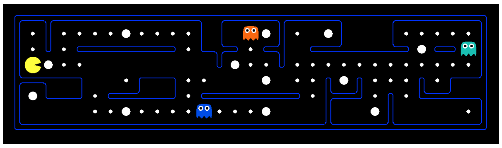
Let’s consider a variation of the game in which the maze contains only Pacman and food pellets. We can pose two distinct search problems in this scenario: pathing and eat-all-dots. Pathing attempts to solve the problem of getting from position (x1, y1) to position (x2, y2) in the maze optimally, while eat all dots attempts to solve the problem of consuming all food pellets in the maze in the shortest time possible. Below, the states, actions, transition model, and goal test for both problems are listed:
Pathing - States: (x, y) locations - Actions: North, South, East, West - Transition model (getting the next state): Update location only - Goal test: Is (x, y) = END?
Eat-all-dots - States: {(x, y) location, dot booleans} - Actions: North, South, East, West - Transition model (getting the next state): Update location and booleans - Goal test: Are all dot booleans false?
Note that for pathing, states contain less information than states for eat-all-dots, because for eat-all-dots we must maintain an array of booleans corresponding to each food pellet and whether or not it’s been eaten in the given state. A world state may contain more information still, potentially encoding information about things like total distance traveled by Pacman or all positions visited by Pacman on top of its current (x, y) location and dot booleans.
1.2.1 State Space Size
An important question that often comes up while estimating the computational runtime of solving a search problem is the size of the state space. This is done almost exclusively with the fundamental counting principle, which states that if there are n variable objects in a given world which can take on x1, x2,…, xn different values respectively, then the total number of states is x1 · x2 ·… · xn. Let’s use Pacman to show this concept by example:
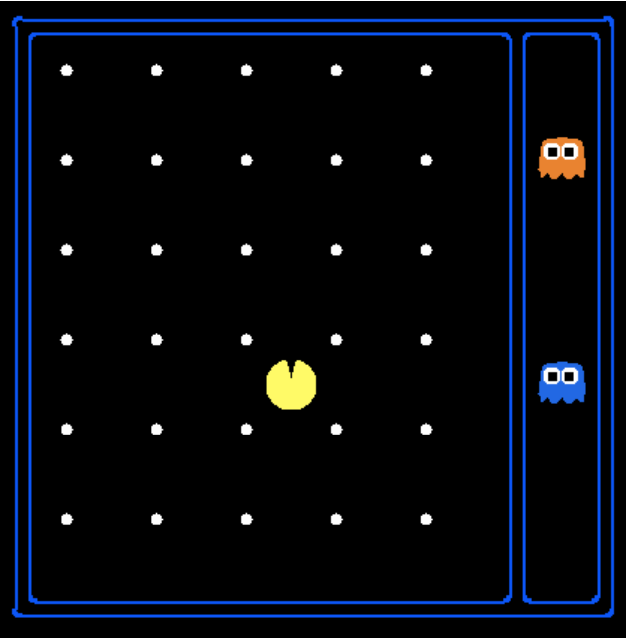
Let’s say that the variable objects and their corresponding number of possibilities are as follows: - Pacman positions - Pacman can be in 120 distinct (x,y) positions, and there is only one Pacman - Pacman Direction - this can be North, South, East, or West, for a total of 4 possibilities - Ghost positions - There are two ghosts, each of which can be in 12 distinct (x,y) positions - Food pellet configurations - There are 30 food pellets, each of which can be eaten or not eaten
Using the fundamental counting principle, we have 120 positions for Pacman, 4 directions Pacman can be facing, 12 · 12 ghost configurations (12 for each ghost), and 2 · 2 ·… · 2 = 230 food pellet configurations (each of 30 food pellets has two possible values - eaten or not eaten). This gives us a total state space size of 120 · 4 · 122×230.
1.2.2 State Space Graphs and Search Trees
Now that we’ve established the idea of a state space and the four components necessary to completely define one, we’re almost ready to begin solving search problems. The final piece of the puzzle is that of state space graphs and search trees.
Recall that a graph is defined by a set of nodes and a set of edges connecting various pairs of nodes. These edges may also have weights associated with them. A state space graph is constructed with states representing nodes, with directed edges existing from a state to its children. These edges represent actions, and any associated weights represent the cost of performing the corresponding action. Typically, state space graphs are much too large to store in memory (even our simple Pacman example from above has ≈1013 possible states, yikes!), but they’re good to keep in mind conceptually while solving problems. It’s also important to note that in a state space graph, each state is represented exactly once - there’s simply no need to represent a state multiple times, and knowing this helps quite a bit when trying to reason about search problems.
Unlike state space graphs, our next structure of interest, search trees, have no such restriction on the number of times a state can appear. This is because though search trees are also a class of graph with states as nodes and actions as edges between states, each state/node encodes not just the state itself, but the entire path (or plan) from the start state to the given state in the state space graph. Observe the state space graph and corresponding search tree below:
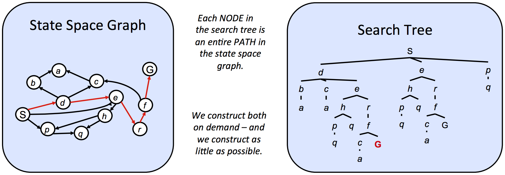
The highlighted path (S →d →e →r →f →G) in the given state space graph is represented in the corresponding search tree by following the path in the tree from the start state S to the highlighted goal state G. Similarly, each and every path from the start node to any other node is represented in the search tree by a path from the root S to some descendant of the root corresponding to the other node. Since there often exist multiple ways to get from one state to another, states tend to show up multiple times in search trees. As a result, search trees are greater than or equal to their corresponding state space graph in size.
We’ve already determined that state space graphs themselves can be enormous in size even for simple problems, and so the question arises - how can we perform useful computation on these structures if they’re too big to represent in memory? The answer lies in how we compute the children of a current state - we only store states we’re immediately working with, and compute new ones on-demand using the corresponding getNextState, getAction, and getActionCost methods. Typically, search problems are solved using search trees, where we very carefully store a select few nodes to observe at a time, iteratively replacing nodes with their children until we arrive at a goal state. There exist various methods by which to decide the order in which to conduct this iterative replacement of search tree nodes, and we’ll present these methods now.
1.3 Uninformed Search
The standard protocol for finding a plan to get from the start state to a goal state is to maintain an outer frontier of partial plans derived from the search tree. We continually expand our frontier by removing a node (which is selected using our given strategy) corresponding to a partial plan from the frontier, and replacing it on the frontier with all its children. Removing and replacing an element on the frontier with its children corresponds to discarding a single length n plan and bringing all length (n + 1) plans that stem from it into consideration. We continue this until eventually removing a goal state off the frontier, at which point we conclude the partial plan corresponding to the removed goal state is in fact a path to get from the start state to the goal state.
Practically, most implementations of such algorithms will encode information about the parent node, distance to node, and the state inside the node object. This procedure we have just outlined is known as tree search, and the pseudocode for it is presented below:
function TREE-SEARCH(problem, frontier) return a solution or failure
frontier ←INSERT(MAKE-NODE(INITIAL-STATE[problem]), frontier)
while not IS-EMPTY(frontier) do
node ←POP(frontier)
if problem.IS-GOAL(node.STATE) then return node
for each child-node in EXPAND(problem, node) do
add child-node to frontier
return failureThe EXPAND function appearing in the pseudocode returns all the possible nodes that can be reached from a given node by considering all available actions. The pseudocode of the function is as follows:
function EXPAND(problem, node) yields nodes
s ←node.STATE
for each action in problem.ACTIONS(s) do
s' ←problem.RESULT(s, action)
yield NODE(STATE=s', PARENT=node, ACTION=action)When we have no knowledge of the location of goal states in our search tree, we are forced to select our strategy for tree search from one of the techniques that falls under the umbrella of uninformed search. We’ll now cover three such strategies in succession: depth-first search, breadth-first search, and uniform cost search. Along with each strategy, some rudimentary properties of the strategy are presented as well, in terms of the following:
-
The completeness of each search strategy - if there exists a solution to the search problem, is the strategy guaranteed to find it given infinite computational resources?
-
The optimality of each search strategy - is the strategy guaranteed to find the lowest cost path to a goal state?
-
The branching factor b - The increase in the number of nodes on the frontier each time a frontier node is dequeued and replaced with its children is O(b). At depth k in the search tree, there exists O(bk) nodes.
-
The maximum depth m.
-
The depth of the shallowest solution s.
1.3.1 Depth-First Search
-
Description - Depth-first search (DFS) is a strategy for exploration that always selects the deepest frontier node from the start node for expansion.
-
Frontier Representation - Removing the deepest node and replacing it on the frontier with its children necessarily means the children are now the new deepest nodes - their depth is one greater than the depth of the previous deepest node. This implies that to implement DFS, we require a structure that always gives the most recently added objects highest priority. A last-in, first-out (LIFO) stack does exactly this, and is what is traditionally used to represent the frontier when implementing DFS.
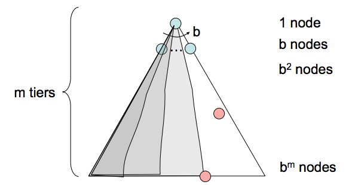
-
Completeness - Depth-first search is not complete. If there exist cycles in the state space graph, this inevitably means that the corresponding search tree will be infinite in depth. Hence, there exists the possibility that DFS will faithfully yet tragically get “stuck” searching for the deepest node in an infinite-sized search tree, doomed to never find a solution.
-
Optimality - Depth-first search simply finds the “leftmost” solution in the search tree without regard for path costs, and so is not optimal.
-
Time Complexity - In the worst case, depth first search may end up exploring the entire search tree. Hence, given a tree with maximum depth m, the runtime of DFS is O(bm).
-
Space Complexity - In the worst case, DFS maintains b nodes at each of m depth levels on the frontier. This is a simple consequence of the fact that once b children of some parent are enqueued, the nature of DFS allows only one of the subtrees of any of these children to be explored at any given point in time. Hence, the space complexity of DFS is O(bm).
1.3.2 Breadth-First Search
-
Description - Breadth-first search is a strategy for exploration that always selects the shallowest frontier node from the start node for expansion.
-
Frontier Representation - If we want to visit shallower nodes before deeper nodes, we must visit nodes in their order of insertion. Hence, we desire a structure that outputs the oldest enqueued object to represent our frontier. For this, BFS uses a first-in, first-out (FIFO) queue, which does exactly this.
-
Completeness - If a solution exists, then the depth of the shallowest node s must be finite, so BFS must eventually search this depth. Hence, it’s complete.
-
Optimality - BFS is generally not optimal because it simply does not take costs into consideration when determining which node to replace on the frontier. The special case where BFS is guaranteed to be optimal is if all edge costs are equivalent, because this reduces BFS to a special case of uniform cost search, which is discussed below.
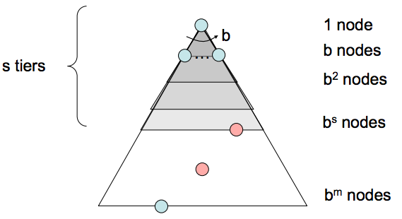
-
Time Complexity - We must search 1 + b + b2 +… + bs nodes in the worst case, since we go through all nodes at every depth from 1 to s. Hence, the time complexity is O(bs).
-
Space Complexity - The frontier, in the worst case, contains all the nodes in the level corresponding to the shallowest solution. Since the shallowest solution is located at depth s, there are O(bs) nodes at this depth.
1.3.3 Uniform Cost Search
-
Description - Uniform cost search (UCS), our last strategy, is a strategy for exploration that always selects the lowest cost frontier node from the start node for expansion.
-
Frontier Representation - To represent the frontier for UCS, the choice is usually a heap-based priority queue, where the priority for a given enqueued node v is the path cost from the start node to v, or the backward cost of v. Intuitively, a priority queue constructed in this manner simply reshuffles itself to maintain the desired ordering by path cost as we remove the current minimum cost path and replace it with its children.
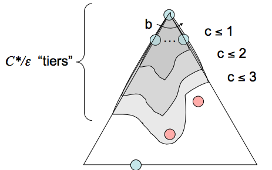
-
Completeness - Uniform cost search is complete. If a goal state exists, it must have some finite length shortest path; hence, UCS must eventually find this shortest length path.
-
Optimality - UCS is also optimal if we assume all edge costs are nonnegative. By construction, since we explore nodes in order of increasing path cost, we’re guaranteed to find the lowest-cost path to a goal state. The strategy employed in Uniform Cost Search is identical to that of Dijkstra’s algorithm, and the chief difference is that UCS terminates upon finding a solution state instead of finding the shortest path to all states. Note that having negative edge costs in our graph can make nodes on a
path have decreasing length, ruining our guarantee of optimality. (See Bellman-Ford algorithm for a slower algorithm that handles this possibility) • Time Complexity - Let us define the optimal path cost as C∗and the minimal cost between two nodes in the state space graph as ε. Then, we must roughly explore all nodes at depths ranging from 1 to C∗
ε, leading to an runtime of O(b C∗
ε). • Space Complexity - Roughly, the frontier will contain all nodes at the level of the cheapest solution, so the space complexity of UCS is estimated as O(b C∗
ε).
As a parting note about uninformed search, it’s critical to note that the three strategies outlined above are fundamentally the same - differing only in expansion strategy, with their similarities being captured by the tree search pseudocode presented above.
1.4 Informed Search
Uniform cost search is good because it’s both complete and optimal, but it can be fairly slow because it expands in every direction from the start state while searching for a goal. If we have some notion of the direction in which we should focus our search, we can significantly improve performance and “hone in” on a goal much more quickly. This is exactly the focus of informed search.
1.4.1 Heuristics
Heuristics are the driving force that allow estimation of distance to goal states - they’re functions that take in a state as input and output a corresponding estimate. The computation performed by such a function is specific to the search problem being solved. For reasons that we’ll see in A* search, below, we usually want heuristic functions to be a lower bound on this remaining distance to the goal, and so heuristics are typically solutions to relaxed problems (where some of the constraints of the original problem have been removed). Turning to our Pacman example, let’s consider the pathing problem described earlier. A common heuristic that’s used to solve this problem is the Manhattan distance, which for two points (x1, y1) and (x2, y2) is defined as follows:
Manhattan(x1, y1, x2, y2) = |x1 −x2| + |y1 −y2|
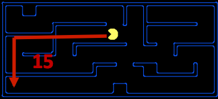
The above visualization shows the relaxed problem that the Manhattan distance helps solve - assuming Pacman desires to get to the bottom left corner of the maze, it computes the distance from Pacman’s current location to Pacman’s desired location assuming a lack of walls in the maze. This distance is the exact goal distance in the relaxed search problem, and correspondingly is the estimated goal distance in the actual search problem. With heuristics, it becomes very easy to implement logic in our agent that enables them to “prefer” expanding states that are estimated to be closer to goal states when deciding which action to perform. This concept of preference is very powerful, and is utilized by the following two search algorithms that implement heuristic functions: greedy search and A*.
1.4.2 Greedy Search
-
Description - Greedy search is a strategy for exploration that always selects the frontier node with the lowest heuristic value for expansion, which corresponds to the state it believes is nearest to a goal.
-
Frontier Representation - Greedy search operates identically to UCS, with a priority queue Frontier Representation. The difference is that instead of using computed backward cost (the sum of edge weights
in the path to the state) to assign priority, greedy search uses estimated forward cost in the form of heuristic values. • Completeness and Optimality - Greedy search is not guaranteed to find a goal state if one exists, nor is it optimal, particularly in cases where a very bad heuristic function is selected. It generally acts fairly unpredictably from scenario to scenario, and can range from going straight to a goal state to acting like a badly-guided DFS and exploring all the wrong areas.
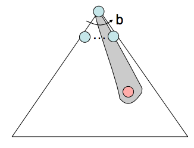
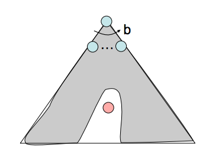
1.4.3 A* Search
-
Description - A* search is a strategy for exploration that always selects the frontier node with the lowest estimated total cost for expansion, where total cost is the entire cost from the start node to the goal node.
-
Frontier Representation - Just like greedy search and UCS, A* search also uses a priority queue to represent its frontier. Again, the only difference is the method of priority selection. A* combines the total backward cost (sum of edge weights in the path to the state) used by UCS with the estimated forward cost (heuristic value) used by greedy search by adding these two values, effectively yielding an estimated total cost from start to goal. Given that we want to minimize the total cost from start to goal, this is an excellent choice.
-
Completeness and Optimality - A* search is both complete and optimal, given an appropriate heuristic (which we’ll cover in a minute). It’s a combination of the good from all the other search strategies we’ve covered so far, incorporating the generally high speed of greedy search with the optimality and completeness of UCS!
1.4.4. Admissibility
Now that we’ve discussed heuristics and how they are applied in both greedy and A* search, let’s spend some time discussing what constitutes a good heuristic. To do so, let’s first reformulate the methods used for determining priority queue ordering in UCS, greedy search, and A* with the following definitions:
-
g(n) - The function representing total backwards cost computed by UCS.
-
h(n) - The heuristic value function, or estimated forward cost, used by greedy search.
-
f(n) - The function representing estimated total cost, used by A* search. f(n) = g(n) + h(n).
Before attacking the question of what constitutes a “good” heuristic, we must first answer the question of whether A* maintains its properties of completeness and optimality regardless of the heuristic function we use. Indeed, it’s very easy to find heuristics that break these two coveted properties. As an example, consider the heuristic function h(n) = 1 −g(n). Regardless of the search problem, using this heuristic yields:
f(n) = g(n) + h(n) = g(n) + (1 −g(n)) = 1
Hence, such a heuristic reduces A* search to BFS, where all edge costs are equivalent. As we’ve already shown, BFS is not guaranteed to be optimal in the general case where edge weights are not constant.
The condition required for optimality when using A* tree search is known as admissibility. The admissibility constraint states that the value estimated by an admissible heuristic is neither negative nor an overestimate.
Defining h∗(n) as the true optimal forward cost to reach a goal state from a given node n, we can formulate the admissibility constraint mathematically as follows:
∀n, 0 ≤h(n) ≤h∗(n)
Theorem. For a given search problem, if the admissibility constraint is satisfied by a heuristic function h, using A* tree search with h on that search problem will yield an optimal solution.
Proof. Assume two reachable goal states are located in the search tree for a given search problem, an optimal goal A and a suboptimal goal B. Some ancestor n of A (including perhaps A itself) must currently be on the frontier, since A is reachable from the start state. We claim n will be selected for expansion before B, using the following three statements:
-
g(A) < g(B). Because A is given to be optimal and B is given to be suboptimal, we can conclude that A has a lower backwards cost to the start state than B.
-
h(A) = h(B) = 0, because we are given that our heuristic satisfies the admissibility constraint. Since both A and B are both goal states, the true optimal cost to a goal state from A or B is simply h∗(n) = 0; hence 0 ≤h(n) ≤0.
-
f(n) ≤f(A), because, through admissibility of h, f(n) = g(n) + h(n) ≤g(n) + h∗(n) = g(A) = f(A). The total cost through node n is at most the true backward cost of A, which is also the total cost of A.
We can combine statements 1. and 2. to conclude that f(A) < f(B) as follows:
f(A) = g(A) + h(A) = g(A) < g(B) = g(B) + h(B) = f(B)
A simple consequence of combining the above derived inequality with statement 3. is the following:
f(n) ≤f(A) ∧f(A) < f(B) →f(n) < f(B)
Hence, we can conclude that n is expanded before B. Because we have proven this for arbitrary n, we can conclude that all ancestors of A (including A itself) expand before B.
One problem we found above with tree search was that in some cases it could fail to ever find a solution, getting stuck searching the same cycle in the state space graph infinitely. Even in situations where our search technique doesn’t involve such an infinite loop, it’s often the case that we revisit the same node multiple times because there’s multiple ways to get to that same node. This leads to exponentially more work, and the natural solution is to simply keep track of which states you’ve already expanded, and never expand them again. More explicitly, maintain a “reached” set of expanded nodes while utilizing your search method of choice. Then, ensure that each node isn’t already in the set before expansion and add it to the set after expansion if it’s not. Tree search with this added optimization is known as graph search.1 Additionally, there is one other key factor that is required to maintain optimality. Consider the following simple state space graph and corresponding search tree, annotated with weights and heuristic values:
In the above example, it’s clear that the optimal route is to follow S → A → C → G, yielding a total path cost of 1 + 1 + 3 = 5. The only other path to the goal, S → B → C → G has a path cost of 1 + 2 + 3 = 6. However, because the heuristic value of node A is so much larger than the heuristic value of node B, node C is first expanded along the second, suboptimal path as a child of node B. It’s then placed into the “reached” set, and so A* graph search fails to reexpand it when it visits it as a child of A, so it never finds the optimal solution. Hence, to maintain optimality under A* graph search, we not only need to check whether A* has already visited a node, but also if it has found a cheaper path to it.
function A*-GRAPH-SEARCH(problem, frontier) return a solution or failure
reached ←an empty dict mapping nodes to the cost to each one
frontier ←INSERT((MAKE-NODE(INITIAL-STATE[problem]),0), frontier)
while not IS-EMPTY(frontier) do
node, node.CostToNode ←POP(frontier)
if problem.IS-GOAL(node.STATE) then return node1In other courses, such as CS70 and CS170, you may have been introduced to “trees” and “graphs” in the graph theory context. Specifically, a tree being a type of graph that satisfies certain constraints (connected and acyclic). This is not the distinction between tree search and graph search that we make in this course.
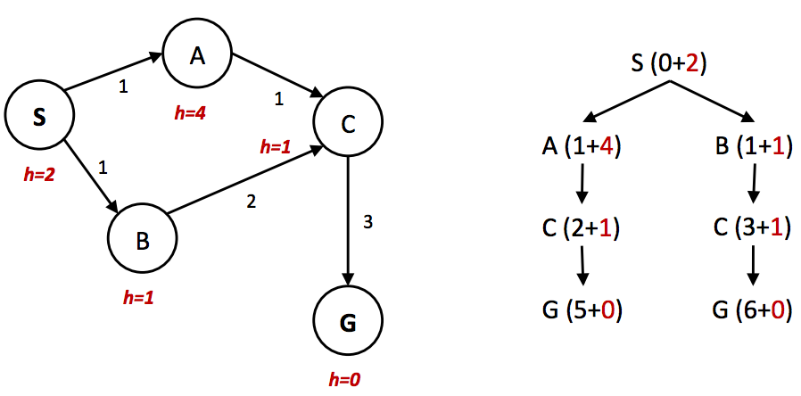
if node.STATE is not in reached or reached[node.STATE] > node.CostToNode then
reached[node.STATE] = node.CostToNode
for each child-node in EXPAND(problem, node) do
frontier ←INSERT((child-node, child-node.COST + CostToNode), frontier)
return failureNote that in implementation, it’s critically important to store the reached set as a disjoint set and not a list. Storing it as a list requires costs O(n) operations to check for membership, which eliminates the performance improvement graph search is intended to provide.
A couple of important highlights from the discussion above before we proceed: for heuristics that are admissible to be valid, it must by definition be the case that h(G) = 0 for any goal state G.
1.4.5 Dominance
Now that we’ve established the property of admissibility and its role in maintaining the optimality of A* search, we can return to our original problem of creating “good” heuristics, and how to tell if one heuristic is better than another. The standard metric for this is that of dominance. If heuristic $$ is dominant over heuristic b, then the estimated goal distance for a is greater than the estimated goal distance for b for every node in the state space graph. Mathematically,
∀n: ha(n) ≥hb(n)
Dominance very intuitively captures the idea of one heuristic being better than another - if one admissible heuristic is dominant over another, it must be better because it will always more closely estimate the distance to a goal from any given state. Additionally, the trivial heuristic is defined as h(n) = 0, and using it reduces A* search to UCS. All admissible heuristics dominate the trivial heuristic. The trivial heuristic is often incorporated at the base of a semi-lattice for a search problem, a dominance hierarchy of which it is located at the bottom. Below is an example of a semi-lattice that incorporates various heuristics ha, hb, and hc ranging from the trivial heuristic at the bottom to the exact goal distance at the top:
As a general rule, the max function applied to multiple admissible heuristics will also always be admissible. This is simply a consequence of all values output by the heuristics for any given state being constrained by the admissibility condition, 0 ≤h(n) ≤h∗(n). The maximum of numbers in this range must also fall in the
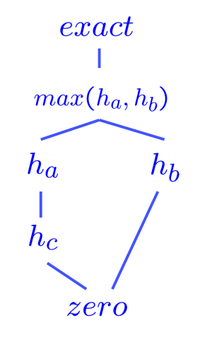
same range. It’s common practice to generate multiple admissible heuristics for any given search problem and compute the max over the values output by them to generate a heuristic that dominates (and hence is better than) all of them individually.
1.5 Local Search
In the previous note, we wanted to find the goal state, along with the optimal path to get there. But in some problems, we only care about finding the goal state — reconstructing the path can be trivial. For example, in Sudoku, the optimal configuration is the goal. Once you know it, you know how to get there by filling in the squares one by one.
Local search algorithms allow us to find goal states without worrying about the path to get there. In local search problems, the state space consists of sets of “complete” solutions. We use these algorithms to try to find a configuration that satisfies some constraints or optimizes some objective function.
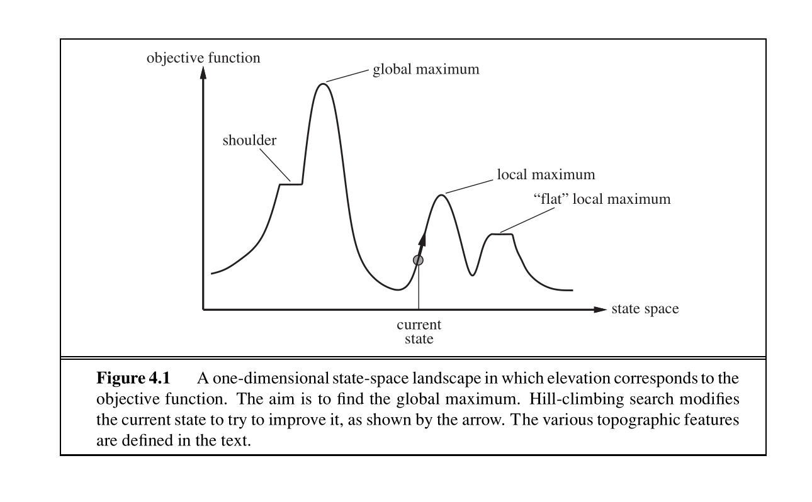
The figure above shows the one-dimensional plot of an objective function on the state space. For that function, we wish to find the state that corresponds to the highest objective value. The basic idea of local search algorithms is that from each state, they locally move towards states that have a higher objective value until a maximum (hopefully the global one) is reached. We will be covering four such algorithms: hill-climbing, simulated annealing, local beam search, and genetic algorithms. All these algorithms are also used in optimization tasks to either maximize or minimize an objective function.
1.5.1 Hill-Climbing Search
The hill-climbing search algorithm (or steepest-ascent) moves from the current state towards the neighboring state that increases the objective value the most. The algorithm does not maintain a search tree but only tracks the states and the corresponding values of the objective. The “greediness” of hill-climbing makes it vulnerable to being trapped in local maxima (see figure 4.1), as locally those points appear as global maxima to the algorithm, and plateaus (see figure 4.1). Plateaus can be categorized into “flat” areas at which no direction leads to improvement (“flat local maxima”) or flat areas from which progress can be slow (“shoulders”).
Variants of hill-climbing, like stochastic hill-climbing (which selects an action randomly among the possible uphill moves), have been proposed. Stochastic hill-climbing has been shown in practice to converge to higher maxima at the cost of more iterations. Another variant, random sideways moves, allows moves that don’t strictly increase the objective, helping the algorithm escape “shoulders.”
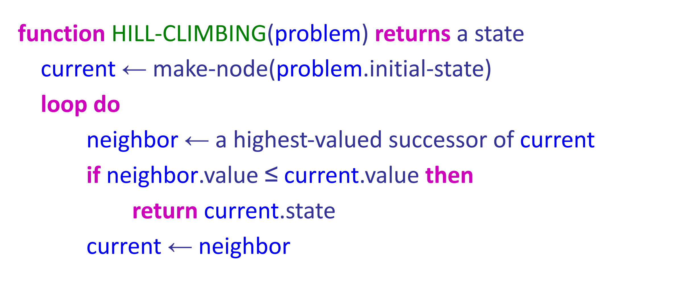
The pseudocode of hill-climbing can be seen above. As the name suggests, the algorithm iteratively moves to a state with a higher objective value until no such progress is possible. Hill-climbing is incomplete. Random-restart hill-climbing, on the other hand, conducts a number of hill-climbing searches from randomly chosen initial states, making it trivially complete as, at some point, a randomly chosen initial state may converge to the global maximum.
As a note, later in this course, you will encounter the term “gradient descent.” It is the exact same idea as hill-climbing, except instead of maximizing an objective function, we will want to minimize a cost function.
1.5.2 Simulated Annealing Search
The second local search algorithm we will cover is simulated annealing. Simulated annealing aims to combine random walk (randomly moving to nearby states) and hill-climbing to obtain a complete and efficient search algorithm. In simulated annealing, we allow moves to states that can decrease the objective.
The algorithm chooses a random move at each timestep. If the move leads to a higher objective value, it is always accepted. If it leads to a smaller objective value, the move is accepted with some probability. This probability is determined by the temperature parameter, which initially is high (allowing more “bad” moves) and decreases according to some “schedule.” Theoretically, if the temperature is decreased slowly enough, the simulated annealing algorithm will reach the global maximum with a probability approaching 1.

1.5.3 Local Beam Search
Local beam search is another variant of the hill-climbing search algorithm. The key difference between the two is that local beam search keeps track of k states (threads) at each iteration. The algorithm starts with a random initialization of k states, and at each iteration, it selects k new states, as done in hill-climbing. These aren’t just k copies of the regular hill-climbing algorithm. Crucially, the algorithm selects the k best successor states from the complete list of successor states from all the threads. If any of the threads find the optimal value, the algorithm stops.
The k threads can share information between them, allowing “good” threads (for which objectives are high) to “attract” the other threads to that region as well.
Local beam search is also susceptible to getting stuck in “flat” regions like hill-climbing does. Stochastic beam search, analogous to stochastic hill-climbing, can alleviate this issue.
1.5.4 Genetic Algorithms
Finally, we present genetic algorithms, which are a variant of local beam search and are extensively used in many optimization tasks. As indicated by the name, genetic algorithms take inspiration from evolution. Genetic algorithms begin as beam search with k randomly initialized states called the population. States (called individuals) are represented as a string over a finite alphabet.
Let’s revisit the 8*-Queens problem* presented in lecture. As a recap, 8-Queens is a constraint-satisfaction problem where we aim to situate 8 queens on an 8-by-8 board. The constraint-satisfying solution will not have any attacking pairs of queens, which are queens in the same row, column, or diagonal. All of the previously covered algorithms can be used to approach the 8-Queens problem.
For a genetic algorithm, we represent each of the eight queens with a number from 1 −8, representing the location of each queen in its column (column (a) in Fig. 4.6). Each individual is evaluated using an evaluation function (fitness function), and they are ranked according to the values of that function. For the 8-Queens problem, this is the number of non-attacking (non-conflicted) pairs of queens.
The probability of choosing a state to “reproduce” is proportional to the value of that state. We proceed to select pairs of states to reproduce by sampling from these probabilities (column (c) in Fig. 4.6). Offspring are generated by crossing over parent strings at the crossover point. The crossover point is chosen randomly for each pair. Finally, each offspring is susceptible to some random mutation with independent probability. The pseudocode for the genetic algorithm can be seen below.
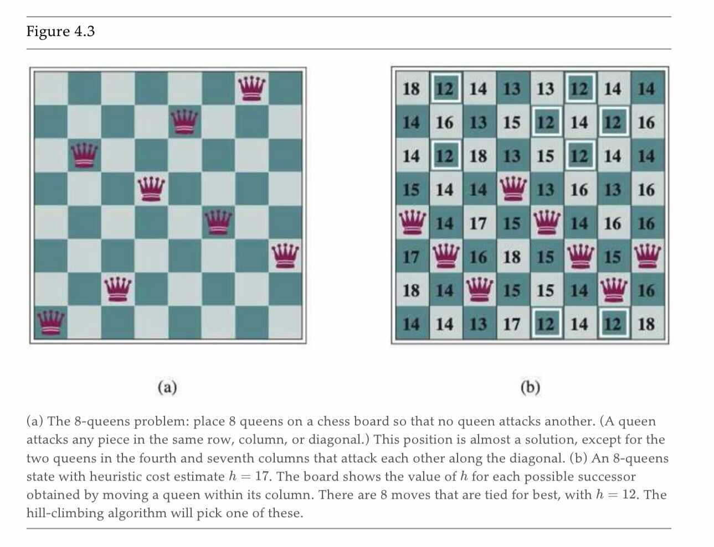

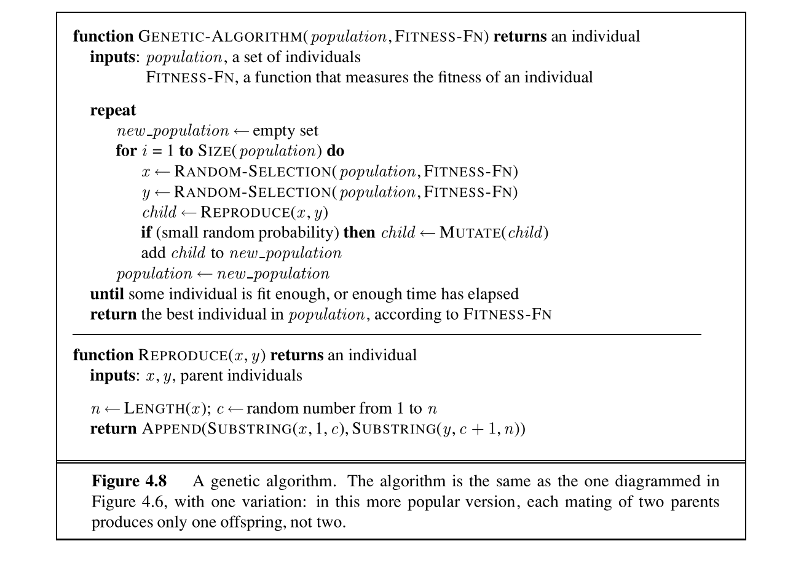
Similar to stochastic beam search, genetic algorithms try to move uphill while exploring the state space and exchanging information between threads. Their main advantage is the use of crossovers — large blocks of letters that have evolved and lead to high valuations can be combined with other such blocks to produce a solution with a high total score.
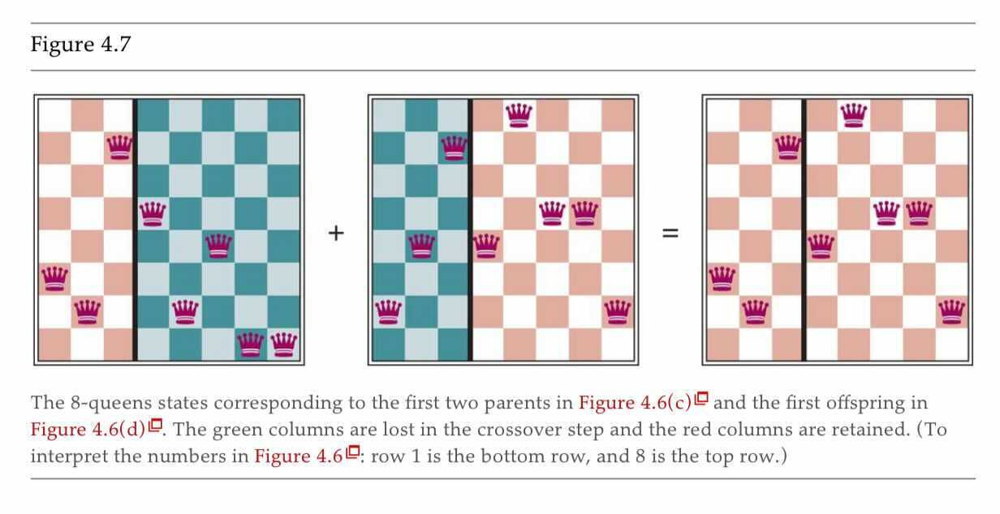
1.5 Summary
We discussed search problems and their components: a state space, a set of actions, a transition function, an action cost, a start state and a goal state. The agent interacts with the environment through its sensors and its actuators. The agent function describes what the agent does in all circumstances. Rationality of the agent means that the agent seeks to maximize their expected utility. Finally, we define our task environments using PEAS descriptions.
Regarding the search problems, they can be solved using a variety of search techniques, including but not limited to the five we study in CS 188:
-
Breadth-first Search
-
Depth-first Search
-
Uniform Cost Search
-
Greedy Search
-
A Search*
The first three search techniques listed above are examples of uninformed search, while the latter two are examples of informed search which use heuristics to estimate goal distance and optimize performance.
We additionally made a distinction between tree search and graph search algorithms for the above techniques.
we also discussed local search algorithms and their motivation. We can use these approaches when we don’t care about the path to some goal state and want to satisfy constraints or optimize an objective. Local search approaches allow us to save space and find adequate solutions when working in large state spaces!
We went over a few foundational local search approaches, which build upon each other:
-
Hill-Climbing
-
Simulated Annealing
-
Local Beam Search
-
Genetic Algorithms
The idea of optimizing a function will reappear later in this course, especially when we cover neural networks.
2. CSPs
Author: Nikhil Sharma
Edited by: Pranav Muralikrishnan and Wesley Zheng
Credit: Some sections adapted from the textbook Artificial Intelligence: A Modern Approach.
Last updated: September 2024
2.1 Constraint Satisfaction Problems
In the previous note, we learned how to find optimal solutions to search problems, a type of planning problem. Now, we’ll learn about solving a related class of problems, constraint satisfaction problems (CSPs). Unlike search problems, CSPs are a type of identification problem, problems in which we must simply identify whether a state is a goal state or not, with no regard to how we arrive at that goal. CSPs are defined by three factors:
-
Variables - CSPs possess a set of N variables X1,…, XN that can each take on a single value from some defined set of values.
-
Domain - A set {x1,…, xd} representing all possible values that a CSP variable can take on.
-
Constraints - Constraints define restrictions on the values of variables, potentially with regard to other variables.
Consider the N-queens identification problem: given an N × N chessboard, can we find a configuration in which to place N queens on the board such that no two queens attack each another?
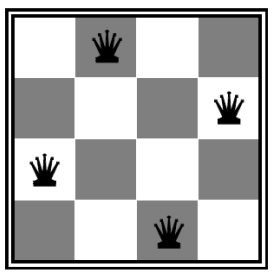
We can formulate this problem as a CSP as follows:
-
Variables - Xij, with 0 ≤i, j < N. Each Xij represents a grid position on our N × N chessboard, with i and j specifying the row and column number respectively.
-
Domain - {0, 1}. Each Xij can take on either the value 0 or 1, a boolean value representing the existence of a queen at position (i, j) on the board.
-
Constraints -
-
∀i, j, k (Xij, Xik) ∈{(0, 0), (0, 1), (1, 0)}. This constraint states that if two variables have the same value for i, only one of them can take on a value of 1. This effectively encapsulates the condition that no two queens can be in the same row.
-
∀i, j, k (Xij, Xkj) ∈{(0, 0), (0, 1), (1, 0)}. Almost identically to the previous constraint, this constraint states that if two variables have the same value for j, only one of them can take on a value of 1, encapsulating the condition that no two queens can be in the same column.
-
∀i, j, k (Xij, Xi~~k,j~~k) ∈{(0, 0), (0, 1), (1, 0)}. With similar reasoning as above, we can see that this constraint and the next represent the conditions that no two queens can be in the same major or minor diagonals, respectively.
-
∀i, j, k (Xij, Xi+k,j−k) ∈{(0, 0), (0, 1), (1, 0)}.
-
P
-
i,j Xij = N. This constraint states that we must have exactly N grid positions marked with a 1, and all others marked with a 0, capturing the requirement that there are exactly N queens on the board.
Constraint satisfaction problems are NP-hard, which loosely means that there exists no known algorithm for finding solutions to them in polynomial time. Given a problem with N variables with domain of size O(d) for each variable, there are O(dN) possible assignments, exponential in the number of variables. We can often get around this caveat by formulating CSPs as search problems, defining states as partial assignments (variable assignments to CSPs where some variables have been assigned values while others have not). Correspondingly, the successor function for a CSP state outputs all states with one new variable assigned, and the goal test verifies all variables are assigned and all constraints are satisfied in the state it’s testing. Constraint satisfaction problems tend to have significantly more structure than traditional search problems, and we can exploit this structure by combining the above formulation with appropriate heuristics to hone in on solutions in a feasible amount of time.
2.1.1 Constraint Graphs
Let’s introduce a second CSP example: map coloring. Map coloring solves the problem where we’re given a set of colors and must color a map such that no two adjacent states or regions have the same color.
Constraint satisfaction problems are often represented as constraint graphs, where nodes represent variables and edges represent constraints between them. There are many different types of constraints, and each is handled slightly differently:
-
Unary Constraints - Unary constraints involve a single variable in the CSP. They are not represented in constraint graphs, instead simply being used to prune the domain of the variable they constrain when necessary.
-
Binary Constraints - Binary constraints involve two variables. They’re represented in constraint graphs as traditional graph edges.
-
Higher-order Constraints - Constraints involving three or more variables can also be represented with edges in a CSP graph, they just look slightly unconventional.
Consider map coloring the map of Australia:
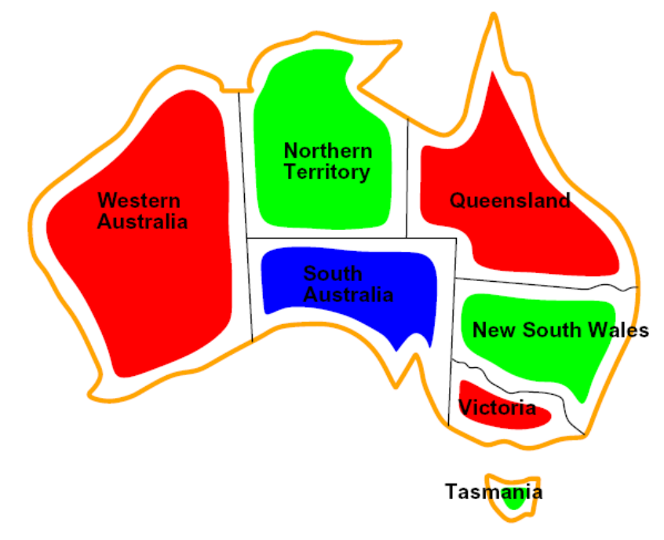
The constraints in this problem are simply that no two adjacent states can be the same color. As a result, by drawing an edge between every pair of states that are adjacent to one another, we can generate the constraint graph for the map coloring of Australia as follows:
The value of constraint graphs is that we can use them to extract valuable information about the structure of the CSPs we are solving. By analyzing the graph of a CSP, we can determine things about it like whether it’s sparsely or densely connected/constrained and whether or not it’s tree-structured. We’ll cover this more in depth as we discuss solving constraint satisfaction problems in more detail.
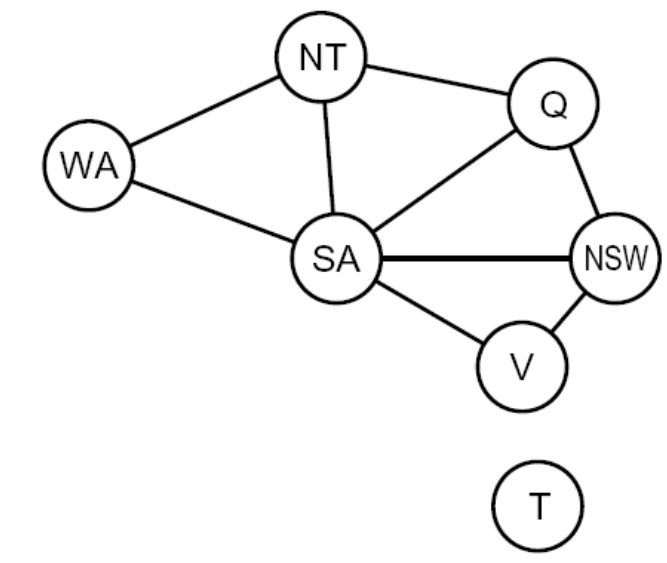
2.2 Solving Constraint Satisfaction Problems
Constraint satisfaction problems are traditionally solved using a search algorithm known as backtracking search. Backtracking search is an optimization on depth-first search used specifically for the problem of constraint satisfaction, with improvements coming from two main principles:
-
Fix an ordering for variables, and select values for variables in this order. Because assignments are commutative (e.g. assigning WA = Red, NT = Green is identical to NT = Green, WA = Red), this is valid.
-
When selecting values for a variable, only select values that don’t conflict with any previously assigned values. If no such values exist, backtrack and return to the previous variable, changing its value.
The pseudocode for how recursive backtracking works is presented below:
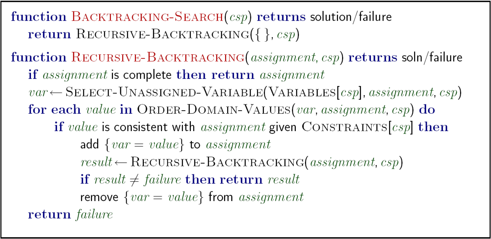
For a visualization of how this process works, consider the partial search trees for both depth-first search and backtracking search in map coloring:
Note how DFS regretfully colors everything red before ever realizing the need for change, and even then doesn’t move too far in the right direction towards a solution. On the other hand, backtracking search only assigns a value to a variable if that value violates no constraints, leading to significantly less backtracking. Though backtracking search is a vast improvement over the brute-forcing of depth-first search, we can get more gains in speed still with further improvements through filtering, variable/value ordering, and structural exploitation.
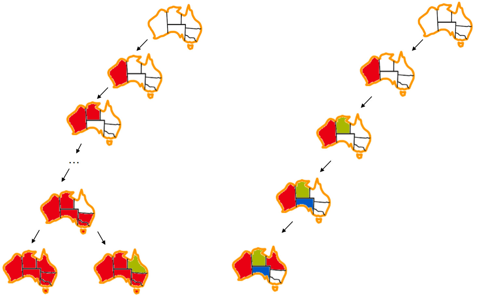
2.3 Filtering
The first improvement to CSP performance we’ll consider is filtering, which checks if we can prune the domains of unassigned variables ahead of time by removing values we know will result in backtracking. A naïve method for filtering is forward checking, which whenever a value is assigned to a variable Xi, prunes the domains of unassigned variables that share a constraint with Xi that would violate the constraint if assigned. Whenever a new variable is assigned, we can run forward checking and prune the domains of unassigned variables adjacent to the newly assigned variable in the constraint graph. Consider our map coloring example, with unassigned variables and their potential values:
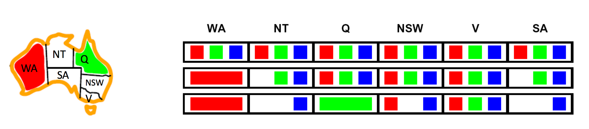
Note how as we assign WA = red and then Q = green, the size of the domains for NT, NSW, and SA (states adjacent to WA, Q, or both) decrease in size as values are eliminated. The idea of forward checking can be generalized into the principle of arc consistency. For arc consistency, we interpret each undirected edge of the constraint graph for a CSP as two directed edges pointing in opposite directions. Each of these directed edges is called an arc. The arc consistency algorithm works as follows:
-
Begin by storing all arcs in the constraint graph for the CSP in a queue Q.
-
Iteratively remove arcs from Q and enforce the condition that in each removed arc Xi −→Xj, for every remaining value v for the tail variable Xi, there is at least one remaining value w for the head variable Xj such that Xi = v, Xj = w does not violate any constraints. If some value v for Xi would not work with any of the remaining values for Xj, we remove v from the set of possible values for Xi.
-
If at least one value is removed for Xi when enforcing arc consistency for an arc Xi −→Xj, add arcs of the form Xk −→Xi to Q, for all unassigned variables Xk. If an arc Xk −→Xi is already in Q during this step, it doesn’t need to be added again.
-
Continue until Q is empty, or the domain of some variable is empty and triggers a backtrack.
The arc consistency algorithm is typically not the most intuitive, so let’s walk through a quick example with map coloring:
We begin by adding all arcs between unassigned variables sharing a constraint to a queue $ Q $, which gives us:
Q = [SA →V, V →SA, SA →NSW, NSW →SA, SA →NT, NT →SA, V →NSW, NSW →V ]
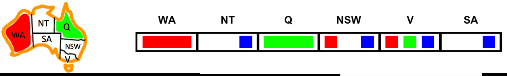
For our first arc, SA →V, we see that for every value in the domain of SA, {blue}, there is at least one value in the domain of V, {red, green, blue}, that violates no constraints, and so no values need to be pruned from SA’s domain. However, for our next arc V →SA, if we set V = blue we see that $ SA $ will have no remaining values that violate no constraints, and so we prune blue from V ’s domain.
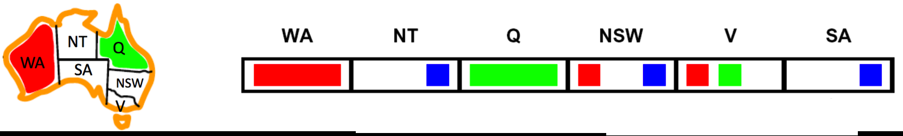
Because we pruned a value from the domain of V, we need to enqueue all arcs with V at the head - SA →V, NSW →V. Since NSW →V is already in Q, we only need to add SA →V, leaving us with our updated queue:
Q = [SA →NSW, NSW →SA, SA →NT, NT →SA, V →NSW, NSW →V, SA →V ]
We can continue this process until we eventually remove the arc SA →NT from Q. Enforcing arc consistency on this arc removes blue from SA’s domain, leaving it empty and triggering a backtrack. Note that the arc NSW →SA appears before SA →NT in Q and that enforcing consistency on this arc removes blue from the domain of NSW.
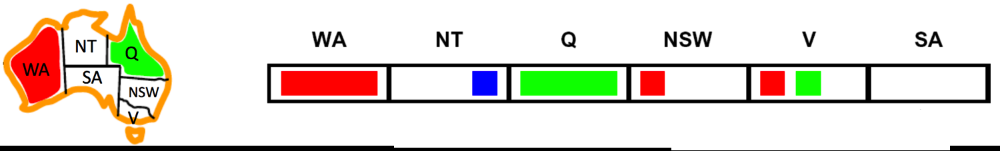
Arc consistency is typically implemented with the AC-3 algorithm (Arc Consistency Algorithm #3), for which the pseudocode is as follows:
The AC-3 algorithm has a worst-case time complexity of O(ed3), where e is the number of arcs (directed edges) and d is the size of the largest domain. Overall, arc consistency is more holistic of a domain pruning technique than forward checking and leads to fewer backtracks, but requires running significantly more computation in order to enforce. Accordingly, it’s important to take into account this tradeoff when deciding which filtering technique to implement for the CSP you’re attempting to solve.
As an interesting parting note about consistency, arc consistency is a subset of a more generalized notion of consistency known as k-consistency, which when enforced guarantees that for any set of k nodes in the CSP, a consistent assignment to any subset of k −1 nodes guarantees that the kth node will have at least one consistent value. This idea can be further extended through the idea of strong k-consistency. A graph
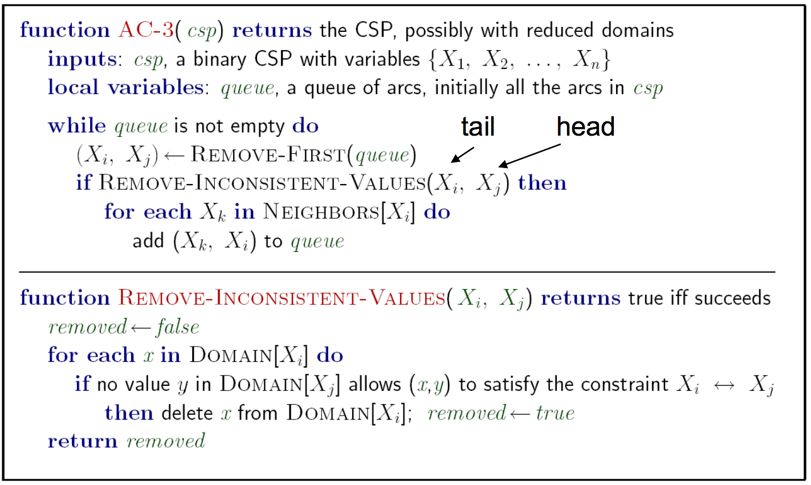
that is strong k-consistent possesses the property that any subset of k nodes is not only k-consistent but also k −1, k −2,…, 1-consistent as well. Not surprisingly, imposing a higher degree of consistency on a CSP is more expensive to compute. Under this generalized definition for consistency, we can see that arc consistency is equivalent to 2-consistency.
2.4 Ordering
We’ve delineated that when solving a CSP, we fix some ordering for both the variables and values involved. In practice, it’s often much more effective to compute the next variable and corresponding value “on the fly” with two broad principles, minimum remaining values and least constraining value:
-
Minimum Remaining Values (MRV) - When selecting which variable to assign next, using an MRV policy chooses whichever unassigned variable has the fewest valid remaining values (the most constrained variable). This is intuitive in the sense that the most constrained variable is most likely to run out of possible values and result in backtracking if left unassigned, and so it’s best to assign a value to it sooner than later.
-
Least Constraining Value (LCV) - Similarly, when selecting which value to assign next, a good policy to implement is to select the value that prunes the fewest values from the domains of the remaining unassigned values. Notably, this requires additional computation (e.g. rerunning arc consistency/forward checking or other filtering methods for each value to find the LCV), but can still yield speed gains depending on usage.
2.4.1 Structure
A final class of improvements to solving constraint satisfaction problems are those that exploit their structure. In particular, if we’re trying to solve a tree-structured CSP (one that has no loops in its constraint graph), we can reduce the runtime for finding a solution from O(dN) all the way to O(nd2), linear in the number of variables. This can be done with the tree-structured CSP algorithm, outlined below:
-
First, pick an arbitrary node in the constraint graph for the CSP to serve as the root of the tree (it doesn’t matter which one because basic graph theory tells us any node of a tree can serve as a root).
-
Convert all undirected edges in the tree to directed edges that point away from the root. Then linearize (or topologically sort) the resulting directed acyclic graph. In simple terms, this just means ordering the nodes of the graph such that all edges point rightwards. Noting that we select node A to be our root and direct all edges to point away from A, this process results in the following conversion for the CSP presented below:
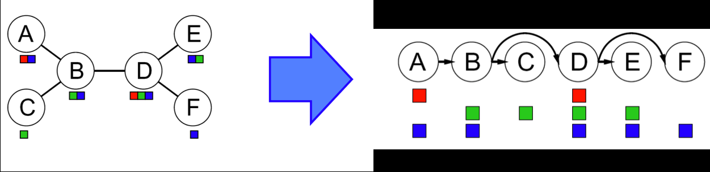
-
Perform a backwards pass of arc consistency. Iterating from i = n down to i = 2, enforce arc consistency for all arcs Parent(Xi) −→Xi. For the linearized CSP from above, this domain pruning will eliminate a few values, leaving us with the following:
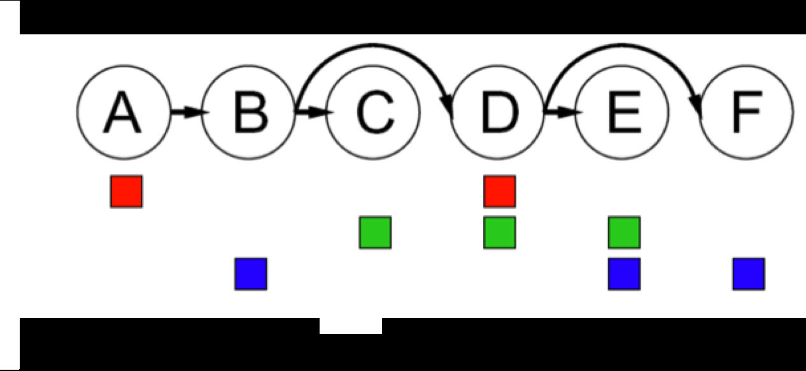
-
Finally, perform a forward assignment. Starting from X1 and going to Xn, assign each Xi a value consistent with that of its parent. Because we’ve enforced arc consistency on all of these arcs, no matter what value we select for any node, we know that its children will each have at least one consistent value. Hence, this iterative assignment guarantees a correct solution, a fact which can be proven inductively without difficulty.
The tree-structured algorithm can be extended to CSPs that are reasonably close to being tree-structured with cutset conditioning. Cutset conditioning involves first finding the smallest subset of variables in a constraint graph such that their removal results in a tree (such a subset is known as a cutset for the graph). For example, in our map coloring example, South Australia (SA) is the smallest possible cutset:
Once the smallest cutset is found, we assign all variables in it and prune the domains of all neighboring nodes. What’s left is a tree-structured CSP, upon which we can solve with the tree-structured CSP algorithm from above! The initial assignment to a cutset of size c may leave the resulting tree-structured CSP(s) with no valid solution after pruning, so we may still need to backtrack up to dc times. Since removal of the cutset leaves us with a tree-structured CSP with (n −c) variables, we know this can be solved (or determined that no solution exists) in O((n −c)d2). Hence, the runtime of cutset conditioning on a general CSP is O(dc(n −c)d2), very good for small c.
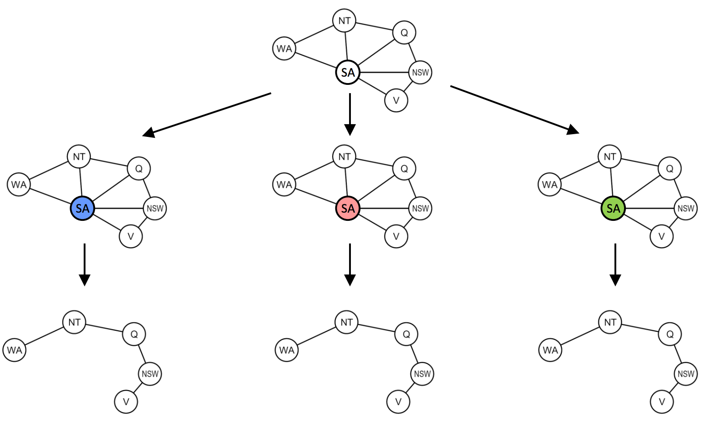
2.5 Local Search
As a final topic of interest, backtracking search is not the only algorithm that exists for solving constraint satisfaction problems. Another widely used algorithm is local search, for which the idea is childishly simple but remarkably useful. Local search works by iterative improvement—start with some random assignment to values, then iteratively select a random conflicted variable and reassign its value to the one that violates the fewest constraints until no more constraint violations exist (a policy known as the min-conflicts heuristic). Under such a policy, constraint satisfaction problems like N-queens become both very time-efficient and space-efficient to solve. For example, in the following example with 4 queens, we arrive at a solution after only 2 iterations:
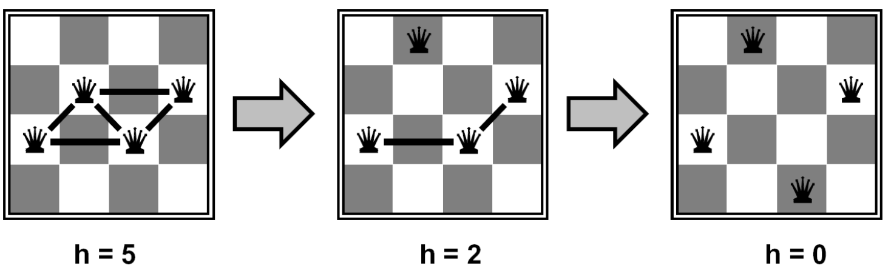
In fact, local search appears to run in almost constant time and have a high probability of success not only for N-queens with arbitrarily large N, but also for any randomly generated CSP! However, despite these advantages, local search is both incomplete and suboptimal and so won’t necessarily converge to an optimal solution. Additionally, there is a critical ratio around which using local search becomes extremely expensive:
The figure above shows the one-dimensional plot of an objective function on the state space. For that function, we wish to find the state that corresponds to the highest objective value. The basic idea of local search algorithms is that from each state, they locally move toward states that have a higher objective value until a maximum (hopefully the global) is reached.
We will be covering three such algorithms: hill-climbing, simulated annealing, and genetic algorithms. All these algorithms are also used in optimization tasks to either maximize or minimize an objective function.
2.5.1 Hill-Climbing Search
The hill-climbing search algorithm (or steepest-ascent) moves from the current state toward a neighboring state that increases the objective value. The algorithm does not maintain a search tree but only the states and the corresponding values of the objective. The “greediness” of hill-climbing makes it vulnerable to
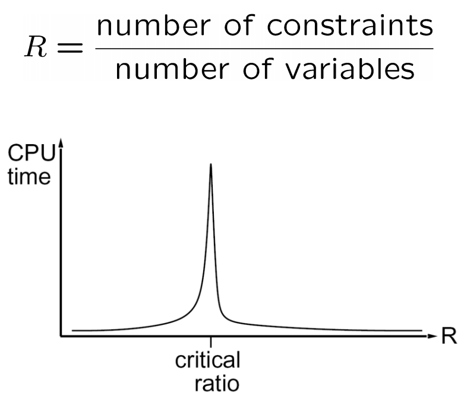

being trapped in local maxima (see figure below), as locally those points appear as global maxima to the algorithm, and plateaux. Plateaux can be categorized into “flat” areas at which no direction leads to improvement (“flat local maxima”) or flat areas from which progress can be slow (“shoulders”). Variants of hill-climbing, like stochastic hill-climbing, which selects an action randomly among the uphill moves, have been proposed. This version of hill-climbing has been shown in practice to converge to higher maxima at the cost of more iterations.
The pseudocode of hill-climbing can be seen above. As the name suggests, the algorithm iteratively moves to a state with a higher objective value until no such progress is possible. Hill-climbing is incomplete. Random-Restart hill-climbing, on the other hand, conducts a number of hill-climbing searches, each time from a randomly chosen initial state, and is trivially complete, as at some point the randomly chosen initial state will coincide with the global maximum.
2.5.2 Simulated Annealing Search
The second local search algorithm we will cover is simulated annealing. Simulated annealing aims to combine random walk (randomly moving to nearby states) and hill-climbing to obtain a complete and efficient search algorithm. In simulated annealing, we allow moves to states that can decrease the objective. More specifically, the algorithm at each state chooses a random move. If the move leads to a higher objective, it is always accepted. If, on the other hand, it leads to smaller objectives, then the move is accepted with some probability. This probability is determined by the temperature parameter, which initially is high (more “bad” moves allowed) and decreases according to some schedule. If the temperature is decreased slowly enough, then the simulated annealing algorithm will reach the global maximum with a probability approaching 1.

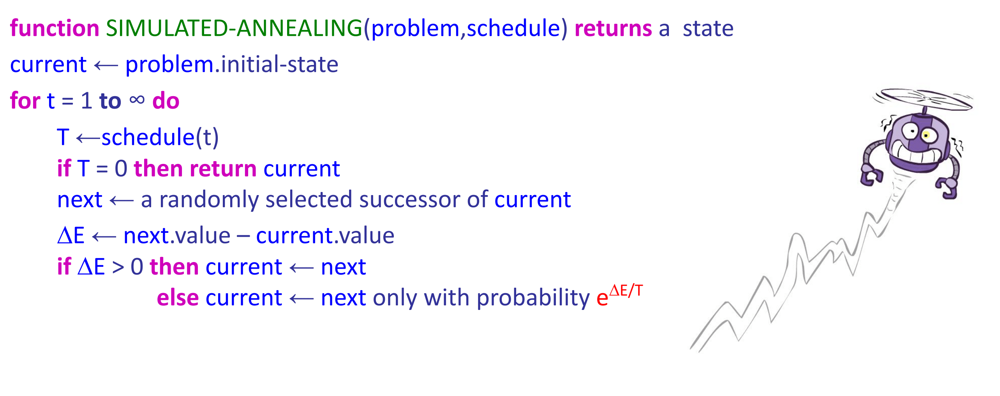
2.5.3 Genetic Algorithms
Finally, we present genetic algorithms, which are a variant of local beam search and are also extensively used in many optimization tasks. Genetic algorithms begin as beam search with k randomly initialized states called the population. States (or individuals) are represented as a string over a finite alphabet. To understand the topic better, let’s revisit the 8-Queens problem presented in class. For the 8-Queens problem, we can represent each of the eight individuals with a number that ranges from 1–8, representing the location of each queen in the column (column (a) in Fig. 4.6). Each individual is evaluated using an evaluation function (fitness function), and they are ranked according to the values of that function. For the 8-Queens problem, this is the number of non-attacking pairs of queens.
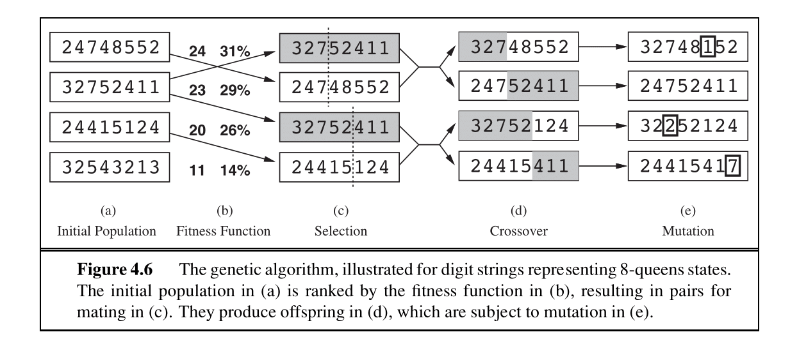
The probability of choosing a state to “reproduce” is proportional to the value of that state. We proceed to select pairs of states to reproduce according to these probabilities (column (c) in Fig. 4.6). Offspring are generated by crossing over the parent strings at the crossover point. That crossover point is chosen randomly for each pair. Finally, each offspring is susceptible to some random mutation with independent probability. The pseudocode of the genetic algorithm can be seen in the following picture.
Genetic algorithms try to move uphill while exploring the state space and exchanging information between threads. Their main advantage is the use of crossovers since this allows for large blocks of letters, that have evolved and lead to high valuations, to be combined with other such blocks and produce a solution with a high total score.

2.6 Summary
It’s important to remember that constraint satisfaction problems in general do not have an efficient algorithm which solves them in polynomial time with respect to the number of variables involved. However, by using various heuristics, we can often find solutions in an acceptable amount of time:
-
Filtering - Filtering handles pruning the domains of unassigned variables ahead of time to prevent unnecessary backtracking. The two important filtering techniques we’ve covered are forward checking and arc consistency.
-
Ordering - Ordering handles selection of which variable or value to assign next to make backtracking as unlikely as possible. For variable selection, we learned about a MRV policy and for value selection we learned about a LCV policy.
-
Structure - If a CSP is tree-structured or close to tree-structured, we can run the tree-structured CSP algorithm on it to derive a solution in linear time. Similarly, if a CSP is close to tree-structured, we can use cutset conditioning to transform the CSP into one or more independent tree-structured CSPs and solve each of these separately.
3. Games
Author: Nikhil Sharma
Edited by: Catherine Chu and Wesley Zheng
Credit: Some sections adapted from the textbook Artificial Intelligence: A Modern Approach.
Last updated: September 2024
3.1 Games
In the first note, we talked about search problems and how to solve them efficiently and optimally — using powerful generalized search algorithms, our agents could determine the best possible plan and then simply execute it to arrive at a goal. Now, let’s shift gears and consider scenarios where our agents have one or more adversaries who attempt to keep them from reaching their goal(s). Our agents can no longer run the search algorithms we’ve already learned to formulate a plan as we typically don’t deterministically know how our adversaries will plan against us and respond to our actions. Instead, we’ll need to run a new class of algorithms that yield solutions to adversarial search problems, more commonly known as games.
There are many different types of games. Games can have actions with either deterministic or stochastic (probabilistic) outcomes, can have any variable number of players, and may or may not be zero-sum. The first class of games we’ll cover are deterministic zero-sum games, where actions are deterministic and our gain is directly equivalent to our opponent’s loss and vice versa. The easiest way to think about such games is as being defined by a single variable value, which one team or agent tries to maximize and the opposing team or agent tries to minimize, effectively putting them in direct competition. In Pacman, this variable is your score, which you try to maximize by eating pellets quickly and efficiently, while ghosts try to minimize it by eating you first. Many common household games also fall under this class of games:
-
Checkers - The first checkers computer player was created in 1950. Since then, checkers has become a solved game, meaning that any position can be evaluated as a win, loss, or draw deterministically for either side given both players act optimally.
-
Chess - In 1997, Deep Blue became the first computer agent to defeat human chess champion Garry Kasparov in a six-game match. Deep Blue was constructed to use extremely sophisticated methods to evaluate over 200 million positions per second. Current programs are even better, though less historic.
-
Go - The search space for Go is much larger than for chess, and most didn’t believe Go computer agents would ever defeat human world champions for several years to come. However, AlphaGo, developed by Google, historically defeated Go champion Lee Sedol 4 games to 1 in March 2016.
All of the world champion agents above use, at least to some degree, the adversarial search techniques that we’re about to cover. As opposed to normal search, which returned a comprehensive plan, adversarial search returns a strategy, or policy, which simply recommends the best possible move given some configuration of our agent(s) and their adversaries. We’ll soon see that such algorithms have the beautiful property of giving rise to behavior through computation — the computation we run is relatively simple in concept and widely generalizable, yet innately generates cooperation between agents on the same team as well as “outthinking” of adversarial agents.
The standard game formulation consists of the following definitions:
-
Initial state, s0
-
Players, Players(s) denote whose turn it is
-
Actions, Actions(s) available actions for the player
-
Transition model Result(s, a)
-
Terminal test, Terminal −test(s)
-
Terminal values, Utility(s, player)
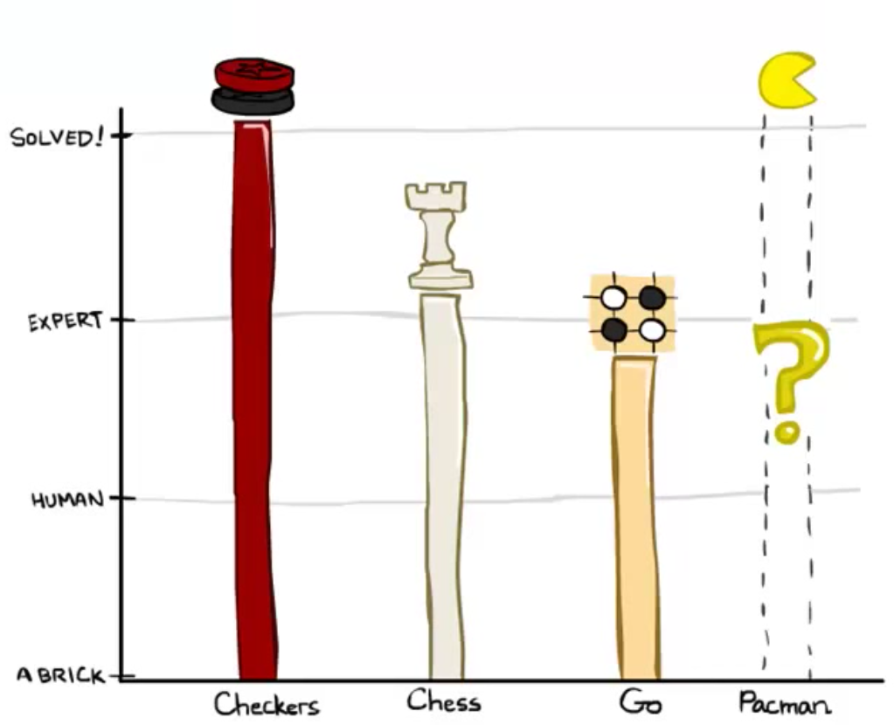
3.2 Minimax
The first zero-sum-game algorithm we will consider is minimax, which runs under the motivating assumption that the opponent we face behaves optimally, and will always perform the move that is worst for us. To introduce this algorithm, we must first formalize the notion of terminal utilities and state value. The value of a state is the optimal score attainable by the agent which controls that state. In order to get a sense of what this means, observe the following trivially simple Pacman game board:
Assume that Pacman starts with 10 points and loses 1 point per move until he eats the pellet, at which point the game arrives at a terminal state and ends. We can start building a game tree for this board as follows, where children of a state are successor states just as in search trees for normal search problems:
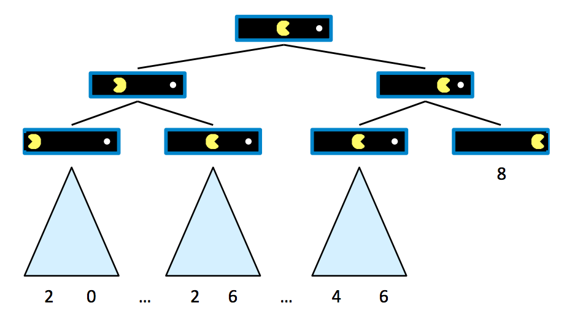
It’s evident from this tree that if Pacman goes straight to the pellet, he ends the game with a score of 8 points, whereas if he backtracks at any point, he ends up with some lower valued score. Now that we’ve generated a game tree with several terminal and intermediary states, we’re ready to formalize the meaning of the value of any of these states.
A state’s value is defined as the best possible outcome (utility) an agent can achieve from that state. We’ll formalize the concept of utility more concretely later, but for now it’s enough to simply think of an agent’s utility as its score or number of points it attains. The value of a terminal state, called a terminal utility, is always some deterministic known value and an inherent game property. In our Pacman example, the value of the rightmost terminal state is simply 8, the score Pacman gets by going straight to the pellet. Also, in this example, the value of a non-terminal state is defined as the maximum of the values of its children. Defining V (s) as the function defining the value of a state s, we can summarize the above discussion:
∀non-terminal states, V (s) = maxs′∈successors(s) V (s′)
∀terminal states, V (s) = known
This sets up a very simple recursive rule, from which it should make sense that the value of the root node’s direct right child will be 8, and the root node’s direct left child will be 6, since these are the maximum possible scores the agent can obtain if it moves right or left, respectively, from the start state. It follows that by running such computation, an agent can determine that it’s optimal to move right, since the right child has a greater value than the left child of the start state.
Let’s now introduce a new game board with an adversarial ghost that wants to keep Pacman from eating the pellet.
The rules of the game dictate that the two agents take turns making moves, leading to a game tree where the two agents switch off on layers of the tree that they “control”. An agent having control over a node simply means that node corresponds to a state where it is that agent’s turn, and so it’s their opportunity to decide upon an action and change the game state accordingly. Here’s the game tree that arises from the new two-agent game board above:
Blue nodes correspond to nodes that Pacman controls and can decide what action to take, while red nodes correspond to ghost-controlled nodes. Note that all children of ghost-controlled nodes are nodes where the ghost has moved either left or right from its state in the parent, and vice versa for Pacman-controlled nodes. For simplicity purposes, let’s truncate this game tree to a depth-2 tree, and assign spoofed values to terminal states as follows:
Naturally, adding ghost-controlled nodes changes the move Pacman believes to be optimal, and the new optimal move is determined with the minimax algorithm. Instead of maximizing the utility over children at every level of the tree, the minimax algorithm only maximizes over the children of nodes controlled by Pacman, while minimizing over the children of nodes controlled by ghosts. Hence, the two ghost nodes above have values of min(−8, −5) = −8 and min(−10, +8) = −10 respectively. Correspondingly, the root node controlled by Pacman has a value of max(−8, −10) = −8. Since Pacman wants to maximize his score, he’ll go left and take the score of −8 rather than trying to go for the pellet and scoring −10. This is a prime example of the rise of behavior through computation - though Pacman wants the score of +8 he can get if he ends up in the rightmost child state, through minimax he “knows” that an optimally-performing ghost will not allow him to have it. In order to act optimally, Pacman is forced to hedge his bets and counterintuitively move away from the pellet to minimize the magnitude of his defeat. We can summarize the way minimax assigns values to states as follows:
∀agent-controlled states, V (s) = maxs′∈successors(s) V (s′)
∀opponent-controlled states, V (s) = mins′∈successors(s) V (s′)
∀terminal states, V (s) = known
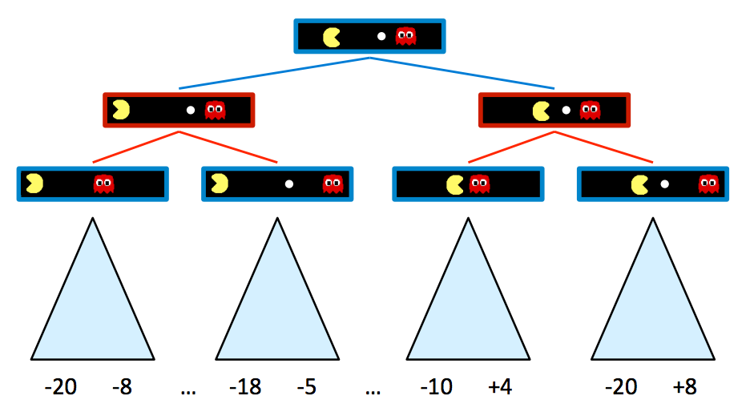
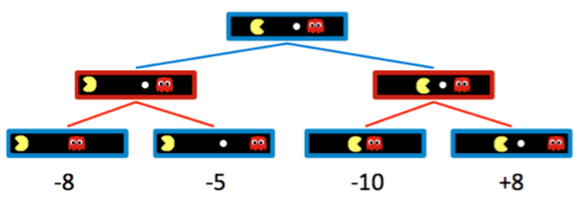
In implementation, minimax behaves similarly to depth-first search, computing values of nodes in the same order as DFS would, starting with the leftmost terminal node and iteratively working its way rightwards. More precisely, it performs a postorder traversal of the game tree. The resulting pseudocode for minimax is both elegant and intuitively simple, and is presented below. Note that minimax will return an action, which corresponds to the root node’s branch to the child it has taken its value from.
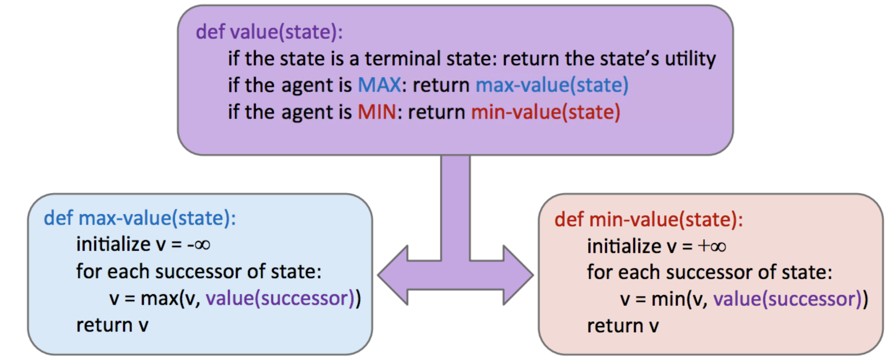
3.2.1 Alpha-Beta Pruning
Minimax seems just about perfect - it’s simple, it’s optimal, and it’s intuitive. Yet, its execution is very similar to depth-first search and its time complexity is identical, a dismal O(bm). Recalling that b is the branching factor and m is the approximate tree depth at which terminal nodes can be found, this yields far too great a runtime for many games. For example, chess has a branching factor b ≈35 and tree depth m ≈100. To help mitigate this issue, minimax has an optimization - alpha-beta pruning.
Conceptually, alpha-beta pruning is this: if you’re trying to determine the value of a node n by looking at its successors, stop looking as soon as you know that n’s value can at best equal the optimal value of n’s parent. Let’s unravel what this tricky statement means with an example. Consider the following game tree, with square nodes corresponding to terminal states, downward-pointing triangles corresponding to minimizing nodes, and upward-pointing triangles corresponding to maximizer nodes:
Let’s walk through how minimax derived this tree - it began by iterating through the nodes with values 3, 12, and 8, and assigning the value min(3, 12, 8) = 3 to the leftmost minimizer. Then, it assigned min(2, 4, 6) = 2 to the middle minimizer, and min(14, 5, 2) = 2 to the rightmost minimizer, before finally assigning max(3, 2, 2) = 3 to the maximizer at the root. However, if we think about this situation, we can come to the realization that as soon as we visit the child of the middle minimizer with value 2, we no longer need to look at the middle minimizer’s other children. Why? Since we’ve seen a child of the middle minimizer with value 2, we know that no matter what values the other children hold, the value of the middle minimizer can be at most 2. Now that this has been established, let’s think one step further still - the maximizer at the root is deciding between the value of 3 of the left minimizer, and the value that’s ≤2, it’s guaranteed to prefer the 3 returned by the left minimizer over the value returned by the middle minimizer, regardless of the values of its remaining children. This is precisely why we can prune the search tree, never looking at the remaining children of the middle minimizer:
Implementing such pruning can reduce our runtime to as good as O(bm/2), effectively doubling our “solvable” depth. In practice, it’s often a lot less, but generally can make it feasible to search down to at least one or two more levels. This is still quite significant, as the player who thinks 3 moves ahead is favored to win over
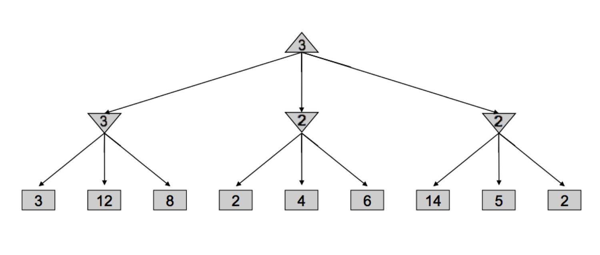
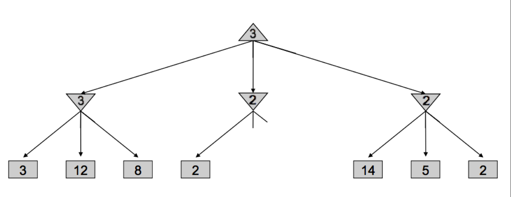
the player who thinks 2 moves ahead. This pruning is exactly what the minimax algorithm with alpha-beta pruning does, and is implemented as follows:
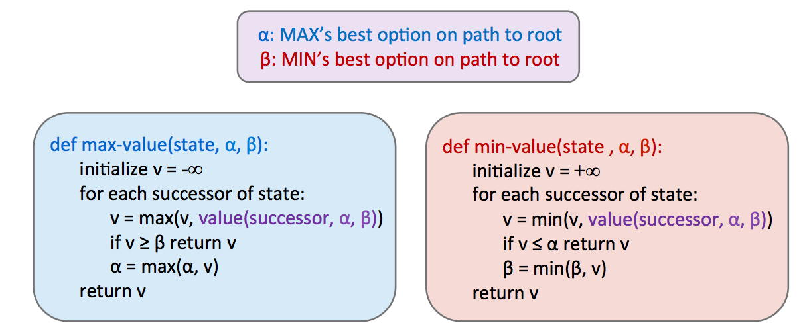
Take some time to compare this with the pseudocode for vanilla minimax, and note that we can now return early without searching through every successor.
3.2.2 Evaluation Functions
Though alpha-beta pruning can help increase the depth for which we can feasibly run minimax, this still usually isn’t even close to good enough to get to the bottom of search trees for a large majority of games. As a result, we turn to evaluation functions, functions that take in a state and output an estimate of the true minimax value of that node. Typically, this is plainly interpreted as “better” states being assigned higher values by a good evaluation function than “worse” states. Evaluation functions are widely employed in depth-limited minimax, where we treat non-terminal nodes located at our maximum solvable depth as terminal nodes, giving them mock terminal utilities as determined by a carefully selected evaluation function. Because evaluation functions can only yield estimates of the values of non-terminal utilities, this removes the guarantee of optimal play when running minimax.
A lot of thought and experimentation is typically put into the selection of an evaluation function when designing an agent that runs minimax, and the better the evaluation function is, the closer the agent will come to behaving optimally. Additionally, going deeper into the tree before using an evaluation function also tends to give us better results - burying their computation deeper in the game tree mitigates the compromising of optimality. These functions serve a very similar purpose in games as heuristics do in standard search problems.
The most common design for an evaluation function is a linear combination of features.
Eval(s) = w1f1(s) + w2f2(s) +... + wnfn(s)
Each (f_i(s)) corresponds to a feature extracted from the input state (s), and each feature is assigned a corresponding weight wi. Features are simply some element of a game state that we can extract and assign a numerical value. For example, in a game of checkers we might construct an evaluation function with 4 features: number of agent pawns, number of agent kings, number of opponent pawns, and number of opponent kings. We’d then select appropriate weights based loosely on their importance. In our checkers example, it makes most sense to select positive weights for our agent’s pawns/kings and negative weights for our opponent’s pawns/kings. Furthermore, we might decide that since kings are more valuable pieces in checkers than pawns, the features corresponding to our agent’s/opponent’s kings deserve weights with greater magnitude than the features concerning pawns. Below is a possible evaluation function that conforms to the features and weights we’ve just brainstormed:
Eval(s) = 2 · agent_kings(s) + agent_pawns(s) −2 · opponent_kings(s) −opponent_pawns(s)
As you can tell, evaluation function design can be quite free-form, and don’t necessarily have to be linear functions either. For example, nonlinear evaluation functions based on neural networks are very common in Reinforcement Learning applications. The most important thing to keep in mind is that the evaluation function yields higher scores for better positions as frequently as possible. This may require a lot of fine-tuning and experimenting on the performance of agents using evaluation functions with a multitude of different features and weights.
3.3 Expectimax
We’ve now seen how minimax works and how running full minimax allows us to respond optimally against an optimal opponent. However, minimax has some natural constraints on the situations to which it can respond. Because minimax believes it is responding to an optimal opponent, it’s often overly pessimistic in situations where optimal responses to an agent’s actions are not guaranteed. Such situations include scenarios with inherent randomness such as card or dice games or unpredictable opponents that move randomly or suboptimally. We’ll talk about scenarios with inherent randomness much more in detail when we discuss Markov decision processes in the second half of the course.
This randomness can be represented through a generalization of minimax known as expectimax. Expectimax introduces chance nodes into the game tree, which instead of considering the worst-case scenario as minimizer nodes do, considers the average case. More specifically, while minimizers simply compute the minimum utility over their children, chance nodes compute the expected utility or expected value. Our rule for determining values of nodes with expectimax is as follows:
∀agent-controlled states, V (s) = maxs′∈successors(s) V (s′)
∀chance states, V (s) = P
s′∈successors(s) p(s′|s)V (s′)
∀terminal states, V (s) = known
In the above formulation, p(s′|s) refers to either the probability that a given nondeterministic action results in moving from state s to s′, or the probability that an opponent chooses an action that results in moving from state s to s′, depending on the specifics of the game and the game tree under consideration. From this definition, we can see that minimax is simply a special case of expectimax. Minimizer nodes are simply chance nodes that assign a probability of 1 to their lowest-value child and probability 0 to all other children. In general, probabilities are selected to properly reflect the game state we’re trying to model, but we’ll cover how this process works in more detail in future notes. For now, it’s fair to assume that these probabilities are simply inherent game properties.
The pseudocode for expectimax is quite similar to minimax, with only a few small tweaks to account for expected utility instead of minimum utility, since we’re replacing minimizing nodes with chance nodes:
Before we continue, let’s quickly step through a simple example. Consider the following expectimax tree, where chance nodes are represented by circular nodes instead of the upward/downward facing triangles for maximizers/minimizers.
Assume for simplicity that all children of each chance node have a probability of occurrence of 1
3. Hence, from our expectimax rule for value determination, we see that from left to right the 3 chance nodes take on values of 1
3 · 3 + 1
3 · 12 + 1
3 · 9 = 8, 1
3 · 2 + 1
3 · 4 + 1
3 · 6 = 4, and 1
3 · 15 + 1
3 · 6 + 1
3 · 0 = 7. The maximizer selects the maximimum of these three values, 8, yielding a filled-out game tree as follows:
As a final note on expectimax, it’s important to realize that, in general, it’s necessary to look at all the children of chance nodes – we can’t prune in the same way that we could for minimax. Unlike when computing minimums or maximums in minimax, a single value can skew the expected value computed by expectimax arbitrarily high or low. However, pruning can be possible when we have known, finite bounds on possible node values.
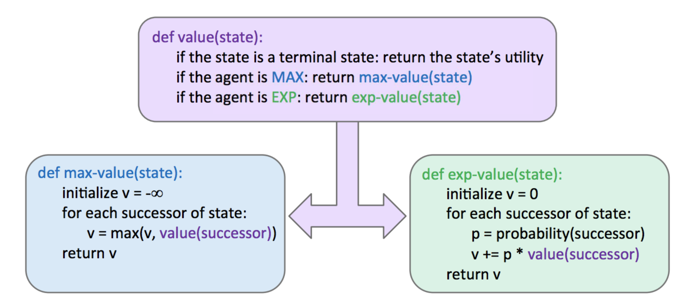
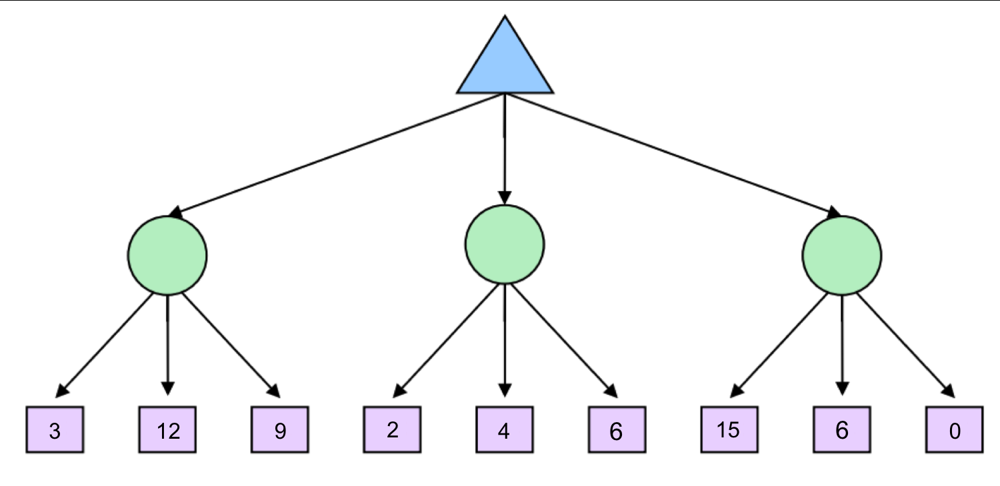
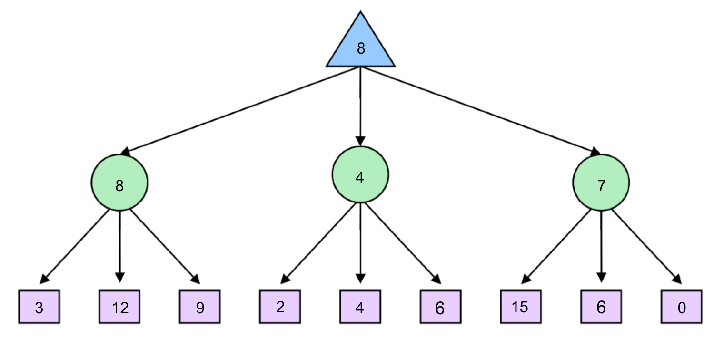
3.3.1 Mixed Layer Types
Though minimax and expectimax call for alternating maximizer/minimizer nodes and maximizer/chance nodes respectively, many games still don’t follow the exact pattern of alternation that these two algorithms mandate. Even in Pacman, after Pacman moves, there are usually multiple ghosts that take turns making moves, not a single ghost. We can account for this by very fluidly adding layers into our game trees as necessary. In the Pacman example for a game with four ghosts, this can be done by having a maximizer layer followed by 4 consecutive ghost/minimizer layers before the second Pacman/maximizer layer. In fact, doing so inherently gives rise to cooperation across all minimizers, as they alternatively take turns further minimizing the utility attainable by the maximizer(s). It’s even possible to combine chance node layers with both minimizers and maximizers. If we have a game of Pacman with two ghosts, where one ghost behaves randomly and the other behaves optimally, we could simulate this with alternating groups of maximizer-chance-minimizer nodes.
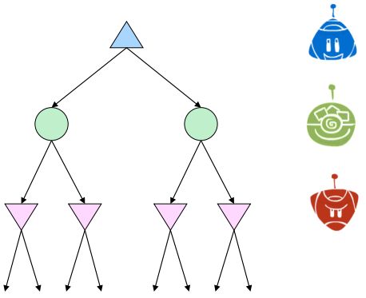
As is evident, there’s quite a bit of room for robust variation in node layering, allowing development of game trees and adversarial search algorithms that are modified expectimax/minimax hybrids for any zero-sum game.
3.4 General Games
Not all games are zero-sum. Indeed, different agents may have have distinct tasks in a game that don’t directly involve strictly competing with one another. Such games can be set up with trees characterized by multi-agent utilities. Such utilities, rather than being a single value that alternating agents try to minimize or maximize, are represented as tuples with different values within the tuple corresponding to unique utilities for different agents. Each agent then attempts to maximize their own utility at each node they control, ignoring the utilities of other agents. Consider the following tree:
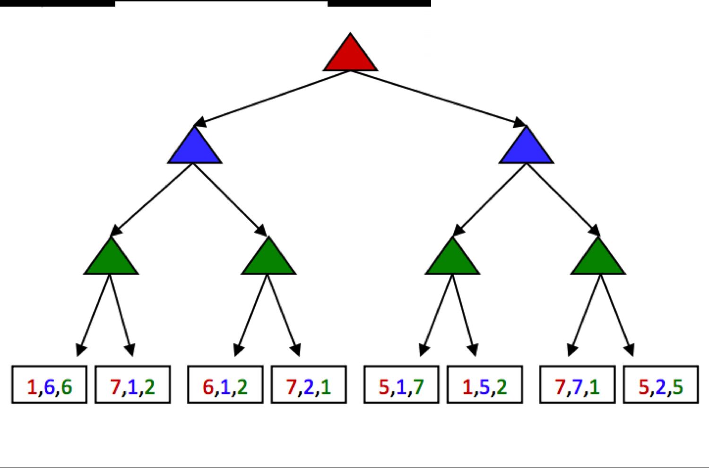
The red, green, and blue nodes correspond to three separate agents, who maximize the red, green, and blue utilities respectively out of the possible options in their respective layers. Working through this example ultimately yields the utility tuple (5, 2, 5) at the top of the tree. General games with multi-agent utilities are a prime example of the rise of behavior through computation, as such setups invoke cooperation since the utility selected at the root of the tree tends to yield a reasonable utility for all participating agents.
3.5 Monte Carlo Tree Search
For applications with a large branching factor, like playing Go, minimax can no longer be used. For such applications, we use the Monte Carlo Tree Search (MCTS) algorithm. MCTS is based on two ideas:
-
Evaluation by rollouts: From state s play many times using a policy (e.g. random) and count wins/losses.
-
Selective search: Explore parts of the tree, without constraints on the horizon, that will improve the decision at the root.
In the Go example, from a given state, we play until termination according to a policy multiple times. We record the fraction of wins, which correlates well with the value of the state.
Consider the following example:
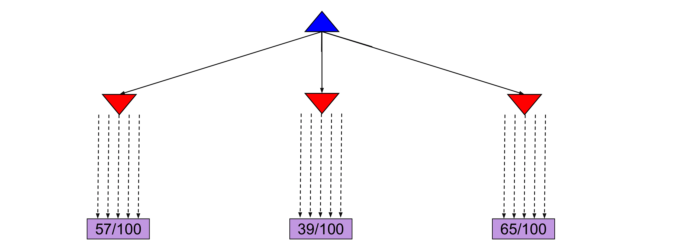
From the current state we have three different available actions (left, middle and right). We take each action 100 times and we record the percentage of wins for each one. After the simulations, we are fairly confident that the right action is the best one. In this scenario, we allocated the same amount of simulations to each alternative action. However, it might become clear after a few simulations that a certain action does not return many wins and thus we might choose to allocate this computational effort in doing more simulations for the other actions. This case can be seen in the following figure, where we decided to allocate the remaining 90 simulations for the middle action to the left and right actions.
An interesting case arises when some actions yield similar percentages of wins, but one of them has used far fewer simulations to estimate that percentage, as shown in the next figure. In this case, the estimate of the action that used fewer simulations will have higher variance, and hence we might want to allocate a few more simulations to that action to be more confident about the true percentage of wins.
The UCB algorithm captures this trade-off between “promising” and “uncertain” actions by using the following criterion at each node n:
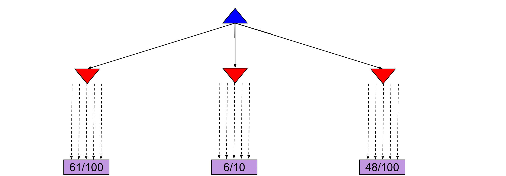
UCB1(n) = U(n) N(n) + C × q log N(P ARENT (n)) N(n)
where N(n) denotes the total number of rollouts from node n and U(n) the total number of wins for Player(Parent(n)). The first term captures how promising the node is, while the second captures how uncertain we are about that node’s utility. The user-specified parameter C balances the weight we put in the two terms (“exploration” and “exploitation”) and depends on the application and perhaps the stage of the task (in later stages when we have accumulated many trials, we would probably explore less and exploit more).
The MCTS UCT algorithm uses the UCB criterion in tree search problems. More specifically, it repeats the following three steps multiple times:
-
The UCB criterion is used to move down the layers of a tree from the root node until an unexpanded leaf node is reached.
-
A new child is added to that leaf, and we run a rollout from that child to determine the number of wins from that node.
-
We update the number of wins from the child back up to the root node.
Once the above three steps are sufficiently repeated, we choose the action that leads to the child with the highest N. Note that because UCT inherently explores more promising children a higher number of times, as N →∞, UCT approaches the behavior of a minimax agent.
3.6 Summary
We shifted gears from considering standard search problems where we simply attempt to find a path from our starting point to some goal, to considering adversarial search problems where we may have opponents that attempt to hinder us from reaching our goal. Two primary algorithms were considered:
-
Minimax - Used when our opponent(s) behaves optimally, and can be optimized using α-β pruning. Minimax provides more conservative actions than expectimax, and so tends to yield favorable results when the opponent is unknown as well.
-
Expectimax - Used when we are facing suboptimal opponent(s), using a probability distribution over the moves we believe they will make to compute the expected value of states.
In most cases, it’s too computationally expensive to run the above algorithms all the way to the level of terminal nodes in the game tree under consideration, and so we introduced the notion of evaluation functions for early termination. For problems with large branching factors, we described the MCTS and UCT algorithms. Such algorithms are easily parallelizable, allowing for a large number of rollouts to take place using modern hardware.
Finally, we considered the problem of general games, where the rules are not necessarily zero-sum.
4. MDPs
Author: Nikhil Sharma
Edited by: Saathvik Selvan and Wesley Zheng
Credit: Some sections adapted from the textbook Artificial Intelligence: A Modern Approach.
Last updated: October 2024
4.1 Markov Decision Processes
A Markov Decision Process is defined by several properties:
-
A set of states S. States in MDPs are represented in the same way as states in traditional search problems.
-
A set of actions A. Actions in MDPs are also represented in the same way as in traditional search problems.
-
A start state.
-
Possibly one or more terminal states.
-
Possibly a discount factor γ. We’ll cover discount factors shortly.
-
A transition function T(s, a, s′). Since we have introduced the possibility of nondeterministic actions, we need a way to delineate the likelihood of the possible outcomes after taking any given action from any given state. The transition function for an MDP does exactly this—it’s a probability function which represents the probability that an agent taking an action a ∈A from a state s ∈S ends up in a state s′ ∈S.
-
A reward function R(s, a, s′). Typically, MDPs are modeled with small “living” rewards at each step to reward an agent’s survival, along with large rewards for arriving at a terminal state. Rewards may be positive or negative depending on whether or not they benefit the agent in question, and the agent’s objective is naturally to acquire the maximum reward possible before arriving at some terminal state.
Constructing an MDP for a situation is quite similar to constructing a state-space graph for a search problem, with a couple additional caveats. Consider the motivating example of a racecar:

There are three possible states, S = {cool, warm, overheated}, and two possible actions A = {slow, fast}. Just like in a state-space graph, each of the three states is represented by a node, with edges representing actions. Overheated is a terminal state, since once a racecar agent arrives at this state, it can no longer perform any actions for further rewards (it’s a sink state in the MDP and has no outgoing edges). Notably, for nondeterministic actions, there are multiple edges representing the same action from the same state with differing successor states. Each edge is annotated not only with the action it represents but also with a transition probability and corresponding reward. These are summarized below:
Transition Function: T(s, a, s′) - T(cool, slow, cool) = 1 - T(warm, slow, cool) = 0.5 - T(warm, slow, warm) = 0.5 - T(cool, fast, cool) = 0.5 - T(cool, fast, warm) = 0.5 - T(warm, fast, overheated) = 1 Reward Function: R(s, a, s′) - R(cool, slow, cool) = 1 - R(warm, slow, cool) = 1 - R(warm, slow, warm) = 1 - R(cool, fast, cool) = 2 - R(cool, fast, warm) = 2 - R(warm, fast, overheated) = −10
We represent the movement of an agent through different MDP states over time with discrete timesteps, defining st ∈S and at ∈A as the state in which an agent exists and the action which an agent takes at timestep t respectively. An agent starts in state s0 at timestep 0 and takes an action at every timestep. The movement of an agent through an MDP can thus be modeled as follows:
s0 a0 −→s1 a1 −→s2 a2 −→s3 a3 −→...
Additionally, knowing that an agent’s goal is to maximize its reward across all timesteps, we can correspondingly express this mathematically as a maximization of the following utility function:
U([s0, a0, s1, a1, s2,...]) = R(s0, a0, s1) + R(s1, a1, s2) + R(s2, a2, s3) +...
Markov decision processes, like state-space graphs, can be unraveled into search trees. Uncertainty is modeled in these search trees with Q-states, also known as action states, essentially identical to expectimax chance nodes. This is a fitting choice, as Q-states use probabilities to model the uncertainty that the environment will land an agent in a given state just as expectimax chance nodes use probabilities to model the uncertainty that adversarial agents will land our agent in a given state through the move these agents select. The Q-state represented by having taken action a from state s is notated as the tuple (s, a).
Observe the unraveled search tree for our racecar, truncated to depth-2:
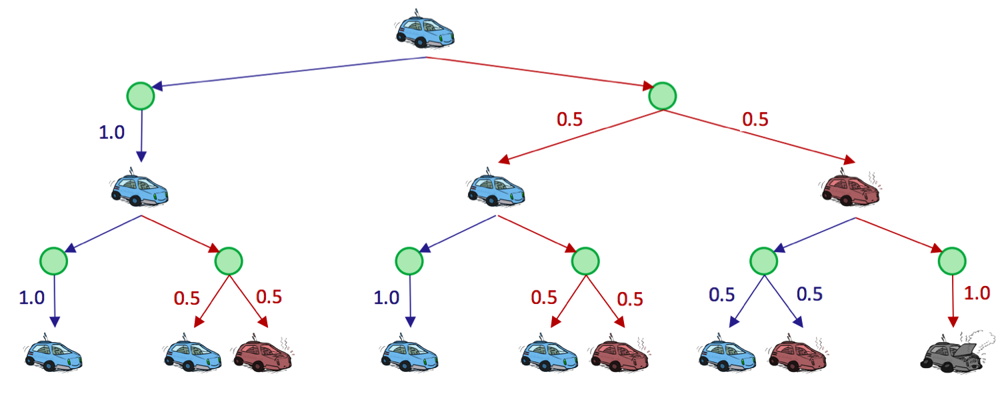
The green nodes represent Q-states, where an action has been taken from a state but has yet to be resolved into a successor state. It’s important to understand that agents spend zero timesteps in Q-states, and that they are simply a construct created for ease of representation and development of MDP algorithms.
4.1.1 Finite Horizons and Discounting
There is an inherent problem with our racecar MDP—we haven’t placed any time constraints on the number of timesteps for which a racecar can take actions and collect rewards. With our current formulation, it could routinely choose a = slow at every timestep forever, safely and effectively obtaining infinite reward without any risk of overheating. This is prevented by the introduction of finite horizons and/or discount factors. An MDP enforcing a finite horizon is simple—it essentially defines a “lifetime” for agents, which gives them some set number of timesteps n to accrue as much reward as they can before being automatically terminated. We’ll return to this concept shortly.
Discount factors are slightly more complicated, and are introduced to model an exponential decay in the value of rewards over time. Concretely, with a discount factor of γ, taking action at from state st at timestep t and ending up in state st+1 results in a reward of γtR(st, at, st+1) instead of just R(st, at, st+1). Now, instead of maximizing the additive utility
U([s0, a0, s1, a1, s2,...]) = R(s0, a0, s1) + R(s1, a1, s2) + R(s2, a2, s3) +...
we attempt to maximize discounted utility
U([s0, a0, s1, a1, s2,...]) = R(s0, a0, s1) + γR(s1, a1, s2) + γ2R(s2, a2, s3) +...
Noting that the above definition of a discounted utility function looks similar to a geometric series with ratio γ, we can prove that it’s guaranteed to be finite-valued as long as the constraint |γ| < 1 (where |n| denotes the absolute value operator) is met through the following logic:
U([s0, s1, s2,...]) = R(s0, a0, s1) + γR(s1, a1, s2) + γ2R(s2, a2, s3) +... = P∞ t=0 γtR(st, at, st+1) ≤P∞ t=0 γtRmax = Rmax 1 −γ
where Rmax is the maximum possible reward attainable at any given timestep in the MDP. Typically, γ is selected strictly from the range 0 < γ < 1 since values in the range −1 < γ ≤0 are simply not meaningful in most real-world situations— a negative value for γ means the reward for a state s would flip-flop between positive and negative values at alternating timesteps.
4.1.2 Markovianess
Markov decision processes are “markovian” in the sense that they satisfy the Markov property, or memoryless property, which states that the future and the past are conditionally independent, given the present. Intuitively, this means that, if we know the present state, knowing the past doesn’t give us any more information about the future. To express this mathematically, consider an agent that has visited states s0, s1,…, st after taking actions a0, a1,…, at−1 in some MDP, and has just taken action at. The probability that this agent then arrives at state st+1 given their history of previous states visited and actions taken can be written as follows: P(St+1 = st+1 | St = st, At = at, St−1 = st−1, At−1 = at−1,…, S0 = s0)
where each St denotes the random variable representing our agent’s state and At denotes the random variable representing the action our agent takes at time t. The Markov property states that the above probability can be simplified as follows: P(St+1 = st+1 | St = st, At = at, St−1 = st−1, At−1 = at−1,…, S0 = s0) = P(St+1 = st+1 | St = st, At = at)
which is “memoryless” in the sense that the probability of arriving in a state s′ at time t + 1 depends only on the state s and action a taken at time t, not on any earlier states or actions. In fact, it is these memoryless probabilities which are encoded by the transition function: T(s, a, s′) = P(s′ | s, a).
4.2 Solving Markov Decision Processes
Recall that in deterministic, non-adversarial search, solving a search problem means finding an optimal plan to arrive at a goal state. Solving a Markov decision process, on the other hand, means finding an optimal policy π∗: S →A, a function mapping each state s ∈S to an action a ∈A. An explicit policy π defines a reflex agent - given a state s, an agent at s implementing π will select a = π(s) as the appropriate action to make without considering future consequences of its actions. An optimal policy is one that if followed by the implementing agent, will yield the maximum expected total reward or utility.
Consider the following MDP with S = {a, b, c, d, e}, A = {East, West, Exit} (with Exit being a valid action only in states a and e and yielding rewards of 10 and 1 respectively), a discount factor γ = 0.1, and deterministic transitions:
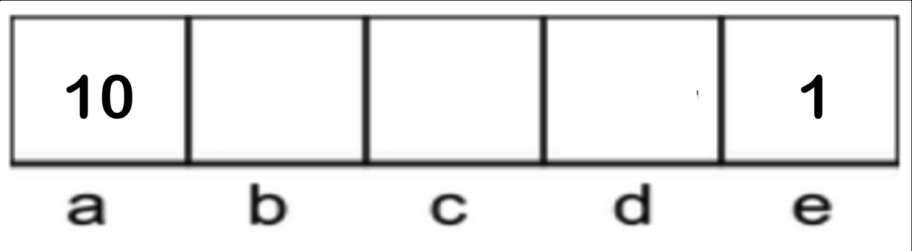
Two potential policies for this MDP are as follows:
Policy 1 Policy 2
With some investigation, it’s not hard to determine that Policy 2 is optimal. Following the policy until making action a = Exit yields the following rewards for each start state:
Start State Reward a 10 b 1
Start State Reward c 0.1 d 0.1 e 1
We’ll now learn how to solve such MDPs (and much more complex ones!) algorithmically using the Bellman equation for Markov decision processes.
4.2.1 The Bellman Equation
In order to talk about the Bellman equation for MDPs, we must first introduce two new mathematical quantities:
-
The optimal value of a state s, V ∗(s) — the optimal value of s is the expected value of the utility an optimally-behaving agent that starts in s will receive, over the rest of the agent’s lifetime. Note that frequently in the literature the same quantity is denoted with V ∗(s).
-
The optimal value of a Q-state (s, a), Q∗(s, a) — the optimal value of (s, a) is the expected value of the utility an agent receives after starting in s, taking a, and acting optimally henceforth.
Using these two new quantities and the other MDP quantities discussed earlier, the Bellman equation is defined as follows:
V ∗(s) = maxa P
s′ T(s, a, s′)[R(s, a, s′) + γV ∗(s′)]
Before we begin interpreting what this means, let’s also define the equation for the optimal value of a Q-state (more commonly known as an optimal Q-value):
Q∗(s, a) = P s′ T(s, a, s′)[R(s, a, s′) + γV ∗(s′)]
Note that this second definition allows us to re-express the Bellman equation as
V ∗(s) = maxa Q∗(s, a)
which is a dramatically simpler quantity. The Bellman equation is an example of a dynamic programming equation, an equation that decomposes a problem into smaller subproblems via an inherent recursive structure. We can see this inherent recursion in the equation for the Q-value of a state, in the term [R(s, a, s′)+γV ∗(s′)]. This term represents the total utility an agent receives by first taking a from s and arriving at s′ and then acting optimally henceforth. The immediate reward from the action a taken, R(s, a, s′), is added to the optimal discounted sum of rewards attainable from s′, V ∗(s′), which is discounted by γ to account for the passage of one timestep in taking action a. Though in most cases there exists a vast number of possible sequences of states and actions from s′ to some terminal state, all this detail is abstracted away and encapsulated in a single recursive value, V ∗(s′).
We can now take another step outwards and consider the full equation for Q-value. Knowing [R(s, a, s′) + γV ∗(s′)] represents the utility attained by acting optimally after arriving in state s′ from Q-state (s, a), it becomes evident that the quantity P
s′ T(s, a, s′)[R(s, a, s′) + γV ∗(s′)]
is simply a weighted sum of utilities, with each utility weighted by its probability of occurrence. This is by definition the expected utility of acting optimally from Q-state (s, a) onwards! This completes our analysis and gives us enough insight to interpret the full Bellman equation — the optimal value of a state, V ∗(s), is simply the maximum expected utility over all possible actions from s. Computing maximum expected utility for a state s is essentially the same as running expectimax — we first compute the expected utility from each Q-state (s, a) (equivalent to computing the value of chance nodes), then compute the maximum over these nodes to compute the maximum expected utility (equivalent to computing the value of a maximizer node).
One final note on the Bellman equation — its usage is as a condition for optimality. In other words, if we can somehow determine a value V (s) for every state s ∈S such that the Bellman equation holds true for each of these states, we can conclude that these values are the optimal values for their respective states. Indeed, satisfying this condition implies ∀s ∈S, V (s) = V ∗(s).
4.3 Value Iteration
Now that we have a framework to test for the optimality of the values of states in an MDP, the natural follow-up question is how to actually compute these optimal values. To answer this, we need time-limited values (the natural result of enforcing finite horizons). The time-limited value for a state s with a time limit of k timesteps is denoted Vk(s), and represents the maximum expected utility attainable from s given that the Markov decision process under consideration terminates in k timesteps. Equivalently, this is what a depth-k expectimax run on the search tree for an MDP returns.
Value iteration is a dynamic programming algorithm that uses an iteratively longer time limit to compute time-limited values until convergence (that is, until the V values are the same for each state as they were in the past iteration: ∀s, Vk+1(s) = Vk(s)). It operates as follows:
-
∀s ∈S, initialize V0(s) = 0. This should be intuitive, since setting a time limit of 0 timesteps means no actions can be taken before termination, and so no rewards can be acquired.
-
Repeat the following update rule until convergence:
∀s ∈S, Vk+1(s) ←maxa P s′ T(s, a, s′)[R(s, a, s′) + γVk(s′)]
At iteration k of value iteration, we use the time-limited values with limit k for each state to generate the time-limited values with limit (k + 1). In essence, we use computed solutions to subproblems (all the Vk(s)) to iteratively build up solutions to larger subproblems (all the Vk+1(s)); this is what makes value iteration a dynamic programming algorithm.
Note that though the Bellman equation looks essentially identical to the update rule above, they are not the same. The Bellman equation gives a condition for optimality, while the update rule gives a method to iteratively update values until convergence. When convergence is reached, the Bellman equation will hold for every state: ∀s ∈S, Vk(s) = Vk+1(s) = V ∗(s).
For conciseness, we frequently denote Uk+1(s) ←maxa P s′ T(s, a, s′)[R(s, a, s′)+γVk(s′)] with the shorthand Vk+1 ←BUk, where B is called the Bellman operator. The Bellman operator is a contraction by γ. To prove this, we will need the following general inequality:
| maxz f(z) −maxz h(z)| ≤maxz |f(z) −h(z)|.
Now consider two value functions evaluated at the same state V (s) and V ′(s). We show that the Bellman update B is a contraction by γ ∈(0, 1) with respect to the max norm as follows:
|BV (s) −BV ′(s)|
\= max a
X s′ T(s, a, s′)[R(s, a, s′) + γV (s′)] ! −
max a
X s′ T(s, a, s′)[R(s, a, s′) + γV ′(s′)] !
≤max a
X s′ T(s, a, s′)[R(s, a, s′) + γV (s′)] − X s′ T(s, a, s′)[R(s, a, s′) + γV ′(s′)]
\= max a
γ X s′ T(s, a, s′)V (s′) −γ X s′ T(s, a, s′)V ′(s′)
\= γ max a
X s′ T(s, a, s′)(V (s′) −V ′(s′))
≤γ max a
X s′ T(s, a, s′) max s′ |V (s′) −V ′(s′)| = γ max s′ |V (s′) −V ′(s′)| = γ||V (s′) −V ′(s′)||∞,
where the first inequality follows from the general inequality introduced above, the second inequality follows from taking the maximum of the differences between V and V ′, and in the second-to-last step, we use the fact that probabilities sum to 1 no matter the choice of a. The last step uses the definition of the max norm for a vector x = (x1,…, xn), which is ||x||∞= max(|x1|,…, |xn|).
Because we just proved that value iteration via Bellman updates is a contraction in γ, we know that value iteration converges, and convergence happens when we have reached a fixed point that satisfies V ∗= BU ∗.
Let’s see a few updates of value iteration in practice by revisiting our racecar MDP from earlier, introducing a discount factor of γ = 0.5:
We begin value iteration by initializing all V0(s) = 0:
cool warm overheated
V0 0 0 0
In our first round of updates, we can compute ∀s ∈S, V1(s) as follows:
V1(cool) = max{1 · [1 + 0.5 · 0], 0.5 · [2 + 0.5 · 0] + 0.5 · [2 + 0.5 · 0]}
\= max{1, 2}
\= 2
V1(warm) = max{0.5 · [1 + 0.5 · 0] + 0.5 · [1 + 0.5 · 0], 1 · [−10 + 0.5 · 0]}
\= max{1, −10}
\= 1
V1(overheated) = max{}
\= 0 cool warm overheated
U0 0 0 0 U1 2 1 0
Similarly, we can repeat the procedure to compute a second round of updates with our newfound values for U1(s) to compute V2(s):
V2(cool) = max{1 · [1 + 0.5 · 2], 0.5 · [2 + 0.5 · 2] + 0.5 · [2 + 0.5 · 1]}
\= max{2, 2.75}
\= 2.75
V2(warm) = max{0.5 · [1 + 0.5 · 2] + 0.5 · [1 + 0.5 · 1], 1 · [−10 + 0.5 · 0]}
\= max{1.75, −10}
\= 1.75
V2(overheated) = max{}
\= 0 cool warm overheated
V0 0 0 0 V1 2 1 0 V2 2.75 1.75 0
It’s worthwhile to observe that V ∗(s) for any terminal state must be 0, since no actions can ever be taken from any terminal state to reap any rewards.
4.3.1 Policy Extraction
Recall that our ultimate goal in solving an MDP is to determine an optimal policy. This can be done once all optimal values for states are determined using a method called policy extraction. The intuition behind policy extraction is very simple: if you’re in a state s, you should take the action a which yields the maximum expected utility. Not surprisingly, a is the action which takes us to the Q-state with maximum Q-value, allowing for a formal definition of the optimal policy:
∀s ∈S, π∗(s) = argmax a Q∗(s, a) = argmax a
P s′ T(s, a, s′)[R(s, a, s′) + γV ∗(s′)]
It’s useful to keep in mind for performance reasons that it’s better for policy extraction to have the optimal Q-values of states, in which case a single argmax operation is all that is required to determine the optimal action from a state. Storing only each V ∗(s) means that we must recompute all necessary Q-values with the Bellman equation before applying argmax, equivalent to performing a depth-1 expectimax.
4.3.2 Q-Value Iteration
In solving for an optimal policy using value iteration, we first find all the optimal values, then extract the policy using policy extraction. However, you might have noticed that we also deal with another type of value that encodes information about the optimal policy: Q-values.
Q-value iteration is a dynamic programming algorithm that computes time-limited Q-values. It is described in the following equation:
Qk+1(s, a) ←P s′ T(s, a, s′)[R(s, a, s′) + γ maxa′ Qk(s′, a′)]
Note that this update is only a slight modification over the update rule for value iteration. Indeed, the only real difference is that the position of the max operator over actions has been changed since we select an action before transitioning when we’re in a state, but we transition before selecting a new action when we’re in a Q-state. Once we have the optimal Q-values for each state and action, we can then find the policy for a state by simply choosing the action which has the highest Q-value.
4.4 Policy Iteration
Value iteration can be quite slow. At each iteration, we must update the values of all |S| states (where |n| refers to the cardinality operator), each of which requires iteration over all |A| actions as we compute the Q-value for each action. The computation of each of these Q-values, in turn, requires iteration over each of the |S| states again, leading to a poor runtime of O(|S|2|A|). Additionally, when all we want to determine is the optimal policy for the MDP, value iteration tends to do a lot of overcomputation since the policy as computed by policy extraction generally converges significantly faster than the values themselves. The fix for these flaws is to use policy iteration as an alternative, an algorithm that maintains the optimality of value iteration while providing significant performance gains. Policy iteration operates as follows:
-
Define an initial policy. This can be arbitrary, but policy iteration will converge faster the closer the initial policy is to the eventual optimal policy.
-
Repeat the following until convergence:
-
Evaluate the current policy with policy evaluation. For a policy π, policy evaluation means computing V π(s) for all states s, where V π(s) is expected utility of starting in state s when following π: V π(s) = P
-
s′ T(s, π(s), s′)[R(s, π(s), s′) + γV π(s′)] Define the policy at iteration i of policy iteration as πi. Since we are fixing a single action for each state, we no longer need the max operator, which effectively leaves us with a system of |S| equations generated by the above rule. Each V πi(s) can then be computed by simply solving this system. Alternatively, we can also compute V πi(s) by using the following update rule until convergence, just like in value iteration: V πi k+1(s) ←P s′ T(s, πi(s), s′)[R(s, πi(s), s′) + γV πi k (s′)] However, this second method is typically slower in practice. • Once we’ve evaluated the current policy, use policy improvement to generate a better policy. Policy improvement uses policy extraction on the values of states generated by policy evaluation to generate this new and improved policy: πi+1(s) = argmax a
P s′ T(s, a, s′)[R(s, a, s′) + γV πi(s′)]
If πi+1 = πi, the algorithm has converged, and we can conclude that πi+1 = πi = π∗.
Let’s run through our racecar example one last time (getting tired of it yet?) to see if we get the same policy using policy iteration as we did with value iteration. Recall that we were using a discount factor of γ = 0.5.
We start with an initial policy of Always go slow:
cool warm overheated
π0 slow slow —
Because terminal states have no outgoing actions, no policy can assign a value to one. Hence, it’s reasonable to disregard the state overheated from consideration as we have done, and simply assign ∀i, V πi(s) = 0 for any terminal state s. The next step is to run a round of policy evaluation on π0:
V π0(cool) = 1 · [1 + 0.5 · V π0(cool)]
V π0(warm) = 0.5 · [1 + 0.5 · V π0(cool)]
+ 0.5 · [1 + 0.5 · V π0(warm)]

Solving this system of equations for V π0(cool) and V π0(warm) yields:
cool warm overheated
V π0 2 2 0
We can now run policy extraction with these values:
π1(cool) = argmax{slow: 1 · [1 + 0.5 · 2], fast: 0.5 · [2 + 0.5 · 2] + 0.5 · [2 + 0.5 · 2]}
\= argmax{slow: 2, fast: 3}
= fast
π1(warm) = argmax{slow: 0.5 · [1 + 0.5 · 2] + 0.5 · [1 + 0.5 · 2], fast: 1 · [−10 + 0.5 · 0]}
\= argmax{slow: 2, fast: −10}
= slow
Running policy iteration for a second round yields π2(cool) = fast and π2(warm) = slow. Since this is the same policy as π1, we can conclude that π1 = π2 = π∗. Verify this for practice!
cool warm
π0 slow slow π1 fast slow π2 fast slow
This example shows the true power of policy iteration: with only two iterations, we’ve already arrived at the optimal policy for our racecar MDP! This is more than we can say for when we ran value iteration on the same MDP, which was still several iterations from convergence after the two updates we performed.
4.5 Summary
The material presented above has much opportunity for confusion. We covered value iteration, policy iteration, policy extraction, and policy evaluation, all of which look similar, using the Bellman equation with subtle variation.
Below is a summary of the purpose of each algorithm:
-
Value iteration: Used for computing the optimal values of states, by iterative updates until convergence.
-
Policy evaluation: Used for computing the values of states under a specific policy.
-
Policy extraction: Used for determining a policy given some state value function. If the state values are optimal, this policy will be optimal. This method is used after running value iteration to compute an optimal policy from the optimal state values, or as a subroutine in policy iteration to compute the best policy for the currently estimated state values.
-
Policy iteration: A technique that encapsulates both policy evaluation and policy extraction and is used for iterative convergence to an optimal policy. It tends to outperform value iteration by virtue of the fact that policies usually converge much faster than the values of states.
5. RL
Author: Nikhil Sharma
Edited by: Wesley Zheng
Credit: Some sections adapted from the textbook Artificial Intelligence: A Modern Approach.
Last updated: September 2024
5.1 Reinforcement Learning
In the previous note, we discussed Markov decision processes, which we solved using techniques such as value iteration and policy iteration to compute the optimal values of states and extract optimal policies. Solving Markov decision processes is an example of offline planning, where agents have full knowledge of both the transition function and the reward function, all the information they need to precompute optimal actions in the world encoded by the MDP without ever actually taking any actions.
In this note, we’ll discuss online planning, during which an agent has no prior knowledge of rewards or transitions in the world (still represented as an MDP). In online planning, an agent must try exploration, during which it performs actions and receives feedback in the form of the successor states it arrives in and the corresponding rewards it reaps. The agent uses this feedback to estimate an optimal policy through a process known as reinforcement learning before using this estimated policy for exploitation or reward maximization.
Let’s start with some basic terminology. At each time step during online planning, an agent starts in a state s, then takes an action a and ends up in a successor state s′, attaining some reward r. Each (s, a, s′, r) tuple is known as a sample. Often, an agent continues to take actions and collect samples in succession until arriving at a terminal state. Such a collection of samples is known as an episode. Agents typically go through many episodes during exploration in order to collect sufficient data needed for learning.
There are two types of reinforcement learning, model-based learning and model-free learning. Modelbased learning attempts to estimate the transition and reward functions with the samples attained during exploration before using these estimates to solve the MDP normally with value or policy iteration. Model-free learning, on the other hand, attempts to estimate the values or Q-values of states directly, without ever using any memory to construct a model of the rewards and transitions in the MDP.
5.2 Model-Based Learning
In model-based learning, an agent generates an approximation of the transition function, ˆT(s, a, s′), by keeping counts of the number of times it arrives in each state s′ after entering each Q-state (s, a). The agent can then generate the approximate transition function ˆT upon request by normalizing the counts it has collected—dividing the count for each observed tuple (s, a, s′) by the sum over the counts for all instances where the agent was in Q-state (s, a). Normalization of counts scales them such that they sum to one, allowing them to be interpreted as probabilities.
Consider the following example MDP with states S = {A, B, C, D, E, x}, with x representing the terminal state, and discount factor γ = 1:
Assume we allow our agent to explore the MDP for four episodes under the policy πexplore delineated above (a directional triangle indicates motion in the direction the triangle points, and a blue square represents taking exit as the action of choice), yielding the following results:
We now have a collective 12 samples, 3 from each episode with counts as follows:
s a s′ count A exit x 1 B east C 2 C east A 1 C east D 3 D exit x 3 E north C 2
Recalling that T(s, a, s′) = P(s′|a, s), we can estimate the transition function with these counts by dividing the counts for each tuple (s, a, s′) by the total number of times we were in Q-state (s, a), and the reward function directly from the rewards we reaped during exploration:
Transition Function: ˆT(s, a, s′)
ˆT(A, exit, x) = #(A,exit,x) #(A,exit) = 1
1 = 1
ˆT(B, east, C) = #(B,east,C) #(B,east) = 2
2 = 1
ˆT(C, east, A) = #(C,east,A) #(C,east) = 1
4 = 0.25
ˆT(C, east, D) = #(C,east,D) #(C,east) = 3
4 = 0.75
ˆT(D, exit, x) = #(D,exit,x) #(D,exit) = 3
3 = 1
ˆT(E, north, C) = #(E,north,C) #(E,north) = 2
2 = 1
Reward Function: ˆR(s, a, s′)
ˆR(A, exit, x) = −10 ˆR(B, east, C) = −1 ˆR(C, east, A) = −1 ˆR(C, east, D) = −1 ˆR(D, exit, x) = +10 ˆR(E, north, C) = −1
By the law of large numbers, as we collect more and more samples by having our agent experience more episodes, our models of ˆT and ˆR will improve, with ˆT converging towards T and ˆR acquiring knowledge of previously undiscovered rewards as we discover new (s, a, s′) tuples. Whenever we see fit, we can end our agent’s training to generate a policy πexploit by running value or policy iteration with our current models for ˆT and ˆR and use πexploit for exploitation, having our agent traverse the MDP, taking actions seeking reward maximization rather than seeking learning.
We’ll soon discuss methods for how to allocate time between exploration and exploitation effectively. Modelbased learning is very simple and intuitive yet remarkably effective, generating ˆT and ˆR with nothing more than counting and normalization. However, it can be expensive to maintain counts for every (s, a, s′) tuple seen, and so in the next section on model-free learning, we’ll develop methods to bypass maintaining counts altogether and avoid the memory overhead required by model-based learning.
5.3 Model-Free Learning
Onward to model-free learning! There are several model-free learning algorithms, and we’ll cover three of them: direct evaluation, temporal difference learning, and Q-learning. Direct evaluation and temporal difference learning fall under a class of algorithms known as passive reinforcement learning. In passive reinforcement learning, an agent is given a policy to follow and learns the value of states under that policy as it experiences episodes, which is exactly what is done by policy evaluation for MDPs when T and R are known. Q-learning falls under a second class of model-free learning algorithms known as active reinforcement learning, during which the learning agent can use the feedback it receives to iteratively update its policy while learning until eventually determining the optimal policy after sufficient exploration.
5.3.1 Direct Evaluation
The first passive reinforcement learning technique we’ll cover is known as direct evaluation, a method that’s as boring and simple as the name makes it sound. All direct evaluation does is fix some policy π and have the agent experience several episodes while following π. As the agent collects samples through these episodes it maintains counts of the total utility obtained from each state and the number of times it visited each state. At any point, we can compute the estimated value of any state s by dividing the total utility obtained from s by the number of times s was visited. Let’s run direct evaluation on our example from earlier, recalling that γ = 1.
Walking through the first episode, we can see that from state D to termination we acquired a total reward of 10, from state C we acquired a total reward of (−1) + 10 = 9, and from state B we acquired a total reward of
(−1) + (−1) + 10 = 8. Completing this process yields the total reward across episodes for each state and the resulting estimated values as follows:
s Total Reward Times Visited Vπ(s)
A −10 1 −10 B 16 2 8 C 16 4 4 D 30 3 10 E −4 2 −2
Though direct evaluation eventually learns state values for each state, it’s often unnecessarily slow to converge because it wastes information about transitions between states.
In our example, we computed V π(E) = −2 and V π(B) = 8, though based on the feedback we received both states only have C as a successor state and incur the same reward of −1 when transitioning to C. According to the Bellman equation, this means that both B and E should have the same value under π. However, of the 4 times our agent was in state C, it transitioned to D and reaped a reward of 10 three times and transitioned to A and reaped a reward of −10 once. It was purely by chance that the single time it received the −10 reward it started in state E rather than B, but this severely skewed the estimated value for E. With enough episodes, the values for B and E will converge to their true values, but cases like this cause the process to take longer than we’d like. This issue can be mitigated by choosing to use our second passive reinforcement learning algorithm, temporal difference learning.
5.3.2 Temporal Difference Learning
Temporal difference learning (TD learning) uses the idea of learning from every experience, rather than simply keeping track of total rewards and number of times states are visited and learning at the end as direct evaluation does. In policy evaluation, we used the system of equations generated by our fixed policy and the Bellman equation to determine the values of states under that policy (or used iterative updates like with value iteration).
V π(s) = P
s′ T(s, π(s), s′)[R(s, π(s), s′) + γV π(s′)]
Each of these equations equates the value of one state to the weighted average over the discounted values of that state’s successors plus the rewards reaped in transitioning to them. TD learning tries to answer the question of how to compute this weighted average without the weights, cleverly doing so with an exponential moving average. We begin by initializing ∀s, V π(s) = 0. At each time step, an agent takes an action π(s) from a state s, transitions to a state s′, and receives a reward R(s, π(s), s′). We can obtain a sample value by summing the received reward with the discounted current value of s′ under π:
sample = R(s, π(s), s′) + γV π(s′)
This sample is a new estimate for V π(s). The next step is to incorporate this sampled estimate into our existing model for V π(s) with the exponential moving average, which adheres to the following update rule:
V π(s) ←(1 −α)V π(s) + α · sample
Above, α is a parameter constrained by 0 ≤α ≤1 known as the learning rate that specifies the weight we want to assign our existing model for V π(s), 1 −α, and the weight we want to assign our new sampled estimate, α. It’s typical to start out with learning rate of α = 1, accordingly assigning V π(s) to whatever the first sample happens to be, and slowly shrinking it towards 0, at which point all subsequent samples will be zeroed out and stop affecting our model of V π(s).
Let’s stop and analyze the update rule for a minute. Annotating the state of our model at different points in time by defining V π k (s) and samplek as the estimated value of state s after the kth update and the kth sample respectively, we can re-express our update rule:
V π k (s) ←(1 −α)V π k−1(s) + α · samplek
This recursive definition for V π k (s) happens to be very interesting to expand:
V π k (s) ←α · [(1 −α)k−1 · sample1 +… + (1 −α) · samplek−1 + samplek]
Because 0 ≤(1 −α) ≤1, as we raise the quantity (1 −α) to increasingly larger powers, it grows closer and closer to 0. By the update rule expansion we derived, this means that older samples are given exponentially less weight, exactly what we want since these older samples are computed using older (and hence worse) versions of our model for V π(s)! This is the beauty of temporal difference learning - with a single straightforward update rule, we are able to:
-
Learn at every time step, hence using information about state transitions as we get them since we’re using iteratively updated versions of V π(s′) in our samples rather than waiting until the end to perform any computation.
-
Give exponentially less weight to older, potentially less accurate samples.
-
Converge to learning true state values much faster with fewer episodes than direct evaluation.
5.3.3 Q-Learning
Both direct evaluation and TD learning will eventually learn the true value of all states under the policy they follow. However, they both have a major inherent issue — we want to find an optimal policy for our agent, which requires knowledge of the Q-values of states. To compute Q-values from the values we have, we require a transition function and reward function as dictated by the Bellman equation.
Q∗(s, a) = P s′ T(s, a, s′)[R(s, a, s′) + γV ∗(s′)]
As a result, TD learning or direct evaluation are typically used in tandem with some model-based learning to acquire estimates of T and R in order to effectively update the policy followed by the learning agent. This became avoidable by a revolutionary new idea known as Q-learning, which proposed learning the Q-values of states directly, bypassing the need to ever know any values, transition functions, or reward functions. As a result, Q-learning is entirely model-free. Q-learning uses the following update rule to perform what’s known as Q-value iteration:
Qk+1(s, a) ←P s′ T(s, a, s′)[R(s, a, s′) + γ maxa′ Qk(s′, a′)]
Note that this update is only a slight modification over the update rule for value iteration. Indeed, the only real difference is that the position of the max operator over actions has been changed since we select an action before transitioning when we’re in a state, but we transition before selecting a new action when we’re in a Q-state.
With this new update rule under our belt, Q-learning is derived essentially the same way as TD learning, by acquiring Q-value samples:
sample = R(s, a, s′) + γ maxa′ Q(s′, a′)
and incorporating them into an exponential moving average.
Q(s, a) ←(1 −α)Q(s, a) + α · sample
As long as we spend enough time in exploration and decrease the learning rate α at an appropriate pace, Q-learning learns the optimal Q-values for every Q-state. This is what makes Q-learning so revolutionary — while TD learning and direct evaluation learn the values of states under a policy by following the policy before determining policy optimality via other techniques, Q-learning can learn the optimal policy directly even by taking suboptimal or random actions. This is called off-policy learning (contrary to direct evaluation and TD learning, which are examples of on-policy learning).
5.3.4 Approximate Q-Learning
Q-learning is an incredible learning technique that continues to sit at the center of developments in the field of reinforcement learning. Yet, it still has some room for improvement. As it stands, Q-learning just stores all Q-values for states in tabular form, which is not particularly efficient given that most applications of reinforcement learning have several thousands or even millions of states. This means we can’t visit all states during training and can’t store all Q-values even if we could for lack of memory.
Above, if Pacman learned that Figure 1 is unfavorable after running vanilla Q-learning, it would still have no idea that Figure 2 or even Figure 3 are unfavorable as well. Approximate Q-learning tries to account for this by learning about a few general situations and extrapolating to many similar situations. The key to generalizing learning experiences is the feature-based representation of states, which represents each state as a vector known as a feature vector. For example, a feature vector for Pacman may encode:
-
the distance to the closest ghost.
-
the distance to the closest food pellet.
-
the number of ghosts.
-
is Pacman trapped? 0 or 1.
With feature vectors, we can treat values of states and Q-states as linear value functions:
V (s) = w1 · f1(s) + w2 · f2(s) +... + wn · fn(s) = ⃗w · ⃗f(s) Q(s, a) = w1 · f1(s, a) + w2 · f2(s, a) +... + wn · fn(s, a) = ⃗w · ⃗f(s, a)
where
⃗f(s) = [f1(s) f2(s)... fn(s)]T
and
⃗f(s, a) = [f1(s, a) f2(s, a)... fn(s, a)]T
represent the feature vectors for state s and Q-state (s, a) respectively and ⃗w = [w1 w2… wn ] represents a weight vector. Defining difference as difference = [R(s, a, s′) + γ maxa′ Q(s′, a′)] −Q(s, a)
approximate Q-learning works almost identically to Q-learning, using the following update rule:
wi ←wi + α · difference · fi(s, a)
Rather than storing Q-values for each and every state, with approximate Q-learning we only need to store a single weight vector and can compute Q-values on-demand as needed. As a result, this gives us not only a more generalized version of Q-learning, but a significantly more memory-efficient one as well.
As a final note on Q-learning, we can re-express the update rule for exact Q-learning using difference as follows:
Q(s, a) ←Q(s, a) + α · difference
This second notation gives us a slightly different but equally valuable interpretation of the update: it’s computing the difference between the sampled estimate and the current model of Q(s, a), and shifting the model in the direction of the estimate with the magnitude of the shift being proportional to the magnitude of the difference.
5.4 Exploration and Exploitation
We’ve now covered several different methods for an agent to learn an optimal policy, and emphasized that “sufficient exploration” is necessary for this, without really elaborating on what “sufficient” means. In the following sections, we’ll discuss two methods for distributing time between exploration and exploitation: ϵ-greedy policies and exploration functions.
5.4.1 ε-Greedy Policies
Agents following an ϵ*-greedy policy* define some probability 0 ≤ϵ ≤1, and act randomly and explore with probability ϵ. Accordingly, they follow their current established policy and exploit with probability (1 −ϵ). This is a very simple policy to implement, yet can still be quite difficult to handle. If a large value for ϵ is selected, then even after learning the optimal policy, the agent will still behave mostly randomly. Similarly, selecting a small value for ϵ means the agent will explore infrequently, leading Q-learning (or any other selected learning algorithm) to learn the optimal policy very slowly. To get around this, ϵ must be manually tuned and lowered over time to see results.
5.4.2 Exploration Functions
The issue of manually tuning ϵ is avoided by exploration functions, which use a modified Q-value iteration update to give some preference to visiting less-visited states. The modified update is as follows:
Q(s, a) ←(1 −α)Q(s, a) + α · [R(s, a, s′) + γ maxa′ f(s′, a′)]
where f denotes an exploration function. There exists some degree of flexibility in designing an exploration function, but a common choice is to use:
f(s, a) = Q(s, a) + k N(s,a)
with k being some predetermined value, and N(s, a) denoting the number of times Q-state (s, a) has been visited. Agents in a state s always select the action that has the highest f(s, a) from each state, and hence never have to make a probabilistic decision between exploration and exploitation. Instead, exploration is automatically encoded by the exploration function, since the term k N(s,a) can give enough of a “bonus” to some infrequently-taken action such that it is selected over actions with higher Q-values. As time goes on and states are visited more frequently, this bonus decreases towards 0 for each state and f(s, a) regresses towards Q(s, a), making exploitation more and more exclusive.
5.5 Summary
It’s very important to remember that reinforcement learning has an underlying MDP, and the goal of reinforcement learning is to solve this MDP by deriving an optimal policy. The difference between using reinforcement learning and using methods like value iteration and policy iteration is the lack of knowledge of the transition function T and the reward function R for the underlying MDP. As a result, agents must learn the optimal policy through online trial-by-error rather than pure offline computation. There are many ways to do this:
-
Model-based learning: Runs computations to estimate the values of the transition function T and the reward function R and uses MDP-solving methods like value or policy iteration with these estimates.
-
Model-free learning: Avoids estimation of T and R, instead using other methods to directly estimate the values or Q-values of states.
– Direct evaluation: Follows a policy π and simply counts total rewards reaped from each state and the total number of times each state is visited. If enough samples are taken, this converges to the true values of states under π, albeit being slow and wasting information about the transitions between states.
– Temporal difference learning: Follows a policy π and uses an exponential moving average with sampled values until convergence to the true values of states under π. TD learning and direct evaluation are examples of on-policy learning, which learn the values for a specific policy before deciding whether that policy is suboptimal and needs to be updated.
– Q-Learning: Learns the optimal policy directly through trial and error with Q-value iteration updates. This is an example of off-policy learning, which learns an optimal policy even when taking suboptimal actions.
– Approximate Q-Learning: Does the same thing as Q-learning but uses a feature-based representation for states to generalize learning.
-
To quantify the performance of different reinforcement learning algorithms, we use the notion of regret. Regret captures the difference between the total reward accumulated if we acted optimally in the environment from the beginning and the total reward we accumulated by running the learning algorithm.
6. Bayes Nets
Author: Josh Hug and Jacky Liang
Edited by: Regina Wang, Pranav Muralikrishnan, and Wesley Zheng
Credit: Some sections adapted from the textbook Artificial Intelligence: A Modern Approach.
Last updated: November 2024
6.1 Probability Rundown
We’re assuming that you’ve learned the foundations of probability in CS70, so these notes will assume a basic understanding of standard concepts in probability like PDFs, conditional probabilities, independence, and conditional independence. Here we provide a brief summary of probability rules we will be using.
A random variable represents an event whose outcome is unknown. A probability distribution is an assignment of weights to outcomes. Probability distributions must satisfy the following conditions:
0 ≤P(ω) ≤1 P
ω P(ω) = 1
For instance, if A is a binary variable (can only take on two values), then P(A = 0) = p and P(A = 1) = 1−p for some p ∈[0, 1].
We will use the convention that capital letters refer to random variables and lowercase letters refer to some specific outcome of that random variable.
We use the notation P(A, B, C) to denote the joint distribution of the variables A, B, C. In joint distributions, ordering does not matter, i.e., P(A, B, C) = P(C, B, A).
We can expand a joint distribution using the chain rule, also sometimes referred to as the product rule.
P(A, B) = P(A|B)P(B) = P(B|A)P(A)
P(A1, A2,..., Ak) = P(A1)P(A2|A1)... P(Ak|A1,..., Ak−1)
The marginal distribution of A, B can be obtained by summing out all possible values that variable C can take as P(A, B) = P c P(A, B, C = c). The marginal distribution of A can also be obtained as P(A) = P b P c P(A, B = b, C = c). We will also sometimes refer to the process of marginalization as “summing out.”
When we do operations on probability distributions, sometimes we get distributions that do not necessarily sum to 1. To fix this, we normalize: take the sum of all entries in the distribution and divide each entry by that sum.
Conditional probabilities assign probabilities to events conditioned on some known facts. For instance, P(A|B = b) gives the probability distribution of A given that we know the value of B equals b. Conditional probabilities are defined as:
P(A|B) = P (A,B) P (B).
Combining the above definition of conditional probability and the chain rule, we get Bayes’ Rule:
P(A|B) = P (B|A)P (A) P (B)
To write that random variables A and B are mutually independent, we write A ⊥⊥B. This is equivalent to B ⊥⊥A.
When A and B are mutually independent, P(A, B) = P(A)P(B). An example you can think of is two independent coin flips. You may be familiar with mutual independence as just “independence” in other courses. We can derive from the above equation and the chain rule that P(A|B) = P(A) and P(B|A) = P(B).
To write that random variables A and B are conditionally independent given another random variable C, we write A ⊥⊥B|C. This is also equivalent to B ⊥⊥A|C.
If A and B are conditionally independent given C, then P(A, B|C) = P(A|C)P(B|C). This means that if we have knowledge about the value of C, then B and A do not affect each other. Equivalent to the above definition of conditional independence are the relations P(A|B, C) = P(A|C) and P(B|A, C) = P(B|C). Notice how these three equations are equivalent to the three equations for mutual independence, just with an added conditional on C!
6.2 Probabilistic Inference
In artificial intelligence, we often want to model the relationships between various nondeterministic events. If the weather predicts a 40% chance of rain, should I carry my umbrella? How many scoops of ice cream should I get if the more scoops I get, the more likely I am to drop it all? If there was an accident 15 minutes ago on the freeway on my route to Oracle Arena to watch the Warriors’ game, should I leave now or in 30 minutes? All of these questions (and many more) can be answered with probabilistic inference.
In previous sections of this class, we modeled the world as existing in a specific state that is always known. For the next several weeks, we will instead use a new model where each possible state for the world has its own probability. For example, we might build a weather model, where the state consists of the season, temperature, and weather. Our model might say that P(winter, 35°, cloudy) = 0.023. This number represents the probability of the specific outcome that it is winter, 35°, and cloudy.
More precisely, our model is a joint distribution, i.e., a table of probabilities that captures the likelihood of each possible outcome, also known as an assignment of variables. As an example, consider the table below:
Season Temperature Weather Probability summer hot sun 0.30 summer hot rain 0.05 summer cold sun 0.10 summer cold rain 0.05 winter hot sun 0.10 winter hot rain 0.05 winter cold sun 0.15 winter cold rain 0.20
This model allows us to answer questions that might be of interest to us, for example:
1.What is the probability that it is sunny? P(W = sun)
2.What is the probability distribution for the weather, given that we know it is winter? P(W|S = winter)
3.What is the probability that it is winter, given that we know it is rainy and cold? P(S = winter|T = cold, W = rain)
4.What is the probability distribution for the weather and season given that we know that it is cold? P(S, W|T = cold)
Inference By Enumeration
Given a joint PDF, we can trivially compute any desired probability distribution P(Q1…Qm|e1…en) using a simple and intuitive procedure known as inference by enumeration, for which we define three types of variables we will be dealing with:
1.Query variables Qi, which are unknown and appear on the left side of the conditional (|) in the desired probability distribution.
2.Evidence variables ei, which are observed variables whose values are known and appear on the right side of the conditional (|) in the desired probability distribution.
3.Hidden variables, which are values present in the overall joint distribution but not in the desired distribution.
In Inference By Enumeration, we follow the following algorithm:
-
Collect all the rows consistent with the observed evidence variables.
-
Sum out (marginalize) all the hidden variables.
-
Normalize the table so that it is a probability distribution (i.e., values sum to 1). For example, if we wanted to compute P(W|S = winter) using the above joint distribution, we’d select the four rows where S is winter, then sum out over T and normalize. This yields the following probability table:
W S Unnormalized Sum Probability sun winter 0.10 + 0.15 = 0.25 0.25/(0.25 + 0.25) = 0.5 rain winter 0.05 + 0.20 = 0.25 0.25/(0.25 + 0.25) = 0.5
Hence P(W = sun|S = winter) = 0.5 and P(W = rain|S = winter) = 0.5, and we learn that in winter there’s a 50% chance of sun and a 50% chance of rain.
As long as we have the joint PDF table, inference by enumeration (IBE) can be used to compute any desired probability distribution, even for multiple query variables Q1…Qm.
6.3 Bayesian Network Representation
While inference by enumeration can compute probabilities for any query we might desire, representing an entire joint distribution in the memory of a computer is impractical for real problems — if each of n variables we wish to represent can take on d possible values (it has a domain of size d), then our joint distribution table will have dn entries, exponential in the number of variables and quite impractical to store!
Bayes nets avoid this issue by taking advantage of the idea of conditional probability. Rather than storing information in a giant table, probabilities are instead distributed across a number of smaller conditional probability tables along with a directed acyclic graph (DAG) which captures the relationships between variables. The local probability tables and the DAG together encode enough information to compute any probability distribution that we could have computed given the entire large joint distribution. We will see how this works in the next section.
We formally define a Bayes Net as consisting of:
1.A directed acyclic graph of nodes, one per variable X.
2.A conditional distribution for each node P(X|A1…An), where Ai is the ith parent of X, stored as a conditional probability table or CPT. Each CPT has n + 2 columns: one for the values of each of the n parent variables A1…An, one for the values of X, and one for the conditional probability of X given its parents.
The structure of the Bayes Net graph encodes conditional independence relations between different nodes. These conditional independences allow us to store multiple small tables instead of one large one.
It is important to remember that the edges between Bayes Net nodes do not mean there is specifically a causal relationship between those nodes, or that the variables are necessarily dependent on one another. It just means that there may be some relationship between the nodes.
As an example of a Bayes Net, consider a model where we have five binary random variables described below:
-
B: Burglary occurs.
-
A: Alarm goes off.
-
E: Earthquake occurs.
-
J: John calls.
-
M: Mary calls.
Assume the alarm can go off if either a burglary or an earthquake occurs, and that Mary and John will call if they hear the alarm. We can represent these dependencies with the graph shown below.
In this Bayes Net, we would store probability tables P(B), P(E), P(A|B, E), P(J|A) and P(M|A).
Given all of the CPTs for a graph, we can calculate the probability of a given assignment using the following rule:
P(X1, X2,..., Xn) = Qn i=1 P(Xi|parents(Xi))
For the alarm model above, we can actually calculate the probability of a joint probability as follows:
P(−b, −e, +a, +j, −m) = P(−b) · P(−e) · P(+a| −b, −e) · P(+j| + a) · P(−m| + a)

We will see how this relation holds in the next section.
As a reality check, it’s important to internalize that Bayes Nets are only a type of model. Models attempt to capture the way the world works, but because they are always a simplification they are always wrong. However, with good modeling choices they can still be good enough approximations that they are useful for solving real problems in the real world.
In general, a good model may not account for every variable or even every interaction between variables. But by making modeling assumptions in the structure of the graph, we can produce incredibly efficient inference techniques that are often more practically useful than simple procedures like inference by enumeration.
6.4 Structure of Bayes Nets
In this class, we will refer to two rules for Bayes Net independences that can be inferred by looking at the graphical structure of the Bayes Net:
-
Each node is conditionally independent of all its ancestor nodes (non-descendants) in the graph, given all of its parents.
-
Each node is conditionally independent of all other variables given its Markov blanket. A variable’s Markov blanket consists of parents, children, and children’s other parents.
Using these tools, we can return to the assertion in the previous section: that we can get the joint distribution of all variables by joining the CPTs of the Bayes Net.
P(X1, X2,..., Xn) = Qn i=1 P(Xi|parents(Xi))
This relation between the joint distribution and the CPTs of the Bayes net works because of the conditional independence relationships given by the graph. We will prove this using an example.
Let’s revisit the previous example. We have the CPTs P(B), P(E), P(A|B, E), P(J|A) and P(M|A), and the following graph:
For this Bayes net, we are trying to prove the following relation:
P(B, E, A, J, M) = P(B)P(E)P(A|B, E)P(J|A)P(M|A)
We can expand the joint distribution another way: using the chain rule. If we expand the joint distribution with topological ordering (parents before children), we get the following equation:
P(B, E, A, J, M) = P(B)P(E|B)P(A|B, E)P(J|B, E, A)P(M|B, E, A, J)
Notice that in the first equation every variable is represented in a CPT P(var|Parents(var)), while in the second equation, every variable is represented in a CPT P(var|Parents(var), Ancestors(var)).
We rely on the first conditional independence relation above, that each node is conditionally independent of all its ancestor nodes in the graph, given all of its parents1.
Therefore, in a Bayes net, P(var|Parents(var), Ancestors(var)) = P(var|Parents(var)), so the two equations are equal. The conditional independences in a Bayes Net allow for multiple smaller conditional probability tables to represent the entire joint probability distribution.
1Elsewhere, the assumption may be defined as “a node is conditionally independent of its non-descendants given its parents.” We always want to make the minimum assumption possible and prove what we need, so we will use the ancestors assumption.
6.5 D-Separation
One useful question to ask about a set of random variables is whether or not one variable is independent from another, or if one random variable is conditionally independent of another given a third random variable. Bayes’ Nets representation of joint probability distributions gives us a way to quickly answer such questions by inspecting the topological structure of the graph.
We already mentioned that a node is conditionally independent of all its ancestor nodes in the graph given all of its parents.
We will present all three canonical cases of connected three-node two-edge Bayes’ Nets, or triples, and the conditional independence relationships they express.
6.5.1 Causal Chains
Figure 1 is a configuration of three nodes known as a causal chain. It expresses the following representation of the joint distribution over X, Y, and Z:
P(x, y, z) = P(z|y)P(y|x)P(x)
It’s important to note that X and Z are not guaranteed to be independent, as shown by the following counterexample:
P(y|x) = ( 1 if x = y 0 else P(z|y) = ( 1 if z = y 0 else
In this case, P(z|x) = 1 if x = z and 0 otherwise, so X and Z are not independent.
However, we can make the statement that X ⊥⊥Z|Y, as in Figure 2. Recall that this conditional independence means:
P(X|Z, Y ) = P(X|Y )
We can prove this statement as follows:
P(X|Z, y) = P (X,Z,y) P (Z,y) = P (Z|y)P (y|X)P (X) P x P (x,y,Z) = P (Z|y)P (y|X)P (X) P (Z|y)P x P (y|x)P (x) = P (y|X)P (X) P x P (y|x)P (x) = P(X|y)
An analogous proof can be used to show the same thing for the case where X has multiple parents. To summarize, in the causal chain configuration, X ⊥⊥Z|Y.
6.5.2 Common Cause
Figure 4: Common Cause with Y observed.
Another possible configuration for a triple is the common cause. It expresses the following representation:
P(x, y, z) = P(x|y)P(z|y)P(y)
Just like with the causal chain, we can show that X is not guaranteed to be independent of Z with the following counterexample distribution:
P(x|y) = ( 1 if x = y 0 else P(z|y) = ( 1 if z = y 0 else
Then P(x|z) = 1 if x = z and 0 otherwise, so X and Z are not independent.
But it is true that X ⊥⊥Z|Y. That is, X and Z are independent if Y is observed as in Figure 4. We can show this as follows:
P(X|Z, y) = P (X,Z,y) P (Z,y) = P (X|y)P (Z|y)P (y) P (Z|y)P (y) = P(X|y)
6.5.3 Common Effect
Figure 6: Common Effect with Y observed.
It expresses the representation:
P(x, y, z) = P(y|x, z)P(x)P(z)
In the configuration shown in Figure 5, X and Z are independent: X ⊥⊥Z. However, they are not necessarily independent when conditioned on Y (Figure 6). As an example, suppose all three are binary variables. X and Z are true and false with equal probability:
P(X = true) = P(X = false) = 0.5
P(Z = true) = P(Z = false) = 0.5 and Y is determined by whether X and Z have the same value:
P(Y |X, Z) = [ | | | ] 1 if X = Z and Y = true 1 if X ̸= Z and Y = false 0 else
Then X and Z are independent if Y is unobserved. But if Y is observed, then knowing X will tell us the value of Z, and vice-versa. So X and Z are not conditionally independent given Y.
Common Effect can be viewed as “opposite” to Causal Chains and Common Cause — X and Z are guaranteed to be independent if Y is not conditioned on. But when conditioned on Y, X and Z may be dependent depending on the specific probability values for P(Y |X, Z).
This same logic applies when conditioning on descendants of Y in the graph. If one of Y ’s descendant nodes is observed, as in Figure 7, X and Z are not guaranteed to be independent.
Figure 7: Common Effect with child observations.
6.5.4 General Case, and D-separation
We can use the previous three cases as building blocks to help us answer conditional independence questions on an arbitrary Bayes’ Net with more than three nodes and two edges. We formulate the problem as follows:
Given a Bayes Net G*, two nodes* X and Y , and a (possibly empty) set of nodes {Z1,… Zk} that represent observed variables, must the following statement be true: X ⊥⊥Y |{Z1,… Zk}?
D-separation (directed separation) is a property of the structure of the Bayes Net graph that implies this conditional independence relationship, and generalizes the cases we’ve seen above. If a set of variables Z1, · · · Zk d-separates X and Y, then X ⊥⊥Y |{Z1, · · · Zk} in all possible distributions that can be encoded by the Bayes net.
We start with an algorithm that is based on a notion of reachability from node X to node Y. (Note: this algorithm is not quite correct! We’ll see how to fix it in a moment.)
-
Shade all observed nodes {Z1,… Zk} in the graph.
-
If there exists an undirected path from X and Y that is not blocked by a shaded node, X and Y are “connected”.
-
If X and Y are connected, they’re not conditionally independent given {Z1,… Zk}. Otherwise, they are.
However, this algorithm only works if the Bayes’ Net has no Common Effect structure within the graph, because if it exists, then two nodes are “reachable” when the Y node in Common Effect is activated (observed). To adjust for this, we arrive at the following d-separation algorithm:
-
Shade all observed nodes {Z1,… Zk} in the graph.
-
Enumerate all undirected paths from X to Y.
-
For each path:
-
Decompose the path into triples (segments of 3 nodes).
-
If all triples are active, this path is active and d-connects X to Y.
-
4. If no path d-connects X and Y, then X ⊥⊥Y |{Z1,... Zk}.
Any path in a graph from X to Y can be decomposed into a set of 3 consecutive nodes and 2 edges - each of which is called a triple. A triple is active or inactive depending on whether or not the middle node is observed. If all triples in a path are active, then the path is active and d-connects X to Y, meaning X is not guaranteed to be conditionally independent of Y given the observed nodes. If all paths from X to Y are inactive, then X and Y are conditionally independent given the observed nodes.
We can enumerate all possibilities of active and inactive triples using the three canonical graphs we presented below in the figures.
Active triples:
Inactive triples:
6.5.5 Examples
Here are some examples of applying the d-separation algorithm:
This graph contains the common effect and causal chain canonical graphs.
R ⊥⊥B – Guaranteed
R ⊥⊥B|T – Not guaranteed
R ⊥⊥B|T ′ – Not guaranteed
R ⊥⊥T ′|T – Guaranteed
This graph contains combinations of all three canonical graphs (can you list them all?).
L ⊥⊥T ′|T – Guaranteed
L ⊥⊥B – Guaranteed
L ⊥⊥B|T – Not guaranteed
L ⊥⊥B|T ′ – Not guaranteed
L ⊥⊥B|T, R – Guaranteed
This graph contains combinations of all three canonical graphs.
T ⊥⊥D – Not guaranteed
T ⊥⊥D|R – Guaranteed
T ⊥⊥D|R, S – Not guaranteed
6.6 Exact Inference in Bayes Nets
Inference is the problem of finding the value of some probability distribution P(Q1… Qk|e1… ek), as detailed in the Probabilistic Inference section at the beginning of the note. Given a Bayes Net, we can solve this problem naively by forming the joint PDF and using Inference by Enumeration. This requires the creation of and iteration over an exponentially large table.
6.6.1 Variable Elimination
An alternate approach is to eliminate hidden variables one by one. To eliminate a variable X, we:
-
Join (multiply together) all factors involving X.
-
Sum out X.
A factor is defined simply as an unnormalized probability. At all points during variable elimination, each factor will be proportional to the probability it corresponds to, but the underlying distribution for each factor won’t necessarily sum to 1 as a probability distribution should. The pseudocode for variable elimination is here:
Let’s make these ideas more concrete with an example. Suppose we have a model as shown below, where T, C, S, and E can take on binary values. Here, T represents the chance that an adventurer takes a treasure, C represents the chance that a cage falls on the adventurer given that they take the treasure, S represents the chance that snakes are released if an adventurer takes the treasure, and E represents the chance that the adventurer escapes given information about the status of the cage and snakes.
In this case, we have the factors P(T), P(C|T), P(S|T), and P(E|C, S). Suppose we want to calculate P(T| + e). The inference by enumeration approach would be to form the 16-row joint PDF P(T, C, S, E),
select only the rows corresponding to +e, then sum out C and S and finally normalize.
The alternate approach is to eliminate C, then S, one variable at a time. We’d proceed as follows:
Join (multiply) all the factors involving C, forming f1(C, +e, T, S) = P(C|T) · P(+e|C, S). Sometimes this is written as P(C, +e|T, S).
Sum out C from this new factor, leaving us with a new factor f2(+e, T, S), sometimes written as P(+e|T, S).
Join all factors involving S, forming F3(+e, S, T) = P(S|T) · f2(+e, T, S), sometimes written as P(+e, S|T).
Sum out S, yielding f4(+e, T), sometimes written as P(+e|T).
Join the remaining factors, which gives f5(+e, T) = f4(+e, T) · P(T).
Once we have f5(+e, T), we can easily compute P(T| + e) by normalizing.
When writing a factor that results from a join, we can either use factor notation like f1(C, +e, T, S), which ignores the conditioning bar and simply provides a list of variables that are included in this factor.
Alternatively, we can write P(C, +e|T, S), even if this is not guaranteed to be a valid probability distribution (e.g. the rows might not sum to 1). To derive this expression mechanically, note that all variables on the left-hand side of the conditioning bars in the original factors (here, C in P(C|T) and E in P(E|C, S)) stay on the left-hand side of the bar. Then, all remaining variables (here, T and S) go on the right-hand side of the bar.
This approach to writing factors is grounded in repeated applications of the chain rule. In the example above, we know that we can’t have a variable on both sides of the conditional bar. Also, we know:
P(T, C, S, +e) = P(T)P(S|T)P(C|T)P(+e|C, S) = P(S, T)P(C|T)P(+e|C, S)
and so:
P(C|T)P(+e|C, S) = P (T,C,S,+e) P (S,T ) = P(C, +e|T, S)
While the variable elimination process is more involved conceptually, the maximum size of any factor generated is only 8 rows instead of 16, as it would be if we formed the entire joint PDF.
An alternate way of looking at the problem is to observe that the calculation of P(T| + e) can either be done through inference by enumeration as follows:
α P s P c P(T)P(s|T)P(c|T)P(+e|c, s)
or by variable elimination as follows:
αP(T) P s P(s|T) P c P(c|T)P(+e|c, s)
We can see that the equations are equivalent, except that in variable elimination we have moved terms that are irrelevant to the summations outside of each summation!
As a final note on variable elimination, it’s important to observe that it only improves on inference by enumeration if we are able to limit the size of the largest factor to a reasonable value.
6.7 Approximate Inference in Bayes Nets: Sampling
An alternate approach for probabilistic reasoning is to implicitly calculate the probabilities for our query by simply counting samples. This will not yield the exact solution, as in IBE or Variable Elimination, but this approximate inference is often good enough, especially when taking into account massive savings in computation.
For example, suppose we wanted to calculate P(+t | +e). If we had a magic machine that could generate samples from our distribution, we could collect all samples for which E = +e, and then compute the fraction of those samples for which T = +t. We’d easily be able to compute any inference we’d want just by looking at the samples. Let’s see some different methods for generating samples.
6.7.1 Prior Sampling
Given a Bayes Net model, we can easily write a simulator. For example, consider the CPTs given below for the simplified model with only two variables T and C.
A simple simulator in Python would be written as follows:
import randomdef get_t():if random.random() < 0.99: return True
return Falsedef get_c(t):if t and random.random() < 0.95: return True
return Falsedef get_sample():
t = get_t()
c = get_c(t)
return [t, c]We call this simple approach prior sampling. The downside of this approach is that it may require the generation of a very large number of samples in order to perform analysis of unlikely scenarios. If we wanted to compute P(C | −t), we’d have to throw away 99% of our samples.
6.7.2 Rejection Sampling
One way to mitigate the previously stated problem is to modify our procedure to early reject any sample inconsistent with our evidence. For example, for the query P(C | −t), we’d avoid generating a value for C unless t is false. This still means we have to throw away most of our samples, but at least the bad samples we generate take less time to create. We call this approach rejection sampling.
These two approaches work for the same reason: any valid sample occurs with the same probability as specified in the joint PDF.
6.7.3 Likelihood Weighting
A more exotic approach is likelihood weighting, which ensures that we never generate a bad sample. In this approach, we manually set all variables equal to the evidence in our query. For example, if we wanted to compute P(C | −t), we’d simply declare that t is false. The problem here is that this may yield samples that are inconsistent with the correct distribution.
If we simply force some variables to be equal to the evidence, then our samples occur with probability only equal to the products of the CPTs of the non-evidence variables. This means the joint PDF has no guarantee of being correct (though it may be for some cases like our two-variable Bayes Net). Instead, if we have sampled variables Z1 through Zp and fixed evidence variables E1 through $E_m $, a sample is given by the probability P(Z1… Zp, E1… Em) = Qp i=1 P(Zi | Parents(Zi)). What is missing is that the probability of a sample does not include all the probabilities of P(Ei | Parents(Ei)), i.e., not every CPT participates.
Likelihood weighting solves this issue by using a weight for each sample, which is the probability of the evidence variables given the sampled variables. That is, instead of counting all samples equally, we can define a weight wj for sample j that reflects how likely the observed values for the evidence variables are, given the sampled values. In this way, we ensure that every CPT participates. To do this, we iterate through each variable in the Bayes net, as we do for normal sampling, sampling a value if the variable is not an evidence variable, or changing the weight for the sample if the variable is evidence.
For example, suppose we want to calculate P(T | +c, +e). For the j th sample, we’d perform the following algorithm:
-
Set wj to 1.0, and c = true and e = true.
-
For T: This is not an evidence variable, so we sample tj from P(T).
-
For C: This is an evidence variable, so we multiply the weight of the sample by P(+c | tj), i.e., wj = wj · P(+c | tj).
-
For S: sample sj from P(S | tj).
-
For E: multiply the weight of the sample by P(+e | +c, sj), i.e., wj = wj · P(+e | +c, sj).
Then when we perform the usual counting process, we weight sample j by wj instead of 1, where 0 ≤wj ≤1. This approach works because in the final calculations for the probabilities, the weights effectively serve to replace the missing CPTs. In effect, we ensure that the weighted probability of each sample is given by P(z1… zp, e1… em) = [Qp i=1 P(zi | Parents(zi))] · [Qm i=1 P(ei | Parents(ei))]. The pseudocode for Likelihood Weighting is provided below.
For all three of our sampling methods (prior sampling, rejection sampling, and likelihood weighting), we can get increasing amounts of accuracy by generating additional samples. However, of the three, likelihood weighting is the most computationally efficient, for reasons beyond the scope of this course.
6.7.4 Gibbs Sampling
Gibbs Sampling is a fourth approach for sampling. In this approach, we first set all variables to some totally random value (not taking into account any CPTs). We then repeatedly pick one variable at a time, clear its value, and resample it given the values currently assigned to all other variables.
For the T, C, S, E example above, we might assign t = true, c = true, s = false, and e = true. We then pick one of our four variables to resample, say S, and clear it. We then pick a new variable from the distribution P(S | +t, +c, +e). This requires us knowing this conditional distribution. It turns out that we can easily compute the distribution of any single variable given all other variables. More specifically, P(S | T, C, E) can be calculated only using the CPTs that connect S with its neighbors. Thus, in a typical Bayes Net, where most variables have only a small number of neighbors, we can precompute the conditional distributions for each variable given all of its neighbors in linear time.
We will not prove this, but if we repeat this process enough times, our later samples will eventually converge to the correct distribution even though we may start from a low-probability assignment of values. If you’re curious, there are some caveats beyond the scope of the course that you can read about under the Failure Modes section of the Wikipedia article for Gibbs Sampling.
The pseudocode for Gibbs Sampling is provided below.
6.8 Summary
To summarize, Bayes’ Nets is a powerful representation of joint probability distributions. Its topological structure encodes independence and conditional independence relationships, and we can use it to model arbitrary distributions to perform inference and sampling.
In this note, we covered two approaches to probabilistic inference: exact inference and probabilistic inference (sampling). In exact inference, we are guaranteed the exact correct probability, but the amount of computation may be prohibitive.
The exact inference algorithms covered were: - Inference By Enumeration - Variable Elimination
We can turn to sampling to approximate solutions while using less compute.
The sampling algorithms covered were: - Prior Sampling - Rejection Sampling - Likelihood Weighting - Gibbs Sampling
1
7. Decision Network and VPIs
Author: Nikhil Sharma
Edited by: Saathvik Selvan and Wesley Zheng
Credit: Some sections adapted from the textbook Artificial Intelligence: A Modern Approach.
Last updated: September 2024
7.1 Utilities
Throughout our discussion of rational agents, the concept of utility came up repeatedly. In games, for example, Utility values are generally hard-wired into the game, and agents use these utility values to select an action. We’ll now discuss what’s necessary in order to generate a viable utility function.
Rational agents must follow the principle of maximum utility — they must always select the action that maximizes their expected utility. However, obeying this principle only benefits agents that have rational preferences. To construct an example of irrational preferences, say there exist 3 objects, A, B, and C, and our agent is currently in possession of A. Say our agent has the following set of irrational preferences:
-
Our agent prefers B to A plus $1
-
Our agent prefers C to B plus $1
-
Our agent prefers A to C plus $1
A malicious agent in possession of B and C can trade our agent B for A plus a dollar, then C for B plus a dollar, then A again for C plus a dollar. Our agent has just lost $3 for nothing! In this way, our agent can be forced to give up all of its money in an endless and nightmarish cycle.
Let’s now properly define the mathematical language of preferences:
-
If an agent prefers receiving a prize A to receiving a prize B, this is written A ≻B
-
If an agent is indifferent between receiving A or B, this is written as A ∼B
-
A lottery is a situation with different prizes resulting with different probabilities. To denote a lottery where A is received with probability p and B is received with probability (1 −p), we write:
L = [p, A; (1 −p), B]
In order for a set of preferences to be rational, they must follow the five Axioms of Rationality:
-
Orderability: (A ≻B) ∨(B ≻A) ∨(A ∼B) A rational agent must either prefer one of A or B, or be indifferent between the two.
-
Transitivity: (A ≻B) ∧(B ≻C) ⇒(A ≻C) If a rational agent prefers A to B and B to C, then it prefers A to C.
-
Continuity: A ≻B ≻C ⇒∃p [p, A; (1 −p), C] ∼B If a rational agent prefers A to B but B to C, then it’s possible to construct a lottery L between A and C such that the agent is indifferent between L and B with appropriate selection of p.
-
Substitutability: A ∼B ⇒[p, A; (1 −p), C] ∼[p, B; (1 −p), C] A rational agent indifferent between two prizes A and B is also indifferent between any two lotteries which only differ in substitutions of A for B or B for A.
-
Monotonicity: A ≻B ⇒(p ≥q) ⇔[p, A; (1 −p), B] ⪰[q, A; (1 −q), B] If a rational agent prefers A over B, then given a choice between lotteries involving only A and B, the agent prefers the lottery assigning the highest probability to A.
If all five axioms are satisfied by an agent, then it’s guaranteed that the agent’s behavior is describable as a maximization of expected utility. More specifically, this implies that there exists a real-valued utility function U that when implemented will assign greater utilities to preferred prizes, and also that the utility of a lottery is the expected value of the utility of the prize resulting from the lottery. These two statements can be summarized in two concise mathematical equivalences:
U(A) ≥U(B) ⇔A ⪰B U([p1, S1;...; pn, Sn]) = P i piU(Si)
If these constraints are met and an appropriate choice of algorithm is made, the agent implementing such a utility function is guaranteed to behave optimally. Let’s discuss utility functions in greater detail with a concrete example. Consider the following lottery:
L = [0.5, $0; 0.5, $1000]
This represents a lottery where you receive $1000 with probability 0.5 and $0 with probability 0.5. Now consider three agents A1, A2, and A3 which have utility functions U1($x) = x, U2($x) = √x, and U3($x) = x2 respectively. If each of the three agents were faced with a choice between participating in the lottery and receiving a flat payment of $500, which would they choose? The respective utilities for each agent of participating in the lottery and accepting the flat payment are listed in the following table:
Agent Lottery Flat Payment
1 500 500 2 15.81 22.36 3 500000 250000
These utility values for the lotteries were calculated as follows, making use of equation (2) above:
U1(L) = U1([0.5, $0; 0.5, $1000]) = 0.5 · U1($1000) + 0.5 · U1($0) = 0.5 · 1000 + 0.5 · 0 = 500
U2(L) = U2([0.5, $0; 0.5, $1000]) = 0.5 · U2($1000) + 0.5 · U2($0) = 0.5 · √
1000 + 0.5 · √
0 = 15.81
U3(L) = U1([0.5, $0; 0.5, $1000]) = 0.5 · U3($1000) + 0.5 · U3($0) = 0.5 · 10002 + 0.5 · 02 = 500000
With these results, we can see that agent A1 is indifferent between participating in the lottery and receiving the flat payment (the utilities for both cases are identical). Such an agent is known as risk-neutral. Similarly, agent A2 prefers the flat payment to the lottery and is known as risk-averse and agent A3 prefers the lottery to the flat payment and is known as risk-seeking.
7.2 Decision Networks
Previously we learned about game trees and algorithms such as minimax and expectimax, which we used to determine optimal actions that maximized our expected utility. Then in the fifth note, we discussed Bayes’ nets and how we can use evidence we know to run probabilistic inference to make predictions. Now we’ll discuss a combination of both Bayes’ nets and expectimax known as a decision network that we can use to model the effect of various actions on utilities based on an overarching graphical probabilistic model. Let’s dive right in with the anatomy of a decision network:
-
Chance nodes - Chance nodes in a decision network behave identically to Bayes’ nets. Each outcome in a chance node has an associated probability, which can be determined by running inference on the underlying Bayes’ net it belongs to. We’ll represent these with ovals.
-
Action nodes - Action nodes are nodes that we have complete control over; they’re nodes representing a choice between any of a number of actions which we have the power to choose from. We’ll represent action nodes with rectangles.
-
Utility nodes - Utility nodes are children of some combination of action and chance nodes. They output a utility based on the values taken on by their parents, and are represented as diamonds in our decision networks.
Consider a situation when you’re deciding whether or not to take an umbrella when you’re leaving for class in the morning, and you know there’s a forecasted 30% chance of rain. Should you take the umbrella? If there was an 80% chance of rain, would your answer change? This situation is ideal for modeling with a decision network, and we do it as follows:
As we’ve done throughout this course with the various modeling techniques and algorithms we’ve discussed, our goal with decision networks is again to select the action which yields the maximum expected utility (MEU). This can be done with a fairly straightforward and intuitive procedure:
-
Start by instantiating all evidence that’s known, and run inference to calculate the posterior probabilities of all chance node parents of the utility node into which the action node feeds.
-
Go through each possible action and compute the expected utility of taking that action given the posterior probabilities computed in the previous step. The expected utility of taking an action a given evidence e and n chance nodes is computed with the following formula:
EU(a | e) = P x1,...,xn P(x1,..., xn | e)U(a, x1,..., xn)
where each xi represents a value that the ith chance node can take on. We simply take a weighted sum over the utilities of each outcome under our given action with weights corresponding to the probabilities of each outcome.
-
Finally, select the action which yielded the highest utility to get the MEU.
Let’s see how this actually looks by calculating the optimal action (should we leave or take our umbrella) for our weather example, using both the conditional probability table for weather given a bad weather forecast (forecast is our evidence variable) and the utility table given our action and the weather:
Note that we have omitted the inference computation for the posterior probabilities P(W | F = bad), but we could compute these using any of the inference algorithms we discussed for Bayes Nets. Instead, here we simply assume the above table of posterior probabilities for P(W | F = bad) as given. Going through both our actions and computing expected utilities yields:
EU(leave | bad) = X w P(w | bad)U(leave, w)
\= 0.34 · 100 + 0.66 · 0 = 34
EU(take | bad) = X w P(w | bad)U(take, w)
\= 0.34 · 20 + 0.66 · 70 = 53
All that’s left to do is take the maximum over these computed utilities to determine the MEU:
MEU(F = bad) = maxa EU(a | bad) = 53
The action that yields the maximum expected utility is take, and so this is the action recommended to us by the decision network. More formally, the action that yields the MEU can be determined by taking the argmax over expected utilities.
7.2.1 Outcome Trees
We mentioned at the start of this note that decision networks involved some expectimax-esque elements, so let’s discuss what exactly that means. We can unravel the selection of an action corresponding to the one that maximizes expected utility in a decision network as an outcome tree. Our weather forecast example from above unravels into the following outcome tree:
The root node at the top is a maximizer node, just like in expectimax, and is controlled by us. We select an action, which takes us to the next level in the tree, controlled by chance nodes. At this level, chance nodes resolve to different utility nodes at the final level with probabilities corresponding to the posterior probabilities derived from probabilistic inference run on the underlying Bayes’ net. What exactly makes this different from vanilla expectimax? The only real difference is that for outcome trees we annotate our nodes with what we know at any given moment (inside the curly braces).
7.3 The Value of Perfect Information
In everything we’ve covered up to this point, we’ve generally always assumed that our agent has all the information it needs for a particular problem and/or has no way to acquire new information. In practice, this is hardly the case, and one of the most important parts of decision making is knowing whether or not it’s worth gathering more evidence to help decide which action to take. Observing new evidence almost always has some cost, whether it be in terms of time, money, or some other medium. In this section, we’ll talk about a very important concept - the value of perfect information (VPI) - which mathematically quantifies the amount an agent’s maximum expected utility is expected to increase if it observes some new evidence. We can compare the VPI of learning some new information with the cost associated with observing that information to make decisions about whether or not it’s worthwhile to observe.
7.3.1 General Formula
Rather than simply presenting the formula for computing the value of perfect information for new evidence, let’s walk through an intuitive derivation. We know from our above definition that the value of perfect information is the amount our maximum expected utility is expected to increase if we decide to observe new evidence. We know our current maximum utility given our current evidence e:
MEU(e) = maxa P
s P(s | e)U(s, a)
Additionally, we know that if we observed some new evidence e′ before acting, the maximum expected utility of our action at that point would become
MEU(e, e′) = maxa P s P(s | e, e′)U(s, a)
However, note that we don’t know what new evidence we’ll get. For example, if we didn’t know the weather forecast beforehand and chose to observe it, the forecast we observe might be either good or bad. Because we don’t know what new evidence e′ we’ll get, we must represent it as a random variable E′. How do we represent the new MEU we’ll get if we choose to observe a new variable if we don’t know what the evidence gained from observation will tell us? The answer is to compute the expected value of the maximum expected utility which, while being a mouthful, is the natural way to go:
MEU(e, E′) = P e′ P(e′ | e)MEU(e, e′)
Observing a new evidence variable yields a different MEU with probabilities corresponding to the probabilities of observing each value for the evidence variable, and so by computing MEU(e, E′) as above, we compute what we expect our new MEU will be if we choose to observe new evidence. We’re just about done now - returning to our definition for VPI, we want to find the amount our MEU is expected to increase if we choose to observe new evidence. We know our current MEU and the expected value of the new MEU if we choose to observe, so the expected MEU increase is simply the difference of these two terms! Indeed,
V PI(E′ | e) = MEU(e, E′) −MEU(e)
where we can read V PI(E′ | e) as “the value of observing new evidence E’ given our current evidence e”. Let’s work our way through an example by revisiting our weather scenario one last time:
If we don’t observe any evidence, then our maximum expected utility can be computed as follows:
MEU(∅) = max a EU(a)
\= max a
X w P(w)U(a, w)
\= max{0.7 · 100 + 0.3 · 0, 0.7 · 20 + 0.3 · 70}
\= max{70, 35}
\= 70
Note that the convention when we have no evidence is to write MEU(∅), denoting that our evidence is the empty set. Now let’s say that we’re deciding whether or not to observe the weather forecast. We’ve already computed that MEU(F = bad) = 53, and let’s assume that running an identical computation for F = good yields MEU(F = good) = 95. We’re now ready to compute MEU(e, E′):
MEU(e, E′) = MEU(F)
\= X
e′ P(e′ | e)MEU(e, e′)
\= X
f P(F = f)MEU(F = f)
\= P(F = good)MEU(F = good) + P(F = bad)MEU(F = bad)
\= 0.59 · 95 + 0.41 · 53
\= 77.78
Hence we conclude V PI(F) = MEU(F) −MEU(∅) = 77.78 −70 = 7.78.
7.3.2 Properties of VPI
The value of perfect information has several very important properties, namely:
-
Nonnegativity. ∀E′, e V PI(E′ | e) ≥0 Observing new information always allows you to make a more informed decision, and so your maximum expected utility can only increase (or stay the same if the information is irrelevant for the decision you must make).
-
Nonadditivity. V PI(Ej, Ek | e) ̸= V PI(Ej | e) + V PI(Ek | e) in general. This is probably the trickiest of the three properties to understand intuitively. It’s true because generally observing some new evidence Ej might change how much we care about Ek; therefore we can’t simply add the VPI of observing Ej to the VPI of observing Ek to get the VPI of observing both of them. Rather, the VPI of observing two new evidence variables is equivalent to observing one, incorporating it into our current evidence, then observing the other. This is encapsulated by the order-independence property of VPI, described more below.
-
Order-independence. V PI(Ej, Ek | e) = V PI(Ej | e) + V PI(Ek | e, Ej) = V PI(Ek | e) + V PI(Ej | e, Ek) Observing multiple new evidences yields the same gain in maximum expected utility regardless of the order of observation. This should be a fairly straightforward assumption - because we don’t actually take any action until after observing any new evidence variables, it doesn’t actually matter whether we observe the new evidence variables together or in some arbitrary sequential order.
8. HMMs
Author: Nikhil Sharma
Edited by: Saathvik Selvan, Pranav Muralikrishnan, and Wesley Zheng
Credit: Some sections adapted from the textbook Artificial Intelligence: A Modern Approach.
Last updated: November 2024
8.1 Markov Models
In previous notes, we talked about Bayes’ nets and how they are a wonderful structure used for compactly representing relationships between random variables. We’ll now cover a very intrinsically related structure called a Markov model, which for the purposes of this course can be thought of as analogous to a chain-like, infinite-length Bayes’ net. The running example we’ll be working with in this section is the day-to-day fluctuations in weather patterns. Our weather model will be time-dependent (as are Markov models in general), meaning we’ll have a separate random variable for the weather on each day. If we define Wi as the random variable representing the weather on day i, the Markov model for our weather example would look like this:
What information should we store about the random variables involved in our Markov model? To track how our quantity under consideration (in this case, the weather) changes over time, we need to know both its initial distribution at time t = 0 and some sort of transition model that characterizes the probability of moving from one state to another between timesteps. The initial distribution of a Markov model is enumerated by the probability table given by P(W0) and the transition model of transitioning from state i to i + 1 is given by P(Wi+1|Wi). Note that this transition model implies that the value of Wi+1 is conditionally dependent only on the value of Wi. In other words, the weather at time t = i + 1 satisfies the Markov property or memoryless property, and is independent of the weather at all other timesteps besides t = i.
Using our Markov model for weather, if we wanted to reconstruct the joint between W0, W1, and W2 using the chain rule, we would want:
P(W0, W1, W2) = P(W0)P(W1|W0)P(W2|W1, W0)
However, with our assumption that the Markov property holds true and W0 ⊥W2|W1, the joint simplifies to:
P(W0, W1, W2) = P(W0)P(W1|W0)P(W2|W1)
And we have everything we need to calculate this from the Markov model. More generally, Markov models make the following independence assumption at each timestep: Wi+1 ⊥{W0,…, Wi−1}|Wi. This allows us to reconstruct the joint distribution for the first n + 1 variables via the chain rule as follows:
P(W0, W1,..., Wn) = P(W0)P(W1|W0)P(W2|W1)... P(Wn|Wn−1) = P(W0) Qn−1 i=0 P(Wi+1|Wi)
A final assumption that’s typically made in Markov models is that the transition model is stationary. In other words, for all values of i (all timesteps), P(Wi+1|Wi) is identical. This allows us to represent a Markov model with only two tables: one for P(W0) and one for P(Wi+1|Wi).
8.1.1 The Mini-Forward Algorithm
We now know how to compute the joint distribution across timesteps of a Markov model. However, this doesn’t explicitly help us answer the question of the distribution of the weather on some given day t. Naturally, we can compute the joint and then marginalize (sum out) over all other variables, but this is typically extremely inefficient since if we have j variables each of which can take on d values, the size of the joint distribution is O(dj). Instead, we’ll present a more efficient technique called the mini-forward algorithm.
Here’s how it works. By properties of marginalization, we know that
P(Wi+1) = P wi P(wi, Wi+1)
By the chain rule, we can re-express this as follows:
P(Wi+1) = X wi P(Wi+1|wi)P(wi)
This equation should make some intuitive sense — to compute the distribution of the weather at timestep i+1, we look at the probability distribution at timestep i given by P(Wi) and “advance” this model a timestep with our transition model P(Wi+1|Wi). With this equation, we can iteratively compute the distribution of the weather at any timestep of our choice by starting with our initial distribution P(W0) and using it to compute P(W1), then in turn using P(W1) to compute P(W2), and so on. Let’s walk through an example, using the following initial distribution and transition model:
$ W_0 $ $ P(W_0) $ sun 0.8 rain 0.2
$ W_{i+1} $ $ W_i $ $ P(W_{i+1} | W_i) $ sun sun 0.6 rain sun 0.4 sun rain 0.1 rain rain 0.9
Using the mini-forward algorithm, we can compute $ P(W_1) $ as follows:
P(W1 = sun) = P w0 P(W1 = sun|w0)P(w0) = P(W1 = sun|W0 = sun)P(W0 = sun) + P(W1 = sun|W0 = rain)P(W0 = rain) = 0.6 · 0.8 + 0.1 · 0.2 = 0.5 P(W1 = rain) = P w0 P(W1 = rain|w0)P(w0) = P(W1 = rain|W0 = sun)P(W0 = sun) + P(W1 = rain|W0 = rain)P(W0 = rain) = 0.4 · 0.8 + 0.9 · 0.2 = 0.5
Hence our distribution for P(W1) is:
$ W_1 ∗∗| ∗∗P(W_1) $ sun 0.5 rain 0.5
Notably, the probability that it will be sunny has decreased from 80% at time t = 0 to only 50% at time t = 1. This is a direct result of our transition model, which favors transitioning to rainy days over sunny days. This gives rise to a natural follow-up question: does the probability of being in a state at a given timestep ever converge? We’ll address the answer to this problem in the following section.
8.1.2 Stationary Distribution
To solve the problem stated above, we must compute the stationary distribution of the weather. As the name suggests, the stationary distribution is one that remains the same after the passage of time, i.e.
P(Wt+1) = P(Wt)
We can compute these converged probabilities of being in a given state by combining the above equivalence with the same equation used by the mini-forward algorithm:
P(Wt+1) = P(Wt) = P
wt P(Wt+1|wt)P(wt)
For our weather example, this gives us the following two equations:
P(Wt = sun) = P(Wt+1 = sun|Wt = sun)P(Wt = sun) + P(Wt+1 = sun|Wt = rain)P(Wt = rain) = 0.6 · P(Wt = sun) + 0.1 · P(Wt = rain) P(Wt = rain) = P(Wt+1 = rain|Wt = sun)P(Wt = sun) + P(Wt+1 = rain|Wt = rain)P(Wt = rain) = 0.4 · P(Wt = sun) + 0.9 · P(Wt = rain)
Now we have two equations in two unknowns. To solve, note that the sum of these probabilities must equal one, i.e.
P(Wt = sun) + P(Wt = rain) = 1
Thus, if we let x = P(Wt = sun) and y = P(Wt = rain), we can write the following system of equations:
-
x + y = 1
-
0.6x + 0.1y = x
-
0.4x + 0.9y = y
Using the first equation, we can substitute y = 1 −x into the other two, which gives us a single equation in one unknown:
0.6x + 0.1(1 −x) = x
Solving this equation yields x = 1/5, and substituting this value into the first equation gives y = 4/5. Thus, our stationary distribution is:
W P(W)
sun 0.2 rain 0.8
From this result, we can conclude that as we proceed through our mini-forward algorithm and let time go to infinity, the probability that it will be rainy converges to 80%. This is another direct result of our transition model, which favors transitioning to rainy days over sunny days.
8.2 Hidden Markov Models
With Markov models, we saw how we could incorporate change over time through a chain of random variables. For example, if we want to know the weather on day 10 with our standard Markov model from above, we can begin with the initial distribution P(W0) and use the mini-forward algorithm with our transition model to compute P(W10). However, between time t = 0 and time t = 10, we may collect new meteorological evidence that might affect our belief of the probability distribution over the weather at any given timestep. In simpler terms, if the weather forecasts an 80% chance of rain on day 10, but there are clear skies on the night of day 9, that 80% probability might drop drastically. This is exactly what the Hidden Markov Model helps us with—it allows us to observe some evidence at each timestep, which can potentially affect the belief distribution at each of the states. The Hidden Markov Model for our weather model can be described using a Bayes’ net structure that looks like the following:
Unlike vanilla Markov models, we now have two different types of nodes. To make this distinction, we’ll call each Wi a state variable and each weather forecast Fi an evidence variable. Since Wi encodes our belief of the probability distribution for the weather on day i, it should be a natural result that the weather forecast for day i is conditionally dependent upon this belief. The model implies similar conditional independence relationships as standard Markov models, with an additional set of relationships for the evidence variables:
F1 ⊥W0 | W1
∀i = 2,..., n;
Wi ⊥{W0,..., Wi−2, F1,..., Fi−1} | Wi−1
∀i = 2,..., n;
Fi ⊥{W0,..., Wi−1, F1,..., Fi−1} | Wi
Just like Markov models, Hidden Markov Models make the assumption that the transition model P(Wi+1 | Wi) is stationary. Hidden Markov Models make the additional simplifying assumption that the sensor model P(Fi | Wi) is stationary as well. Hence any Hidden Markov Model can be represented compactly with just three probability tables: the initial distribution, the transition model, and the sensor model.
As a final point on notation, we’ll define the belief distribution at time i with all evidence F1,…, Fi observed up to date:
B(Wi) = P(Wi | f1,..., fi)
Similarly, we’ll define B′(Wi) as the belief distribution at time i with evidence f1,…, fi−1 observed:
B′(Wi) = P(Wi | f1,..., fi−1)
Defining ei as evidence observed at timestep i, you might sometimes see the aggregated evidence from timesteps 1 ≤i ≤t re-expressed in the following form:
e1:t = e1,..., et
Under this notation, P(Wi | f1,…, fi−1) can be written as P(Wi | f1:(i−1)). This notation will become relevant in the upcoming sections, where we’ll discuss time elapse updates that iteratively incorporate new evidence into our weather model.
8.2.1 The Forward Algorithm
Using the conditional probability assumptions stated above and marginalization properties of conditional probability tables, we can derive a relationship between B(Wi) and B′(Wi+1) that’s of the same form as the update rule for the mini-forward algorithm. We begin by using marginalization:
B′(Wi+1) = P(Wi+1 | f1,..., fi) = P wi P(Wi+1, wi | f1,..., fi)
This can be re-expressed then with the chain rule as follows:
B′(Wi+1) = P(Wi+1 | f1,..., fi) = P wi P(Wi+1 | wi, f1,..., fi)P(wi | f1,..., fi)
Noting that P(wi | f1,…, fi) is simply B(wi) and that Wi+1 ⊥{f1,… fi} | Wi, this simplifies to our final relationship between B(Wi) and B′(Wi+1):
B′(Wi+1) = X wi P(Wi+1 | wi)B(wi)
Now let’s consider how we can derive a relationship between B′(Wi+1) and B(Wi+1). By application of the definition of conditional probability (with extra conditioning), we can see that B(Wi+1) = P(Wi+1|f1,…, fi+1) = P (Wi+1,fi+1|f1,…,fi)
P (fi+1|f1,…,fi) When dealing with conditional probabilities, a commonly used trick is to delay normalization until we require the normalized probabilities, a trick we’ll now employ. More specifically, since the denominator in the above expansion of B(Wi+1) is common to every term in the probability table represented by B(Wi+1), we can omit actually dividing by P(fi+1|f1,…, fi). Instead, we can simply note that B(Wi+1) is proportional to P(Wi+1, fi+1|f1,…, fi): B(Wi+1) ∝P(Wi+1, fi+1|f1,…, fi) with a constant of proportionality equal to P(fi+1|f1,…, fi). Whenever we decide we want to recover the belief distribution B(Wi+1), we can divide each computed value by this constant of proportionality. Now, using the chain rule we can observe the following: B(Wi+1) ∝P(Wi+1, fi+1|f1,…, fi) = P(fi+1|Wi+1, f1,…, fi)P(Wi+1|f1,…, fi) By the conditional independence assumptions associated with Hidden Markov Models stated previously, P(fi+1|Wi+1, f1,…, fi) is equivalent to simply P(fi+1|Wi+1) and by definition P(Wi+1|f1,…, fi) = B′(Wi+1). This allows us to express the relationship between B′(Wi+1) and B(Wi+1) in its final form: B(Wi+1) ∝P(fi+1|Wi+1)B′(Wi+1) Combining the two relationships we’ve just derived yields an iterative algorithm known as the forward algorithm, the Hidden Markov Model analog of the mini-forward algorithm from earlier: B(Wi+1) ∝P(fi+1|Wi+1) X wi P(Wi+1|wi)B(wi) The forward algorithm can be thought of as consisting of two distinctive steps: the time elapse update, which corresponds to determining B′(Wi+1) from B(Wi), and the observation update, which corresponds to determining B(Wi+1) from B′(Wi+1). Hence, in order to advance our belief distribution by one timestep (i.e. compute B(Wi+1) from B(Wi)), we must first advance our model’s state by one timestep with the time elapse update, then incorporate new evidence from that timestep with the observation update. Consider the following initial distribution, transition model, and sensor model:
W0 B(W0)
sun 0.8 rain 0.2
Wi+1 Wi P(Wi+1 | Wi)
sun sun 0.6 rain sun 0.4 sun rain 0.1 rain rain 0.9
Fi Wi P(Fi | Wi)
good sun 0.8 bad sun 0.2 good rain 0.3 bad rain 0.7
To compute B(W1), we begin by performing a time update to get B′(W1):
B′(W1 = sun) = P w0 P(W1 = sun|w0)B(w0) = P(W1 = sun|W0 = sun)B(W0 = sun) + P(W1 = sun|W0 = rain)B(W0 = rain)
B′(W1 = sun) = 0.6 · 0.8 + 0.1 · 0.2 = 0.5
B′(W1 = rain) = P w0 P(W1 = rain|w0)B(w0) = P(W1 = rain|W0 = sun)B(W0 = sun) + P(W1 = rain|W0 = rain)B(W0 = rain)
B′(W1 = rain) = 0.4 · 0.8 + 0.9 · 0.2 = 0.5
Hence:
W1 B′(W1)
sun 0.5 rain 0.5
Next, we’ll assume that the weather forecast for day 1 was good (i.e. F1 = good), and perform an observation update to get B(W1):
B(W1 = sun) ∝P(F1 = good|W1 = sun)B′(W1 = sun) = 0.8 · 0.5 = 0.4 B(W1 = rain) ∝P(F1 = good|W1 = rain)B′(W1 = rain) = 0.3 · 0.5 = 0.15
The last step is to normalize B(W1), noting that the entries in the table for B(W1) sum to 0.4 + 0.15 = 0.55:
B(W1 = sun) = 0.4/0.55 = 8 11 B(W1 = rain) = 0.15/0.55 = 3 11 Our final table for B(W1) is thus the following:
W1 B(W1)
sun 8 11
W1 B(W1)
rain 3 11
Note the result of observing the weather forecast. Because the weatherman predicted good weather, our belief that it would be sunny increased from 1
2 after the time update to 8 11 after the observation update.
As a parting note, the normalization trick discussed above can actually simplify computation significantly when working with Hidden Markov Models. If we began with some initial distribution and were interested in computing the belief distribution at time t, we could use the forward algorithm to iteratively compute B(W1),…, B(Wt) and normalize only once at the end by dividing each entry in the table for B(Wt) by the sum of its entries.
8.3 Viterbi Algorithm
In the Forward Algorithm, we used recursion to solve for P(XN|e1:N), the probability distribution over states the system could inhabit given the evidence variables observed so far. Another important question related to Hidden Markov Models is: What is the most likely sequence of hidden states the system followed given the observed evidence variables so far? In other words, we would like to solve for arg maxx1:N P(x1:N|e1:N) = arg maxx1:N P(x1:N, e1:N). This trajectory can also be solved for using dynamic programming with the Viterbi algorithm
The algorithm consists of two passes: the first runs forward in time and computes the probability of the best path to each (state, time) tuple given the evidence observed so far. The second pass runs backwards in time: first it finds the terminal state that lies on the path with the highest probability, and then traverses backward through time along the path that leads into this state (which must be the best path).
To visualize the algorithm, consider the following state trellis, a graph of states and transitions over time:
In this HMM with two possible hidden states, sun or rain, we would like to compute the highest probability path (assignment of a state for every timestep) from X1 to XN. The weights on an edge from Xt−1 to Xt is equal to P(Xt|Xt−1)P(Et|Xt), and the probability of a path is computed by taking the product of its edge weights. The first term in the weight formula represents how likely a particular transition is and the second term represents how well the observed evidence fits the resulting state.
Recall that: P(X1:N, e1:N) = P(X1)P(e1|X1) QN t=2 P(Xt|Xt−1)P(et|Xt) The Forward Algorithm computes (up to normalization) P(XN, e1:N) = P x1,..,xN−1 P(XN, x1:N−1, e1:N) In the Viterbi Algorithm, we want to compute arg maxx1,..,xN P(x1:N, e1:N)
to find the maximum likelihood estimate of the sequence of hidden states. Notice that each term in the product is exactly the expression for the edge weight between layer t −1 to layer t. So, the product of weights along the path on the trellis gives us the probability of the path given the evidence.
We could solve for a joint probability table over all of the possible hidden states, but this results in an exponential space cost. Given such a table, we could use dynamic programming to compute the best path in polynomial time. However, because we can use dynamic programming to compute the best path, we don’t necessarily need the whole table at any given time.
Define mt[xt] = maxx1:t−1 P(x1:t, e1:t), or the maximum probability of a path starting at any x0 and the evidence seen so far to a given xt at time t. This is the same as the highest weight path through the trellis from step 1 to t. Also note that
mt[xt] = max x1:t−1 P(et|xt)P(xt|xt−1)P(x1:t−1, e1:t−1) (1) = P(et|xt) max xt−1 P(xt|xt−1) max x1:t−2 P(x1:t−1, e1:t−1) (2) = P(et|xt) max xt−1 P(xt|xt−1)mt−1[xt−1]. (3)
This suggests that we can compute mt for all t recursively via dynamic programming. This makes it possible to determine the last state xN for the most likely path, but we still need a way to backtrack to reconstruct the entire path. Let’s define at[xt] = P(et|xt) arg maxxt−1 P(xt|xt−1)mt−1[xt−1] = arg maxxt−1 P(xt|xt−1)mt−1[xt−1] to keep track of the last transition along the best path to xt. We can now outline the algorithm.
Notice that our a arrays define a set of N sequences, each of which is the most likely sequence to a particular end state xN. Once we finish the forward pass, we look at the likelihood of the N sequences, pick the best one, and reconstruct it in the backwards pass. We have thus computed the most likely explanation for our evidence in polynomial space and time.
8.4 Particle Filtering
Recall that with Bayes’ nets, when running exact inference was too computationally expensive, using one of the sampling techniques we discussed was a viable alternative to efficiently approximate the desired probability distribution(s) we wanted. Hidden Markov Models have the same drawback — the time it takes to run exact inference with the forward algorithm scales with the number of values in the domains of the random variables. This was acceptable in our current weather problem formulation where the weather can only take on 2 values, Wi ∈{sun, rain}, but say instead we wanted to run inference to compute the distribution of the actual temperature on a given day to the nearest tenth of a degree.
The Hidden Markov Model analog to Bayes’ net sampling is called particle filtering, and involves simulating the motion of a set of particles through a state graph to approximate the probability (belief) distribution of the random variable in question. This solves the same question as the Forward Algorithm: it gives us an approximation of P(XN | e1:N).
Instead of storing a full probability table mapping each state to its belief probability, we’ll instead store a list of n particles, where each particle is in one of the d possible states in the domain of our time-dependent random variable. Typically, n is significantly smaller than d (denoted symbolically as n << d) but still large enough to yield meaningful approximations; otherwise, the performance advantage of particle filtering becomes negligible. Particles are just the name for samples in this algorithm.
Our belief that a particle is in any given state at any given timestep is dependent entirely on the number of particles in that state at that timestep in our simulation. For example, say we indeed wanted to simulate the belief distribution of the temperature T on some day i and assume for simplicity that this temperature can only take on integer values in the range [10, 20] (d = 11 possible states). Assume further that we have n = 10 particles, which take on the following values at timestep i of our simulation:
By taking counts of each temperature that appears in our particle list and dividing by the total number of particles, we can generate our desired empirical distribution for the temperature at time i:
$T_i $ | 10 | 11 | 12 | 13 | 14 | 15 | 16 | 17 | 18 | 19 | 20 |
|——————|—–|—–|—–|—–|—–|—–|—–|—–|—–|—–|—–| | $B(T_i) $ | 0.2 | 0.2 | 0.3 | 0 | 0.1 | 0.1 | 0 | 0 | 0.1 | 0 | 0 |
Now that we’ve seen how to recover a belief distribution from a particle list, all that remains to be discussed is how to generate such a list for a timestep of our choosing.
8.4.1 Particle Filtering Simulation
Particle filtering simulation begins with particle initialization, which can be done quite flexibly — we can sample particles randomly, uniformly, or from some initial distribution. Once we’ve sampled an initial list of particles, the simulation takes on a similar form to the forward algorithm, with a time elapse update followed by an observation update at each timestep:
-
Time Elapse Update — Update the value of each particle according to the transition model. For a particle in state ti, sample the updated value from the probability distribution given by P(Ti+1 | ti). Note the similarity of the time elapse update to prior sampling with Bayes’ nets, since the frequency of particles in any given state reflects the transition probabilities.
-
Observation Update — During the observation update for particle filtering, we use the sensor model P(Fi | Ti) to weight each particle according to the probability dictated by the observed evidence and the particle’s state. Specifically, for a particle in state ti with sensor reading fi, assign a weight of P(fi | ti). The algorithm for the observation update is as follows:
-
Calculate the weights of all particles as described above.
-
Calculate the total weight for each state.
-
If the sum of all weights across all states is 0, reinitialize all particles.
-
Else, normalize the distribution of total weights over states and resample your list of particles from this distribution.
-
Note the similarity of the observation update to likelihood weighting, where we again downweight samples based on our evidence.
Let’s see if we can understand this process slightly better by example. Define a transition model for our weather scenario using temperature as the time-dependent random variable as follows: for a particular temperature state, you can either stay in the same state or transition to a state one degree away, within the range [10, 20]. Out of the possible resultant states, the probability of transitioning to the one closest to 15 is 80% and the remaining resultant states uniformly split the remaining 20% probability amongst themselves.
Our temperature particle list was as follows:
To perform a time elapse update for the first particle in this particle list, which is in state Ti = 15, we need the corresponding transition model:
Ti+1 14 15 16
P(Ti+1 | Ti = 15) 0.1 0.8 0.1
In practice, we allocate a different range of values for each value in the domain of Ti+1 such that together the ranges entirely span the interval [0, 1) without overlap. For the above transition model, the ranges are as follows: 1. The range for Ti+1 = 14 is 0 ≤r < 0.1. 2. The range for Ti+1 = 15 is 0.1 ≤r < 0.9. 3. The range for Ti+1 = 16 is 0.9 ≤r < 1.
In order to resample our particle in state Ti = 15, we simply generate a random number in the range [0, 1) and see which range it falls in. Hence if our random number is r = 0.467, then the particle at Ti = 15 remains in Ti+1 = 15 since 0.1 ≤r < 0.9. Now consider the following list of 10 random numbers in the interval [0, 1):
If we use these 10 values as the random value for resampling our 10 particles, our new particle list after the full time elapse update should look like this:
Verify this for yourself! The updated particle list gives rise to the corresponding updated belief distribution B(Ti+1):
Ti 10 11 12 13 14 15 16 17 18 19 20
B(Ti+1) 0.1 0.1 0.2 0.3 0 0.2 0 0.1 0 0 0
Comparing our updated belief distribution B(Ti+1) to our initial belief distribution B(Ti), we can see that as a general trend the particles tend to converge towards a temperature of T = 15.
Next, let’s perform the observation update, assuming that our sensor model P(Fi|Ti) states that the probability of a correct forecast fi = ti is 80%, with a uniform 2% chance of the forecast predicting any of the other 10 states. Assuming a forecast of Fi+1 = 13, the weights of our 10 particles are as follows:
Particle p1 p2 p3 p4 p5 p6 p7 p8 p9 p10
State 15 13 13 11 17 15 13 12 12 10 Weight 0.02 0.8 0.8 0.02 0.02 0.02 0.8 0.02 0.02 0.02
Then we aggregate weights by state:
State 10 11 12 13 15 17
Weight 0.02 0.02 0.04 2.4 0.04 0.02
Summing the values of all weights yields a sum of 2.54, and we can normalize our table of weights to generate a probability distribution by dividing each entry by this sum:
State 10 11 12 13 15 17
Weight 0.02 0.02 0.04 2.4 0.04 0.02 Normalized Weight 0.0079 0.0079 0.0157 0.9449 0.0157 0.0079
The final step is to resample from this probability distribution, using the same technique we used to resample during the time elapse update. Let’s say we generate 10 random numbers in the range [0, 1) with the following values:
This yields a resampled particle list as follows:
With the corresponding final new belief distribution:
Ti 10 11 12 13 14 15 16 17 18 19 20
B(Ti+1) 0 0 0 0.9 0 0.1 0 0 0 0 0
Observe that our sensor model encodes that our weather prediction is very accurate with probability 80%, and that our new particles list is consistent with this since most particles are resampled to be Ti+1 = 13.
8.5 Summary
We saw that Markov models can be thought of as chain-like, infinite-length Bayes’ nets. We also learned that Markov models obey the Markov property, meaning that the distribution of the quantity we’re modeling depends only on the value of the quantity at the previous timestep. We also learned that we can compute the distribution of the modeled quantity at any given timestep using a technique called the mini-forward algorithm, and that if we let time go to infinity, this distribution will eventually converge to the stationary distribution.
We also covered two new types of models: - Markov models, which encode time-dependent random variables that possess the Markov property. We can compute a belief distribution at any timestep of our choice for a Markov model using probabilistic inference with the mini-forward algorithm. - Hidden Markov Models, which are Markov models with the additional property that new evidence which can affect our belief distribution can be observed at each timestep. To compute the belief distribution at any given timestep with Hidden Markov Models, we use the forward algorithm.
Sometimes, running exact inference on these models can be too computationally expensive, in which case we can use particle filtering as a method of approximate inference.
9. ML
Author: Nikhil Sharma
Edited by: Samantha Huang and Wesley Zheng
Credit: Some sections adapted from the textbook Artificial Intelligence: A Modern Approach.
Last updated: September 2024
9.1 Machine Learning
In the previous few notes of this course, we’ve learned about various types of models that help us reason under uncertainty. Until now, we’ve assumed that the probabilistic models we’ve worked with can be taken for granted, and the methods by which the underlying probability tables we worked with were generated have been abstracted away. We’ll begin to break down this abstraction barrier as we delve into our discussion of machine learning, a broad field of computer science that deals with constructing and/or learning the parameters of a specified model given some data.
There are many machine learning algorithms that deal with many different types of problems and different types of data, classified according to the tasks they hope to accomplish and the types of data that they work with. Two primary subgroups of machine learning algorithms are supervised learning algorithms and unsupervised learning algorithms. Supervised learning algorithms infer a relationship between input data and corresponding output data in order to predict outputs for new, previously unseen input data. Unsupervised learning algorithms, on the other hand, have input data that doesn’t have any corresponding output data and so deal with recognizing inherent structure between or within datapoints and grouping and/or processing them accordingly. In this class, the algorithms we’ll discuss will be limited to supervised learning tasks.

<div><b>(a) Training</b></div>
<div><b>(b) Validation</b></div>
<div><b>(c) Testing</b></div>Once you have a dataset that you’re ready to learn with, the machine learning process usually involves splitting your dataset into three distinct subsets. The first, training data, is used to actually generate a model mapping inputs to outputs. Then, validation data (also known as hold-out or development data) is used to measure your model’s performance by making predictions on inputs and generating an accuracy score. If your model doesn’t perform as well as you’d like it to, it’s always okay to go back and train again, either by adjusting special model-specific values called hyperparameters or by using a different learning algorithm altogether until you’re satisfied with your results. Finally, use your model to make predictions on the third and final subset of your data, the test set. The test set is the portion of your data that’s never seen by your agent until the very end of development, and is the equivalent of a “final exam” to gauge performance on real-world data.
In what follows, we will be covering some foundational machine learning algorithms, such as Naive Bayes, Linear Regression, Logistic Regression, and the Perceptron algorithm.
9.2 Naive Bayes
We’ll motivate our discussion of machine learning with a concrete example of a machine learning algorithm. Let’s consider the common problem of building an email spam filter, which sorts messages into spam (unwanted email) or ham (wanted email). Such a problem is called a classification problem—given various datapoints (in this case, each email is a datapoint), our goal is to group them into one of two or more classes. For classification problems, we’re given a training set of datapoints along with their corresponding labels, which are typically one of a few discrete values.
Our goal will be to use this training data (emails, and a spam/ham label for each one) to learn some sort of relationship that we can use to make predictions on previously unseen emails. In this section, we’ll describe how to construct a type of model for solving classification problems known as a Naive Bayes Classifier.
To train a model to classify emails as spam or ham, we need some training data consisting of preclassified emails that we can learn from. However, emails are simply strings of text, and in order to learn anything useful, we need to extract certain attributes from each of them known as features. Features can be anything ranging from specific word counts to text patterns (e.g., whether words are in all caps or not) to pretty much any other attribute of the data that you can imagine.
The specific features extracted for training are often dependent on the specific problem you’re trying to solve, and which features you decide to select can impact the performance of your model dramatically. Deciding which features to utilize is known as feature engineering, and is fundamental to machine learning, but for the purposes of this course, you can assume you’ll always be given the extracted features for any given dataset. In this note, f(x) refers to a feature function applied to all inputs x before putting them in the model.
Now let’s say you have a dictionary of n words, and from each email, you extract a feature vector F ∈Rn, where the ith entry in F is a random variable Fi, which can take on a value of either 0 or 1, depending on whether the ith word in your dictionary appears in the email under consideration. For example, if F200 is the feature for the word free, we will have F200 = 1 if free appears in the email, and 0 if it does not.
With these definitions, we can define more concretely how to predict whether an email is spam or ham—if we can generate a joint probability table between each Fi and the label Y, we can compute the probability any email under consideration is spam or ham given its feature vector. Specifically, we can compute both
P(Y = spam|F1 = f1,..., Fn = fn) P(Y = ham|F1 = f1,..., Fn = fn)
and simply label the email depending on which of the two probabilities is higher.
Unfortunately, since we have n features and 1 label, each of which can take on 2 distinct values, the joint probability table corresponding to this distribution mandates a table size that’s exponential in n, with 2n+1 entries—very impractical! This problem is solved by modeling the joint probability table with a Bayes’ net, making the critical simplifying assumption that each feature Fi is independent of all other features given the class label.
This is a very strong modeling assumption (and the reason that Naive Bayes is called naive), but it simplifies inference and usually works well in practice. It leads to the following Bayes’ net to represent our desired joint probability distribution.
The rules of d-separation make it clear that in this Bayes’ net, each Fi is conditionally independent of all others, given Y. Now we have one table for P(Y) with 2 entries and n tables for each P(Fi|Y), each with 22 = 4 entries for a total of 4n+2 entries—linear in n! This simplifying assumption highlights the tradeoff that arises from the concept of statistical efficiency; sometimes we need to compromise our model’s complexity to stay within computational limits.
Indeed, in cases where the number of features is sufficiently low, it’s common to make more assumptions about relationships between features to generate a better model (corresponding to adding edges to your Bayes’ net). With this model, making predictions for unknown data points amounts to running inference on our Bayes’ net. We have observed values for F1,…, Fn and want to choose the value of Y that has the highest probability conditioned on these features:
prediction(f1, · · ·, fn) = argmax y P(Y = y | F1 = f1,..., FN = fn) = argmax y P(Y = y, F1 = f1,..., FN = fn)
\= argmax y P(Y = y) Qn i=1 P(Fi = fi | Y = y)
The first step is because the highest probability class will be the same in the normalized or unnormalized distribution, and the second comes directly from the Naive Bayes’ independence assumption that features are independent given the class label (as seen in the graphical model structure).
Generalizing away from a spam filter, assume now that there are k class labels (possible values for Y). Additionally, after noting that our desired probabilities—the probability of each label yi given our features, P(Y = yi|F1 = f1,…, Fn = fn)—is proportional to the joint P(Y = yi, F1 = f1,…, Fn = fn), we can compute:
P(Y, F1 = f1,..., Fn = fn) = [ |||] P(Y = y1, F1 = f1,..., Fn = fn) P(Y = y2, F1 = f1,..., Fn = fn)... P(Y = yk, F1 = f1,..., Fn = fn) [ |||]= [ |||] P(Y = y1) Q i P(Fi = fi|Y = y1) P(Y = y2) Q i P(Fi = fi|Y = y2)... P(Y = yk) Q i P(Fi = fi|Y = yk) [ |||]
Our prediction for the class label corresponding to the feature vector F is simply the label corresponding to the maximum value in the above computed vector:
prediction(F) = argmax yi P(Y = yi) Q
j P(Fj = fj|Y = yi)
We’ve now learned the basic theory behind the modeling assumptions of the Naive Bayes classifier and how to make predictions with one, but have yet to touch on how exactly we learn the conditional probability tables used in our Bayes’ net from the input data. This will have to wait for our next topic of discussion, parameter estimation.
9.2.1 Parameter Estimation
Assume you have a set of sample points or observations, x1,…, xN, and you believe that this data was drawn from a distribution parametrized by an unknown value θ. In other words, you believe that the probability Pθ(xi) of each of your observations is a function of θ. For example, we could be flipping a coin which has probability θ of coming up heads.
How can you “learn” the most likely value of θ given your sample? For example, if we have 10 coin flips, and saw that 7 of them were heads, what value should we choose for θ? One answer to this question is to infer that θ is equal to the value that maximizes the probability of having selected your sample x1,…, xN from your assumed probability distribution. A frequently used and fundamental method in machine learning known as maximum likelihood estimation (MLE) does exactly this.
Maximum likelihood estimation typically makes the following simplifying assumptions:
-
Each sample is drawn from the same distribution. In other words, each xi is identically distributed. In our coin flipping example, each coin flip has the same chance, θ, of coming up heads.
-
Each sample xi is conditionally independent of the others, given the parameters for our distribution. This is a strong assumption, but as we’ll see greatly helps simplify the problem of maximum likelihood estimation and generally works well in practice. In the coin flipping example, the outcome of one flip doesn’t affect any of the others.
-
All possible values of θ are equally likely before we’ve seen any data (this is known as a uniform prior).
The first two assumptions above are often referred to as independent, identically distributed (i.i.d.). The third assumption above makes the MLE method a special case of the maximum a priori (MAP) method, which allows for non-uniform priors.
Let’s now define the likelihood L(θ) of our sample, a function which represents the probability of having drawn our sample from our distribution. For a fixed sample x1,…, xN, the likelihood is just a function of θ:
L(θ) = Pθ(x1,..., xN)
Using our simplifying assumption that the samples xi are i.i.d., the likelihood function can be re-expressed as follows:
L(θ) = QN i=1 Pθ(xi)
How can we find the value of θ that maximizes this function? This will be the value of θ that best explains the data we saw. Recall from calculus that at points where a function’s maxima and minima are realized, its first derivative with respect to each of its inputs (also known as the function’s gradient) must be equal to zero. Hence, the maximum likelihood estimate for θ is a value that satisfies the following equation:
∂ ∂θL(θ) = 0
Let’s go through an example to make this concept more concrete. Say you have a bag filled with red and blue balls and don’t know how many of each there are. You draw samples by taking a ball out of the bag, noting the color, then putting the ball back in (sampling with replacement). Drawing a sample of three balls from this bag yields red, red, blue. This seems to imply that we should infer that 2
3 of the balls in the bag are red and 1
3 of the balls are blue. We’ll assume that each ball being taken out of the bag will be red with probability θ and blue with probability 1 −θ, for some value θ that we want to estimate (this is known as a Bernoulli distribution):
Pθ(xi) = ( θ if xi = red 1 −θ if xi = blue
The likelihood of our sample is then:
L(θ) = Q3 i=1 Pθ(xi) = Pθ(x1 = red) · Pθ(x2 = red) · Pθ(x3 = blue) = θ2 · (1 −θ)
The final step is to set the derivative of the likelihood to 0 and solve for θ:
∂ ∂θL(θ) = ∂ ∂θ ( θ2 · (1 −θ) ) = θ(2 −3θ) = 0
Solving this equation for θ yields θ = 2
3, which intuitively makes sense! (There’s a second solution, too, θ = 0 – but this corresponds to a minimum of the likelihood function, as L(0) = 0 < L(2
3) = 4 27.)
9.2.2 Maximum Likelihood for Naive Bayes
Let’s now return to the problem of inferring conditional probability tables for our spam classifier, beginning with a recap of variables we know:
-
n - the number of words in our dictionary.
-
N - the number of observations (emails) you have for training. For our upcoming discussion, let’s also define Nh as the number of training samples labeled as ham and Ns as the number of training samples labeled as spam. Note Nh + Ns = N.
-
Fi - a random variable which is 1 if the ith dictionary word is present in an email under consideration, and 0 otherwise.
-
Y - a random variable that’s either
spamorhamdepending on the label of the corresponding email. -
f (j) i - this references the resolved value of the random variable Fi in the jth item in the training set. In other words, each f (j) i is a 1 if word i appeared in jth email under consideration and 0 otherwise. This is the first time we’re seeing this notation, but it’ll come in handy in the upcoming derivation.
Disclaimer: Feel free to skip the following mathematical derivation. For CS 188, you’re only required to know the result of the derivation summarized in the paragraph at the end of this section.
Now within each conditional probability table P(Fi|Y), note that we have two distinct Bernoulli distributions: P(Fi|Y = ham) and P(Fi|Y = spam). For simplicity, let’s specifically consider P(Fi|Y = ham) and try to find the maximum likelihood estimate for a parameter θ = P(Fi = 1|Y = ham) i.e. the probability that the ith word in our dictionary appears in a ham email. Since we have Nh ham emails in our training set, we have Nh observations of whether or not word i appeared in a ham email. Because our model assumes a Bernoulli distribution for the appearance of each word given its label, we can formulate our likelihood function as follows:
L(θ) = QNh j=1 P(Fi = f (j) i |Y = ham) = QNh j=1 θf (j) i (1 −θ)1−f (j) i
The second step comes from a small mathematical trick: if f (j) i = 1 then
P(Fi = f (j) i |Y = ham) = θ1(1 −θ)0 = θ
and similarly if f (j) i = 0 then
P(Fi = f (j) i |Y = ham) = θ0(1 −θ)1 = (1 −θ)
In order to compute the maximum likelihood estimate for θ, recall that the next step is to compute the derivative of L(θ) and set it equal to 0. Attempting this proves quite difficult, as it’s no simple task to isolate and solve for θ. Instead, we’ll employ a trick that’s very common in maximum likelihood derivations, and that’s to instead find the value of θ that maximizes the log of the likelihood function. Because log(x) is a strictly increasing function (sometimes referred to as a monotonic transformation), finding a value that maximizes log L(θ) will also maximize L(θ). The expansion of log L(θ) is below:
log L(θ) = log ( QNh j=1 θf (j) i (1 −θ)1−f (j) i ) = PNh j=1 log ( θf (j) i (1 −θ)1−f (j) i ) = PNh j=1 log ( θf (j) i ) + PNh j=1 log ( (1 −θ)1−f (j) i ) = log(θ) PNh j=1 f (j) i + log(1 −θ) PNh j=1(1 −f (j) i )
Note that in the above derivation, we’ve used the properties of the log function that log(ac) = c · log(a) and log(ab) = log(a) + log(b). Now we set the derivative of the log of the likelihood function to 0 and solve for θ:
∂ ∂θ ( log(θ) PNh j=1 f (j) i + log(1 −θ) PNh j=1(1 −f (j) i ) ) = 0 1 θ PNh j=1 f (j) i − 1 (1−θ) PNh j=1(1 −f (j) i ) = 0 1 θ PNh j=1 f (j) i = 1 (1−θ) PNh j=1(1 −f (j) i ) (1 −θ) PNh j=1 f (j) i = θ PNh j=1(1 −f (j) i ) PNh j=1 f (j) i −θ PNh j=1 f (j) i = θ PNh j=1 1 −θ PNh j=1 f (j) i PNh j=1 f (j) i = θ · Nh θ = 1 Nh PNh j=1 f (j) i
We’ve arrived at a remarkably simple final result! According to our formula above, the maximum likelihood estimate for θ (which, remember, is the probability that P(Fi = 1|Y = ham)) corresponds to counting the number of ham emails in which word i appears and dividing it by the total number of ham emails. You may think this was a lot of work for an intuitive result (and it was), but the derivation and techniques will be useful for more complex distributions than the simple Bernoulli distribution we are using for each feature here. To summarize, in this Naive Bayes model with Bernoulli feature distributions, within any given class the maximum likelihood estimate for the probability of any outcome corresponds to the count for the outcome divided by the total number of samples for the given class. The above derivation can be generalized to cases where we have more than two classes and more than two outcomes for each feature, though this derivation is not provided here.
9.2.3 Smoothing
Though maximum likelihood estimation is a very powerful method for parameter estimation, bad training data can often lead to unfortunate consequences. For example, if every time the word “minute” appears in an email in our training set, that email is classified as spam, our trained model will learn that
P(Fminute = 1|Y = ham) = 0
Hence in an unseen email, if the word minute ever shows up,
P(Y = ham) Q i P(Fi|Y = ham) = 0
and so your model will never classify any email containing the word minute as ham. This is a classic example of overfitting, or building a model that doesn’t generalize well to previously unseen data. Just because a specific word didn’t appear in an email in your training data, that doesn’t mean that it won’t appear in an email in your test data or in the real world.
Overfitting with Naive Bayes’ classifiers can be mitigated by Laplace smoothing. Conceptually, Laplace smoothing with strength k assumes having seen k extra of each outcome. Hence if for a given sample your maximum likelihood estimate for an outcome x that can take on |X| different values from a sample of size N is
PMLE(x) = count(x)
N then the Laplace estimate with strength k is
PLAP,k(x) = count(x)+k N+k|X|
What does this equation say? We’ve made the assumption of seeing k additional instances of each outcome, and so act as if we’ve seen count(x) + k rather than count(x) instances of x. Similarly, if we see k additional instances of each of |X| classes, then we must add k|X| to our original number of samples N. Together, these two statements yield the above formula. A similar result holds for computing Laplace estimates for conditionals (which is useful for computing Laplace estimates for outcomes across different classes):
PLAP,k(x|y) = count(x,y)+k count(y)+k|X|
There are two particularly notable cases for Laplace smoothing. The first is when k = 0, then
PLAP,0(x) = PMLE(x)
The second is the case where k = ∞. Observing a very large, infinite number of each outcome makes the results of your actual sample inconsequential and so your Laplace estimates imply that each outcome is equally likely. Indeed:
PLAP,∞(x) = 1 |X|
The specific value of k that’s appropriate to use in your model is typically determined by trial-and-error. k is a hyperparameter in your model, which means that you can set it to whatever you want and see which value yields the best prediction accuracy/performance on your validation data.
9.3 Perceptron
9.3.1 Linear Classifiers
The core idea behind Naive Bayes is to extract certain attributes of the training data called features and then estimate the probability of a label given the features: P(y|f1, f2,…, fn). Thus, given a new data point, we can then extract the corresponding features and classify the new data point with the label with the highest probability given the features. However, this requires us to estimate distributions, which we did with MLE. What if instead we decided not to estimate the probability distribution? Let’s start by looking at a simple linear classifier, which we can use for binary classification, where the label has two possibilities: positive or negative.
The basic idea of a linear classifier is to do classification using a linear combination of the features—a value which we call the activation. Concretely, the activation function takes in a data point, multiplies each feature of our data point, fi(x), by a corresponding weight, wi, and outputs the sum of all the resulting values. In vector form, we can also write this as a dot product of our weights as a vector, w, and our featurized data point as a vector f(x):
activationw(x) = hw(x) = P i wifi(x) = wT f(x) = w · f(x)
How does one do classification using the activation? For binary classification, when the activation of a data point is positive, we classify that data point with the positive label, and if it is negative, we classify it with the negative label:
classify(x) =
( + if hw(x) > 0 − if hw(x) < 0
To understand this geometrically, let us reexamine the vectorized activation function. We can rewrite the dot product as follows, where ∥· ∥is the magnitude operator and θ is the angle between w and f(x):
hw(x) = w · f(x) = ∥w∥∥f(x)∥cos(θ)
Since magnitudes are always non-negative, and our classification rule looks at the sign of the activation, the only term that matters for determining the class is cos(θ):
classify(x) =
( + if cos(θ) > 0 − if cos(θ) < 0
We are, therefore, interested in when cos(θ) is negative or positive. It is easily seen that for θ < π
2, cos(θ) will be somewhere in the interval (0, 1], which is positive. For θ > π
2, cos(θ) will be somewhere in the interval [−1, 0), which is negative. You can confirm this by looking at a unit circle. Essentially, our simple linear classifier is checking to see if the feature vector of a new data point roughly “points” in the same direction as a predefined weight vector and applies a positive label if it does:
classify(x) =
( + if θ < π
2 (i.e., when θ is less than 90°, or acute) − if θ > π
2 (i.e., when θ is greater than 90°, or obtuse)
Up to this point, we haven’t considered the points where activationw(x) = wT f(x) = 0. Following all the same logic, we will see that cos(θ) = 0 for those points. Furthermore, θ = π
2 (i.e., θ is 90°) for those points. In other words, these are the data points with feature vectors that are orthogonal to w. We can add a dotted blue line, orthogonal to w, where any feature vector that lies on this line will have activation equal to 0:
Decision Boundary
We call this blue line the decision boundary because it is the boundary that separates the region where we classify data points as positive from the region of negatives. In higher dimensions, a linear decision boundary is generically called a hyperplane. A hyperplane is a linear surface that is one dimension lower than the latent space, thus dividing the surface into two. For general classifiers (non-linear ones), the decision boundary may not be linear, but is simply defined as a surface in the space of feature vectors that separates the classes. To classify points that end up on the decision boundary, we can apply either label since both classes are equally valid (in the algorithms below, we’ll classify points on the line as positive).

<div><b>x classified into positive class</b></div>
<div><b>x classified into negative class</b></div>9.4 Binary Perceptron
Great, now you know how linear classifiers work, but how do we build a good one? When building a classifier, you start with data, which are labeled with the correct class; we call this the training set. You build a classifier by evaluating it on the training data, comparing that to your training labels, and adjusting the parameters of your classifier until you reach your goal.
Let’s explore one specific implementation of a simple linear classifier: the binary perceptron. The perceptron is a binary classifier—though it can be extended to work on more than two classes. The goal of the binary perceptron is to find a decision boundary that perfectly separates the training data. In other words, we’re seeking the best possible weights—the best w—such that any featured training point that is multiplied by the weights can be perfectly classified.
The Algorithm
The perceptron algorithm works as follows:
-
Initialize all weights to 0: w = 0
-
For each training sample, with features f(x) and true class label y∗∈{−1, +1}, do:
2.1 Classify the sample using the current weights, let y be the class predicted by your current w:
y = classify(x) = ( +1 if hw(x) = wT f(x) > 0 −1 if hw(x) = wT f(x) < 0
2.2 Compare the predicted label y to the true label y∗:
-
If y = y∗, do nothing
-
Otherwise, if y ̸= y∗, then update your weights: w ←w + y∗f(x)
-
If you went through every training sample without having to update your weights (all samples predicted correctly), then terminate. Else, repeat step 2
Updating weights
Let’s examine and justify the procedure for updating our weights. Recall that in step 2b above, when our classifier is right, nothing changes. But when our classifier is wrong, the weight vector is updated as follows:
w ←w + y∗f(x)
where y∗is the true label, which is either 1 or -1, and x is the training sample that we misclassified. You can interpret this update rule as follows:
Case 1: Mis-classified positive as negative w ←w + f(x)
Case 2: Mis-classified negative as positive w ←w −f(x)
Why does this work? One way to look at this is to see it as a balancing act. Mis-classification happens either when the activation for a training sample is much smaller than it should be (causes a Case 1 misclassification) or much larger than it should be (causes a Case 2 misclassification).
Consider Case 1, where activation is negative when it should be positive. In other words, the activation is too small. How we adjust w should strive to fix that and make the activation larger for that training sample. To convince yourself that our update rule w ←w + f(x) does that, let us update w and see how the activation changes.
hw+f(x)(x) = (w + f(x))T f(x) = wT f(x) + f(x)T f(x) = hw(x) + f(x)T f(x)
Using our update rule, we see that the new activation increases by f(x)T*f*(x), which is a positive number, therefore showing that our update makes sense. The activation is getting larger—closer to becoming positive. You can repeat the same logic for when the classifier is misclassifying because the activation is too large (activation is positive when it should be negative). You’ll see that the update will cause the new activation to decrease by f(x)T*f*(x), thus getting smaller and closer to classifying correctly.
While this makes it clear why we are adding and subtracting something, why would we want to add and subtract our sample point’s features? A good way to think about it is that the weights aren’t the only thing that determines this score. The score is determined by multiplying the weights by the relevant sample. This means that certain parts of a sample contribute more than others. Consider the following situation where x is a training sample we are given with true label y∗= -1:
wT = [2 2 2], f(x) = [
] 4 0 1
[
] hw(x) = (2 × 4) + (2 × 0) + (2 × 1) = 10
We know that our weights need to be smaller because activation needs to be negative to classify correctly. We don’t want to change them all the same amount though. You’ll notice that the first element of our sample, the 4, contributed much more to our score of 10 than the third element, and that the second element did not contribute at all. An appropriate weight update, then, would change the first weight a lot, the third weight a little, and the second weight should not be changed at all. After all, the second and third weights might not even be that broken, and we don’t want to fix what isn’t broken!
When thinking about a good way to change our weight vector in order to fulfill the above desires, it turns out just using the sample itself does in fact do what we want; it changes the first weight by a lot, the third weight by a little, and doesn’t change the second weight at all!
A visualization may also help. In the figure below, f(x) is the feature vector for a data point with positive class (y∗= +1) that is currently misclassified — it lies on the wrong side of the decision boundary defined by “old w”. Adding it to the weight vector produces a new weight vector which has a smaller angle to f(x). It also shifts the decision boundary. In this example, it has shifted the decision boundary enough so that x will now be correctly classified (note that the mistake won’t always be fixed — it depends on the size of the weight vector, and how far over the boundary f(x) currently is).

<div><b>Mis-classifying x with old w</b></div>
<div><b>Updating w</b></div>
<div><b>Updated classification of x</b></div>Bias
If you tried to implement a perceptron based on what has been mentioned thus far, you will notice one particularly unfriendly quirk. Any decision boundary that you end up drawing will be crossing the origin. Basically, your perceptron can only produce a decision boundary that could be represented by the function w*T*f(x) = 0, where w, f(x) ∈R⋉. The problem is, even among problems where there is a linear decision boundary that separates the positive and negative classes in the data, that boundary may not go through the origin, and we want to be able to draw those lines.
To do so, we will modify our features and weights to add a bias term: add a feature to your sample feature vectors that is always 1, and add an extra weight for this feature to your weight vector. Doing so essentially allows us to produce a decision boundary representable by w*T*f(x) + b = 0, where b is the weighted bias term (i.e., 1 * the last weight in the weight vector).
Geometrically, we can visualize this by thinking about what the activation function looks like when it is w*T*f(x) and when there is a bias w*T*f(x) + b. To do so, we need to be one dimension higher than the space of our featurized data (labeled data space in the figures below). In all the above sections, we had only been looking at a flat view of the data space.

<div><b>Without bias</b></div>
<div><b>With bias</b></div>Example
Let’s see an example of running the perceptron algorithm step by step.
Let’s run one pass through the data with the perceptron algorithm, taking each data point in order. We’ll start with the weight vector [w_0, w_1, w_2] = [-1, 0, 0] (where *w*0 is the weight for our bias feature, which remember is always 1).
Training Set
\# *f*1 *f*2 y∗
1 1 1 - 2 3 2 + 3 2 4 + 4 3 4 + 5 2 3 -
Single Perceptron Update Pass step Weights Score Correct? Update
1 [-1, 0, 0] -1 * 1 + 0 * 1 + 0 * 1 = -1 yes none 2 [-1, 0, 0] -1 * 1 + 0 * 3 + 0 * 2 = -1 no +[1, 3, 2] 3 [0, 3, 2] 0 * 1 + 3 * 2 + 2 * 4 = 14 yes none 4 [0, 3, 2] 0 * 1 + 3 * 3 + 2 * 4 = 17 yes none 5 [0, 3, 2] 0 * 1 + 3 * 2 + 2 * 3 = 12 no -[1, 2, 3] 6 [-1, 1, -1]
We’ll stop here, but in actuality, this algorithm would run for many more passes through the data before all the data points are classified correctly in a single pass.
9.4.1 Multiclass Perceptron
The perceptron presented above is a binary classifier, but we can extend it to account for multiple classes rather easily. The main difference is in how we set up weights and how we update said weights. For the binary case, we had one weight vector, which had a dimension equal to the number of features (plus the bias feature). For the multi-class case, we will have one weight vector for each class. So, in the 3-class case, we have 3 weight vectors. In order to classify a sample, we compute a score for each class by taking the dot product of the feature vector with each of the weight vectors. Whichever class yields the highest score is the one we choose as our prediction.
For example, consider the 3-class case. Let our sample have features f(x) = [-2, 3, 1] and our weights for classes 0, 1, and 2 be:
*w*0 = [−2 2 1] *w*1 = [0 3 4] *w*2 = [1 4 −2]
Taking dot products for each class gives us scores s0 = 11, s1 = 13, s2 = 8. We would thus predict that x belongs to class 1.
An important thing to note is that in actual implementation, we do not keep track of the weights as separate structures; we usually stack them on top of each other to create a weight matrix. This way, instead of doing as many dot products as there are classes, we can instead do a single matrix-vector multiplication. This tends to be much more efficient in practice (because matrix-vector multiplication usually has a highly optimized implementation).
In our above case, that would be:
W =
[
] −2 2 1 0 3 4 1 4 −2
[ ], x = [
] −2 3 1
[ ]
And our label would be:
arg max(Wx) = arg max
[
] 11 13 8
[
]= 1
Along with the structure of our weights, our weight update also changes when we move to a multi-class case. If we correctly classify our data point, then do nothing, just like in the binary case. If we chose incorrectly, say we chose class y ̸= y∗, then we add the feature vector to the weight vector for the true class y∗and subtract the feature vector from the weight vector corresponding to the predicted class y. In our above example, let’s say that the correct class was class 2, but we predicted class 1. We would now take the weight vector corresponding to class 1 and subtract x from it:
*w*1 = [0 3 4] − [−2 3 1] = [2 0 3]
Next, we take the weight vector corresponding to the correct class, class 2 in our case, and add x to it:
*w*2 = [ 1 4 −2 ] + [ −2 3 1 ] = [ −1 7 −1 ]
What this amounts to is ‘rewarding’ the correct weight vector, ‘punishing’ the misleading, incorrect weight vector, and leaving alone other weight vectors. With the difference in the weights and weight updates taken into account, the rest of the algorithm is essentially the same: cycle through every sample point, updating weights when a mistake is made, until you stop making mistakes.
In order to incorporate a bias term, do the same as we did for the binary perceptron—add an extra feature of 1 to every feature vector, and an extra weight for this feature to every class’s weight vector (this amounts to adding an extra column to the matrix form).
9.5 Linear Regression
Now we’ll move on from our previous discussion of Naive Bayes to Linear Regression. This method, also called least squares, dates all the way back to Carl Friedrich Gauss and is one of the most studied tools in machine learning and econometrics.
Regression problems are a form of machine learning problem in which the output is a continuous variable (denoted with y). The features can be either continuous or categorical. We will denote a set of features with x ∈Rn for n features, i.e., x = (x1,…, xn).
We use the following linear model to predict the output:
hw(x) = w0 + w1x1 + · · · + wnxn
where the weights wi of the linear model are what we want to estimate. The weight w0 corresponds to the intercept of the model. Sometimes in literature, we add a 1 on the feature vector x so that we can write the linear model as wT x, where now x ∈Rn+1. To train the model, we need a metric of how well our model predicts the output. For that, we will use the L2 loss function which penalizes the difference of the predicted from the actual output using the L2 norm. If our training dataset has N data points, then the loss function is defined as follows:
Loss(hw) = 1 2 PN j=1 L2(yj, hw(xj)) = 1 2 PN j=1(yj −hw(xj))2 = 1 2 ∥y −Xw∥2 2
Note that xj corresponds to the j-th data point xj ∈Rn. The term 1
2 is just added to simplify the expressions of the closed form solution. The last expression is an equivalent formulation of the loss function which makes the least square derivation easier. The quantities y, X, and w are defined as follows:
y =
[ |||] y1 y2... yN [ |||], X = [ |||] 1 x1 1 · · · xn 1 1 x1 2 · · · xn 2............ 1 x1 N · · · xn N [ |||], w = [ |||] w0 w1... wn [ |||]
where y is the vector of the stacked outputs, X is the matrix of the feature vectors where xi j denotes the i-th component of the j-th data point. The least squares solution denoted with ˆ*w* can now be derived using basic linear algebra rules. More specifically, we will find the ˆ*w* that minimizes the loss function by differentiating the loss function and setting the derivative equal to zero.
∇w 1 2 ∥y −Xw∥2 2 = ∇w 1
2 (y −Xw)T (y −Xw)
= ∇w 1
2 ( y*T *y −y*T *Xw −w*T *X*T *y + w*T *X*T *Xw )
= ∇w 1
2 ( yT y −2*w*T XT y + wT XT Xw ) = −XT y + XT Xw
Setting the gradient equal to zero we obtain:
−XT y + XT Xw = 0 ⇒ˆ*w* = (XT X)−1XT y
Having obtained the estimated vector of weights, we can now make a prediction on new unseen test data points as follows:
h ˆw(x) = ˆ*w*T x
9.6 Optimization
The linear regression method allows us to derive a closed form solution for the optimal weights by differentiating the loss function and setting the gradient equal to zero. In general, though, a closed form solution may not exist for a given objective function. In such cases, we use gradient-based methods to find the optimal weights. The idea is that the gradient points towards the direction of steepest increase of the objective. We maximize a function by moving towards the steepest ascent, and we minimize a function by moving towards the steepest descent direction.
Gradient ascent is used if the objective is a function which we try to maximize.
Algorithm 1: Gradient Ascent 1. Randomly initialize w. 2. While w is not converged:
w ←w + α∇w*f(*w)
Gradient descent is used if the objective is a loss function that we are trying to minimize. Notice that this only differs from gradient ascent in that we follow the opposite direction of the gradient.
Algorithm 2: Gradient Descent 1. Randomly initialize w. 2. While w is not converged:
w ←w −α∇w*f(*w)
At the beginning, we initialize the weights randomly. We denote the learning rate, which captures the size of the steps we make towards the gradient direction, with α. For most functions in the machine learning world, it is hard to come up with an optimal value for the learning rate. In reality, we want a learning rate that is large enough so that we move fast towards the correct direction, but at the same time small enough so that the method does not diverge. A typical approach in machine learning literature is to start gradient descent with a relatively large learning rate and reduce the learning rate as the number of iterations increases (learning rate decay).
If our dataset has a large number of n data points, then computing the gradient as above in each iteration of the gradient descent algorithm might be too computationally intensive. As such, approaches like stochastic and batch gradient descent have been proposed. In stochastic gradient descent, at each iteration of the algorithm we use only one data point to compute the gradient. That one data point is each time randomly sampled from the dataset. Given that we only use one data point to estimate the gradient, stochastic gradient descent can lead to noisy gradients and thus make convergence a bit harder. Mini-batch gradient descent is a compromise between stochastic and the ordinary gradient descent algorithm, as it uses a batch of size m of data points each time to compute the gradients. The batch size m is a user-specified parameter.
Let’s see an example of gradient descent on a model we’ve seen before—linear regression. Recall that in linear regression, we defined our loss function as
Loss(hw) = 1
2 ∥y −Xw∥2 2 Linear regression has a celebrated closed form solution ˆ*w* = (XT X)−1XT y, which we saw in the last note. However, we could have also chosen to solve for the optimal weights by running gradient descent. We’d calculate the gradient of our loss function as
∇wLoss(hw) = −XT y + XT Xw
Then, we use this gradient to write out the gradient descent algorithm for linear regression:
Algorithm 3: Least Squares Gradient Descent 1. Randomly initialize w 2. While w is not converged:
w ←w −α(−XT y + XT Xw)
It is a good exercise to create a linear regression problem and confirm that the closed form solution is the same as the converged solution you obtain from gradient descent.
9.7 Logistic Regression
Let’s again think about our previous method of linear regression. In it, we assumed that the output is a numeric real-valued number.
What if we instead want to predict a categorical variable? Logistic regression allows us to turn a linear combination of our input features into a probability using the logistic function:
hw(x) = 1 1+e−wT x
It is important to note that though logistic regression is named as regression, this is a misnomer. Logistic regression is used to solve classification problems, not regression problems.
The logistic function g(z) = 1 1+e−z is frequently used to model binary outputs. Note that the output of the function is always between 0 and 1, as seen in the following figure:
Intuitively, the logistic function models the probability of a data point belonging to class with label 1. The reason for that is that the output of the logistic function is bounded between 0 and 1, and we want our model to capture the probability of a feature having a specific label. For instance, after we have trained logistic regression, we obtain the output of the logistic function for a new data point. If the value of the output is greater than 0.5, we classify it with label 1; otherwise, we classify it with label 0. More specifically, we model the probabilities as follows:
P(y = +1 | f(x); w) = 1 1+e−w*T *f(x)
P(y = −1 | f(x); w) = 1 − 1 1+e−w*T *f(x)
where we use f(x) to denote the function (which often is the identity) of the feature vector x and the semicolon ‘; ‘ denotes that the probability is a function of the parameter weights w.
A useful property to note is that the derivative of the logistic function is:
g′(z) = g(z)(1 −g(z))
How do we train the logistic regression model? The loss function for logistic regression is the L2 loss
Loss(w) = 1
2(y −h*w*(x))2
Since a closed form solution is not possible for logistic regression, we estimate the unknown weights w via gradient descent. For that, we need to compute the gradient of the loss function using the chain rule of differentiation. The gradient of the loss function with respect to the weight of coordinate i is given by:
∂ ∂wi 1 2(y −h*w*(x))2 = −(y −h*w*(x))h*w*(x)(1 −h*w*(x))xi where we used the fact that the gradient of the logistic function g(z) = 1 1+e−z satisfies g′(z) = g(z)(1 −g(z)). We can then estimate the weights using gradient descent and then predict, as detailed above.
9.8 Multi-Class Logistic Regression
In multi-class logistic regression, we want to classify data points into K distinct categories, rather than just two. Thus, we want to build a model that outputs estimates of the probabilities for a new data point to belong to each of the K possible categories. For that reason, we use the softmax function in place of the logistic function, which models the probability of a new data point with features x having label i as follows:
P(y = i|f(x); w) = ewT i f(x) PK k=1 e wT k f(x)
Note that these probability estimates add up to 1, so they constitute a valid probability distribution. We estimate the parameters w to maximize the likelihood that we observed the data. Assume that we have observed n labelled data points (xi, yi). The likelihood, which is defined as the joint probability distribution of our samples, is denoted with ℓ(w1,…, wK) and is given by:
ℓ(w1,..., wK) = Qn i=1 P(yi|f(xi); w)
To compute the values of the parameters wi that maximize the likelihood, we compute the gradient of the likelihood function with respect to each parameter, set it equal to zero, and solve for the unknown parameters. If a closed-form solution is not possible, we compute the gradient of the likelihood and use gradient ascent to obtain the optimal values.
A common trick to simplify these calculations is to first take the logarithm of the likelihood function, which will break the product into summations and simplify the gradient calculations. We can do this because the logarithm is a strictly increasing function and the transformation will not affect the maximizers of the function.
For the likelihood function, we need a way to express the probabilities P(yi|f(xi); w) in which y ∈{1,…, K}. So for each data point i, we define K parameters ti,k, k = 1,…, K such that ti,k = 1 if yi = k and 0 otherwise. Hence, we can now express the likelihood as follows:
ℓ(w1,..., wK) = Qn i=1 QK k=1 ewT k f(xi) PK ℓ=1 e wT ℓf(xi) !ti,k
and we also obtain for the log-likelihood:
log ℓ(w1,..., wK) = Pn i=1 PK k=1 ti,k log ewT k f(xi) PK ℓ=1 e wT ℓf(xi) !
Now that we have an expression for the objective, we must estimate the wis such that they maximize that objective.
In the example of multi-class logistic regression, the gradient with respect to wj is given by:
∇wj log ℓ(w) = Pn i=1 ∇wj PK k=1 ti,k log ewT k f(xi) PK ℓ=1 e wT ℓf(xi) ! = Pn i=1 ti,j − e wT j f(xi) PK ℓ=1 e wT ℓf(xi) !
f(xi)
where we used the fact that P k ti,k = 1.
9.9 Neural Networks: Motivation
In what follows we will introduce the concept of a neural network. In doing so, we will be using some of the modeling techniques we developed for binary logistic and multi-class logistic regression.
9.9.1 Non-linear Separators
We know how to construct a model that learns a linear boundary for binary classification tasks. This is a powerful technique, and one that works well when the underlying optimal decision boundary is itself linear. However, many practical problems involve the need for decision boundaries that are nonlinear in nature, and our linear perceptron model isn’t expressive enough to capture this relationship.
Consider the following set of data:
We would like to separate the two colors, and clearly there is no way this can be done in a single dimension (a single dimensional decision boundary would be a point, separating the axis into two regions). To fix this problem, we can add additional (potentially nonlinear) features to construct a decision boundary. Consider the same dataset with the addition of x2 as a feature:
With this additional piece of information, we are now able to construct a linear separator in the twodimensional space containing the points. In this case, we were able to fix the problem by mapping our data to a higher dimensional space by manually adding useful features to data points. However, in many high-dimensional problems, such as image classification, manually selecting useful features is tedious. This requires domain-specific expertise and works against the goal of generalization across tasks. A natural desire is to learn these feature transformations as well, using a nonlinear function class capable of representing a wider variety of functions.
9.9.2 Multi-layer Perceptron
Let’s examine how we can derive a more complex function from our original perceptron architecture. Consider the following setup, a two-layer perceptron, which is a perceptron that takes as input the outputs of another perceptron.
In fact, we can generalize this to an N-layer perceptron:
With this additional structure and weights, we can express a much wider set of functions.
By increasing the complexity of our model, we greatly increase its expressive power. Multi-layer perceptrons give us a generic way to represent a much wider set of functions. In fact, a multi-layer perceptron is a universal function approximator and can represent any real function, leaving us only with the problem of selecting the best set of weights to parameterize our network. This is formally stated below:
9.9.2.1 Theorem. (Universal Function Approximators)
A two-layer neural network with a sufficient number of neurons can approximate any continuous function to any desired accuracy.
9.9.3 Measuring Accuracy
The accuracy of the binary perceptron after making n predictions can be expressed as:
lacc(w) = 1 n Pn i=1(sgn(w · f(xi)) == yi)
where xi is data point i, w is our weight vector, f is our function that derives a feature vector from a raw data point, and yi is the actual class label of xi. In this context, sgn(x) represents an indicator function, which evaluates to −1 when x is negative, and 1 when x is positive. Our accuracy function is equivalent to dividing the total number of correct predictions by the total number of predictions.
Sometimes, we want an output more expressive than a binary label. It then becomes useful to produce a probability for each of the (N) classes, reflecting our degree of certainty that the data point belongs to each class. As in multi-class logistic regression, we store a weight vector for each class (j), and estimate probabilities with the softmax function:
σ(xi)j = ef(xi)T wj PN ℓ=1 ef(xi)T wℓ= P(yi = j|f(xi); w).
Given a vector output by f, softmax normalizes it to output a probability distribution. To derive a general loss function for our models, we can use this probability distribution to generate an expression for the likelihood of a set of weights:
ℓ(w) = Qn i=1 P(yi|f(x*i); *w).
This expression denotes the likelihood of a particular set of weights explaining the observed labels and data points. We seek the set of weights that maximizes this quantity. This is equivalent to finding the maximum of the log-likelihood expression:
log ℓ(w) = log Qn i=1 P(yi|xi; w) = Pn i=1 log P(yi|f(x*i); *w).
9.9.4 Multi-layer Feedforward Neural Networks
We now introduce the idea of an artificial neural network. Like the multi-layer perceptron, we choose a non-linearity to apply after each perceptron node. These added non-linearities make the network as a whole non-linear and more expressive. Without them, a multi-layer perceptron would simply be a composition of linear functions and hence still linear.
In the case of a multi-layer perceptron, we chose a step function:
f(x) = ( 1 if x ≥0 −1 otherwise
Graphically, it looks like this:
This is difficult to optimize because it is not continuous and has a derivative of zero at all points. Instead of using a step function, a better solution is to select a continuous function, such as the sigmoid function or the rectified linear unit (ReLU).
9.9.4.1 Sigmoid Function:
σ(x) = 1 1+e−x
9.9.4.2 ReLU:
f(x) = ( 0 if x < 0 x if x ≥0
In a multi-layer perceptron, we apply one of these non-linearities at the output of each layer. The choice of non-linearity is a design decision that typically requires experimentation.
9.9.5 Loss Functions and Multivariate Optimization
Now that we understand how a feed-forward neural network is constructed, we need a way to train it. Returning to our log-likelihood function, we can derive an intuitive algorithm to optimize our weights.
To maximize our log-likelihood function, we differentiate it to obtain a gradient vector:
∇wℓ(w) = h ∂ℓ(w) ∂w1,..., ∂ℓ(w) ∂wn i.
We find the optimal values of the parameters using the gradient ascent method. Given that datasets are usually large, batch gradient ascent is the most popular variation of gradient ascent in neural network optimization.
10. Logic
Author: Henry Zhu
Edited by: Peyrin Kao, Danial Toktarbayev, and Wesley Zheng
Credit: Some sections adapted from the textbook Artificial Intelligence: A Modern Approach.
Last updated: September 2024
10.1 A Knowledge Based Agent
Imagine a dangerous world filled with lava, the only respite a far away oasis. We would like our agent to be able to safely navigate from its current position to the oasis.
In reinforcement learning, we assume that the only guidance we can give is a reward function which will try to nudge the agent in the right direction, like a game of ‘hot or cold’. As the agent explores and collects more observations about the world, it gradually learns to associate some actions with positive future reward and others with undesirable, scalding death. This way, it might learn to recognize certain cues from the world and act accordingly. For example, if it feels the air getting hot it should turn the other way.
However, we might consider an alternative strategy. Instead, let’s tell the agent some facts about the world and allow it to reason about what to do based on the information at hand. If we told the agent that air gets hot and hazy around pits of lava, or crisp and clean around bodies of water, then it could reasonably infer what areas of the landscape are dangerous or safe based on its readings of the atmosphere. This alternative type of agent is known as a knowledge-based agent. Such an agent maintains a knowledge base, which is a collection of logical sentences that encode what we have told the agent and what it has observed. The agent is also able to perform logical inference to draw new conclusions.
10.2 The Language of Logic
Just as with any other language, logic sentences are written in a special syntax. Every logical sentence is code for a proposition about a world that may or may not be true. For example, the sentence “the floor is lava” may be true in our agent’s world, but probably not true in ours. We can construct complex sentences by stringing together simpler ones with logical connectives to create sentences like “you can see all of campus from the Big C and hiking is a healthy break from studying”. There are five logical connectives in the language:
-
¬, not: ¬P is true if and only if (iff) P is false. The atomic sentences P and ¬P are referred to as literals.
-
∧, and: A ∧B is true iff both A is true and B is true. An ‘and’ sentence is known as a conjunction and its component propositions the conjuncts.
-
∨, or: A ∨B is true iff either $ A $ is true or $ B $ is true. An ‘or’ sentence is known as a disjunction and its component propositions the disjuncts.
-
⇒, implication: A ⇒B is true unless A is true and $$ is false.
-
⇔, biconditional: A ⇔B is true iff either both A and B are true or both are false.
10.3 Propositional Logic
Like other languages, logic has multiple dialects. We will introduce two: propositional logic and first-order logic. Propositional logic is written in sentences composed of proposition symbols, possibly joined by logical connectives. A proposition symbol is generally represented as a single uppercase letter. Each proposition symbol stands for an atomic proposition about the world. A model is an assignment of true or false to all the proposition symbols, which we might think of as a “possible world.” For example, if we had the propositions A = “today it rained” and B = “I forgot my umbrella” then the possible models (or “worlds”) are:
-
{A=true, B=true} (“Today it rained and I forgot my umbrella.”)
-
{A=true, B=false} (“Today it rained and I didn’t forget my umbrella.”)
-
{A=false, B=true} (“Today it didn’t rain and I forgot my umbrella.”)
-
{A=false, B=false} (“Today it didn’t rain and I did not forget my umbrella.”)
In general, for N symbols, there are 2N possible models. We say a sentence is valid if it is true in all of these models (e.g. the sentence True), satisfiable if there is at least one model in which it is true, and unsatisfiable if it is not true in any models. For example, the sentence A ∧B is satisfiable because it is true in model 1, but not valid since it is false in models 2, 3, 4. On the other hand, ¬A ∧A is unsatisfiable as no choice for A returns True.
Below are some useful logical equivalences, which can be used for simplifying sentences to forms that are easier to work and reason with.
One particularly useful syntax in propositional logic is the conjunctive normal form or CNF which is a conjunction of clauses, each of which a disjunction of literals. It has the general form (P1 ∨· · · ∨Pi) ∧· · · ∧ (Pj ∨· · · ∨Pn), i.e. it is an ‘AND’ of ‘OR’s. As we’ll see, a sentence in this form is good for some analyses. Importantly, every logical sentence has a logically equivalent conjunctive normal form. This means that we can formulate all the information contained in our knowledge base (which is just a conjunction of different sentences) as one large CNF statement, by ’AND’-ing these CNF statements together.
CNF representation is particularly important in propositional logic. Here we will see an example of converting a sentence to CNF representation. Assume we have the sentence A ⇔(B ∨C) and we want to convert it to CNF. The derivation is based on the rules in Figure 7.10.
-
Eliminate ⇔: expression becomes (A ⇒(B ∨C)) ∧((B ∨C) ⇒A) using biconditional elimination.
-
Eliminate ⇒: expression becomes (¬A ∨B ∨C) ∧(¬(B ∨C) ∨A) using implication elimination.
-
For CNF representation, the “nots” (¬) must appear only on literals. Using De Morgan’s rule we obtain (¬A ∨B ∨C) ∧((¬B ∧¬C) ∨A).
-
As a last step, we apply the distributivity law and obtain (¬A ∨B ∨C) ∧(¬B ∨A) ∧(¬C ∨A).
The final expression is a conjunction of three OR clauses and so it is in CNF form.
10.4 Propositional Logical Inference
Logic is useful and powerful because it grants the ability to draw new conclusions from what we already know. To define the problem of inference we first need to define some terminology.
We say that a sentence A entails another sentence B if in all models that A is true, B is as well, and we represent this relationship as A |= B. Note that if A |= B then the models of A are a subset of the models of B, (M(A) ⊆M(B)). The inference problem can be formulated as figuring out whether KB |= q, where KB is our knowledge base of logical sentences, and q is some query. For example, if Elicia has avowed to never set foot in Crossroads again, we could infer that we will not find her when looking for friends to sit with for dinner.
We draw on two useful theorems to show entailment:
-
A |= B iff A ⇒B is valid.
Proving entailment by showing that A ⇒B is valid is known as a direct proof.
-
A |= B iff A ∧¬B is unsatisfiable.
Proving entailment by showing that A ∧¬B is unsatisfiable is known as a proof by contradiction.
10.4.1 Model Checking
One simple algorithm for checking whether KB |= q is to enumerate all possible models, and to check if in all the ones in which KB is true, q is true as well. This approach is known as model checking. In a sentence with a feasible number of symbols, enumeration can be done by drawing out a truth table.
For a propositional logical system, if there are N symbols, there are 2N models to check, and hence the time complexity of this algorithm is O(2N), while in first-order logic, the number of models is infinite. In fact, the problem of propositional entailment is known to be co-NP-complete. While the worst-case runtime will inevitably be an exponential function of the size of the problem, there are algorithms that can in practice terminate much more quickly. We will discuss two model checking algorithms for propositional logic.
The first, proposed by Davis, Putnam, Logemann, and Loveland (which we will call the DPLL algorithm) is essentially a depth-first, backtracking search over possible models with three tricks to reduce excessive backtracking. This algorithm aims to solve the satisfiability problem, i.e. given a sentence, find a working assignment to all the symbols. As we mentioned, the problem of entailment can be reduced to one of satisfiability (show that A ∧¬B is not satisfiable), and specifically DPLL takes in a problem in CNF. Satisfiability can be formulated as a constraint satisfaction problem as follows: let the variables (nodes) be the symbols and the constraints be the logical constraints imposed by the CNF. Then DPLL will continue assigning symbols truth values until either a satisfying model is found or a symbol cannot be assigned without violating a logical constraint, at which point the algorithm will backtrack to the last working assignment. However, DPLL makes three improvements over simple backtracking search:
-
Early Termination: A clause is true if any of the symbols are true. Therefore the sentence could be known to be true even before all symbols are assigned. Also, a sentence is false if any single clause is false. Early checking of whether the whole sentence can be judged true or false before all variables are assigned can prevent unnecessary meandering down subtrees. 2. Pure Symbol Heuristic: A pure symbol is a symbol that only shows up in its positive form (or only in its negative form) throughout the entire sentence. Pure symbols can immediately be assigned true or false. For example, in the sentence (A ∨B) ∧(¬B ∨C) ∧(¬C ∨A), we can identify A as the only pure symbol and can immediately A assign to true, reducing the satisfying problem to one of just finding a satisfying assignment of (¬B ∨C). 3. Unit Clause Heuristic: A unit clause is a clause with just one literal or a disjunction with one literal and many falses. In a unit clause, we can immediately assign a value to the literal since there is only one valid assignment. For example, B must be true for the unit clause (B ∨false ∨· · · ∨false) to be true.
10.4.2 DPLL: Example
Suppose we have the following sentence in conjunctive normal form (CNF):
(¬N ∨¬S) ∧(M ∨Q ∨N) ∧(L ∨¬M) ∧(L ∨¬Q) ∧(¬L ∨¬P) ∧(R ∨P ∨N) ∧(¬R ∨¬L) ∧(S)
We want to use the DPLL algorithm to determine whether it is satisfiable. Suppose we use a fixed variable ordering (alphabetical order) and a fixed value ordering (true before false).
On each recursive call to the DPLL function, we keep track of three things: - model is a list of the symbols we’ve assigned so far, and their values. - symbols is a list of unassigned symbols that still need assignments.
-
clauses is a list of clauses (disjunctions) in CNF that still need to be considered on this call or future recursive calls to DPLL.
We start by calling DPLL with an empty model (no symbols assigned yet), symbols containing all the symbols in the original sentence, and clauses containing all the clauses in the original sentence.
Our initial DPLL call looks like this: - model: {} - symbols: [L, M, N, P, Q, R, S] - clauses: (¬N ∨¬S) ∧ (M ∨Q ∨N) ∧(L ∨¬M) ∧(L ∨¬Q) ∧(¬L ∨¬P) ∧(R ∨P ∨N) ∧(¬R ∨¬L) ∧(S)
First, we apply early termination: we check if given the current model, every clause is true, or at least one clause is false. Since the model hasn’t assigned any symbol yet, we don’t know which clauses are true or false yet.
Next, we check for pure literals. There are no symbols that only appear in a non-negated form, or symbols that only appear in a negated form, so there are no pure literals that we can simplify. For example, N is not a pure literal because the first clause uses the negated ¬N, and the second clause uses the non-negated N.
Next, we check for unit clauses (clauses with just one symbol). There’s one unit clause S. For this overall sentence to be true, we know that S has to be true (there’s no other way to satisfy that clause). Therefore, we can make another call to DPLL with S assigned to true in our model, and S removed from the list of symbols that still need assignments.
Our second DPLL call looks like this:
-
model: {S: T}
-
symbols: [L, M, N, P, Q, R]
-
clauses: (¬N ∨¬S)∧(M ∨Q∨N)∧(L∨¬M)∧(L∨¬Q)∧(¬L∨¬P)∧(R ∨P ∨N)∧(¬R ∨¬L)∧(S)
First, we can simplify the clauses by substituting in the new assignment (S is true, and ¬S is false) from our model:
(¬N ∨F) ∧(M ∨Q ∨N) ∧(L ∨¬M) ∧(L ∨¬Q) ∧(¬L ∨¬P) ∧(R ∨P ∨N) ∧(¬R ∨¬L) ∧(T) (¬N) ∧(M ∨Q ∨N) ∧(L ∨¬M) ∧(L ∨¬Q) ∧(¬L ∨¬P) ∧(R ∨P ∨N) ∧(¬R ∨¬L)
With our new simplified clauses, we can check for early termination. We still don’t have enough information to conclude that all sentences are true, or at least one sentence is false.
Next, we check for pure literals. As before, there are no symbols that only appear in a non-negated form, or symbols that appear in a negated form.
Next, we check for unit clauses. There’s one unit clause (¬N). For this overall sentence to be true, (¬N) must be true, so N must be false.
Therefore, we can make another call to DPLL with N assigned to false in our model, and N removed from the list of symbols that still need assignments. We can also use the simplified clause that we computed from this call in DPLL (where we simplified S out of the clauses).
Our third DPLL call looks like this: - model: {S: T, N: F} - symbols: [L, M, P, Q, R] - clauses: (¬N) ∧(M ∨Q ∨N) ∧(L ∨¬M) ∧(L ∨¬Q) ∧(¬L ∨¬P) ∧(R ∨P ∨N) ∧(¬R ∨¬L)
The first thing we do on this call is simplifying clauses by substituting in the new assignment (N is false, and ¬N is true) from our model:
(T) ∧(M ∨Q ∨F) ∧(L ∨¬M) ∧(L ∨¬Q) ∧(¬L ∨¬P) ∧(R ∨P ∨F) ∧(¬R ∨¬L) (M ∨Q) ∧(L ∨¬M) ∧(L ∨¬Q) ∧(¬L ∨¬P) ∧(R ∨P) ∧(¬R ∨¬L)
With our new simplified clause, we check for early termination, and then we check for pure literals. As before, we don’t find either one.
Next, we check for unit clauses. We don’t find any clauses with just one symbol left.
At this point, we need to try to assign a value to a variable. From our fixed variable ordering, we’ll assign M first, and from our fixed value ordering, we’ll try making M true first. If assigning M true leads to an unsatisfiable sentence, then we need to backtrack and try again with M assigned to false. If assigning M false also leads to an unsatisfiable sentence, then we’ll know that the entire sentence is unsatisfiable. In other words, we’ll now make two recursive calls to DPLL, one with M true and one with M false, and check if either one produces a satisfiable assignment.
On the first DPLL call on the branch with M true, we’ll add M true to our model, and use the simplified clause from the previous call: - model: {S: T, N: F, M: T} - symbols: [L, P, Q, R] - clauses: (M ∨Q) ∧ (L ∨¬M) ∧(L ∨¬Q) ∧(¬L ∨¬P) ∧(R ∨P) ∧(¬R ∨¬L)
First, we simplify clauses by substituting in the new assignment (M true) from our model:
(T ∨Q) ∧(L ∨F) ∧(L ∨¬Q) ∧(¬L ∨¬P) ∧(R ∨P) ∧(¬R ∨¬L) (L) ∧(L ∨¬Q) ∧(¬L ∨¬P) ∧(R ∨P) ∧(¬R ∨¬L)
With our new simplified clause, we check for early termination; as before, we don’t find it. However, we do find a pure literal, ¬Q (recall that since there are no instances of Q and only instances of ¬Q, this counts as a pure literal). We set Q to be false so that ¬Q can be true and proceed.
On our second DPLL call on the branch with M true: - model: {S: T, N: F, M: T, Q: F} - symbols: [L, P, R] - clauses: (L) ∧(¬L ∨¬P) ∧(R ∨P) ∧(¬R ∨¬L)
We simplify our clauses accordingly:
(L) ∧(L ∨T) ∧(¬L ∨¬P) ∧(R ∨P) ∧(¬R ∨¬L) (L) ∧(¬L ∨¬P) ∧(R ∨P) ∧(¬R ∨¬L)
Checking for early termination and pure literals, we find neither. We do find the unit clause (L) which we can then set to true.
On the next call in this same branch with M being true, we now have: - model: {S: T, N: F, M: T, Q: F, L: T} - symbols: [P, R] - clauses: (L) ∧(¬L ∨¬P) ∧(R ∨P) ∧(¬R ∨¬L)
Let’s simplify our clauses:
(T) ∧(F ∨¬P) ∧(R ∨P) ∧(¬R ∨F) (¬P) ∧(R ∨P) ∧(¬R)
Checking for early termination and pure literals, we find nothing. When checking for unit clauses, we find (¬P). Let’s set that entire expression to true, i.e. setting P to false, for the next DPLL call.
Our next call proceeds as follows: - model: {S: T, N: F, M: T, Q: F, L: T, P: F} - symbols: [R] - clauses: (¬P) ∧(R ∨P) ∧(¬R)
We simplify with P being set to false and get the clauses:
(T) ∧(R ∨F) ∧(¬R) ® ∧(¬R)
We check for early termination. We note that this sentence has both R and ¬R, which cannot both be satisfied at the same time. At this point, we can say that this sentence is unsatisfiable.
Because the M true branch has ended in an unsatisfiable sentence, we backtrack to the point before assigning M true, and we make a DPLL call with M false instead. Our first DPLL call on the branch with M false: - model: {S: T, N: F, M: F} - symbols: [L, P, Q, R] - clauses: (M ∨Q) ∧(L ∨¬M) ∧(L ∨¬Q) ∧(¬L ∨ ¬P) ∧(R ∨P) ∧(¬R ∨¬L)
We simplify clauses by substituting in the new assignment (M false) from our model:
(F ∨Q) ∧(L ∨T) ∧(L ∨¬Q) ∧(¬L ∨¬P) ∧(R ∨P) ∧(¬R ∨¬L) (Q) ∧(L ∨¬Q) ∧(¬L ∨¬P) ∧(R ∨P) ∧(¬R ∨¬L)
We aren’t able to terminate early, and we don’t find any pure literals. We find a unit clause Q, so we make another call to DPLL with Q true (and removed from our symbols list).
Our second DPLL call on the branch with M false: - model: {S: T, N: F, M: F, Q: T} - symbols: [L, P, R] - clauses: (Q) ∧(L ∨¬Q) ∧(¬L ∨¬P) ∧(R ∨P) ∧(¬R ∨¬L)
Substituting the new assignment (Q true) into our clauses:
(T) ∧(L ∨F) ∧(¬L ∨¬P) ∧(R ∨P) ∧(¬R ∨¬L) (L) ∧(¬L ∨¬P) ∧(R ∨P) ∧(¬R ∨¬L)
We aren’t able to terminate early, and we don’t find any pure literals. We find a unit clause L, so we make another DPLL call with L true (and removed from our symbols list).
Our third DPLL call on the branch with M false: - model: {S: T, N: F, M: F, Q: T, L: T} - symbols: [P, R] - clauses: (L) ∧(¬L ∨¬P) ∧(R ∨P) ∧(¬R ∨¬L)
Substituting the new assignment (L true) into our clauses:
(T) ∧(F ∨¬P) ∧(R ∨P) ∧(¬R ∨F) (¬P) ∧(R ∨P) ∧(¬R)
We aren’t able to terminate early, and we don’t find any pure literals. We find two unit clauses (¬P) and (¬R). By our variable ordering, we choose P first, and so we make another DPLL call with P false (and removed from our symbols list).
Our third DPLL call on the branch with M false: - model: {S: T, N: F, M: F, Q: T, L: T, P: F} - symbols: [R] - clauses: (¬P) ∧(R ∨P) ∧(¬R)
Substituting the new assignment (P false) into our clauses:
(T) ∧(R ∨F) ∧(¬R)
® ∧(¬R)
We check for early termiination. We note that this sentence has both R and ¬R, which cannot both be satisfied at the same time. At this point, we can say that this sentence is unsatisfiable.
Because the M true assignment resulted in an unsatisfiable sentence, and the M false assignment resulted in an unsatisfiable sentence, we can conclude that this entire sentence is unsatisfiable, and we’re done.
10.5 Theorem Proving
An alternate approach is to apply rules of inference to KB to prove that KB |= q. For example, if our knowledge base contains A and A ⇒B then we can infer B (this rule is known as Modus Ponens). The two previously mentioned algorithms use the fact ii.) by writing A ∧¬B in CNF and show that it is either satisfiable or not.
We could also prove entailment using three rules of inference:
-
If our knowledge base contains A and A ⇒B we can infer B (Modus Ponens).
-
If our knowledge base contains A ∧B we can infer A. We can also infer B. (And-Elimination).
-
If our knowledge base contains A and B we can infer A ∧B (Resolution).
The last rule forms the basis of the resolution algorithm, which iteratively applies it to the knowledge base and to the newly inferred sentences until either q is inferred, in which case we have shown that KB |= q, or there is nothing left to infer, in which case KB ̸|= q.
However, in the special case that our knowledge base only has literals (symbols by themselves) and implications: (P1 ∧· · · ∧Pn ⇒Q) ≡(¬P1 ∨· · · ∨¬P2 ∨Q), we can prove entailment in time linear to the size of the knowledge base. One algorithm, forward chaining iterates through every implication statement in which the premise (left hand side) is known to be true, adding the conclusion (right hand side) to the list of known facts. This is repeated until q is added to the list of known facts, or nothing more can be inferred.
10.6 Forward Chaining
An algorithm, forward chaining, iterates through every implication statement in which the premise (left-hand side) is known to be true, adding the conclusion (right-hand side) to the list of known facts.
10.6.1 Forward Chaining: Example
Suppose we had the following knowledge base: 1. A →B 2. A →C 3. B ∧C →D 4. D ∧E →Q 5. A ∧D →Q 6. A
We’d like to use forward chaining to determine if Q is true or false.
To initialize the algorithm, we’ll initialize a list of numbers count. The ith number in the list tells us how many symbols are in the premise of the ith clause. For example, the third clause B ∧C →D has 2 symbols (B and C) in its premise, so the third number in our list should be 2. Note that the sixth clause A has 0 symbols in its premise, because it is equivalent to True →A.
Then, we’ll initialize inferred, a mapping of each symbol to true/false. This tells us which symbols we’ve found to be true. Initially, all symbols will be false, because we haven’t proven any symbols to be true yet.
Finally, we’ll initialize a list of symbols agenda, which is a list of symbols that we can prove to be true, but have not propagated the effects of yet. For example, if D were in the agenda, this would indicate that we’re ready to prove that D is true, but we still need to check how that affects any of the other clauses. Initially, agenda will only contain the symbols we directly know to be true, which is just A here. (In other words, agenda starts with any clauses with 0 symbols in its premise.)
Our starting state looks like this: - count:[1, 1, 2, 2, 2, 0] - inferred: {A: F, B: F, C: F, D: F, E: F, Q: F} - agenda: [A]
On each iteration, we’ll pop an element off agenda. Here, there’s only one element that we can pop off: A. The symbol we popped off is not the symbol we want to analyze (Q), so we’re not done with the algorithm yet.
According to the inferred table, A is false. However, since we’ve just popped A off the agenda, we’re able to set it to true.
Next, we need to propagate the consequences of A being true. For each clause where A is in the premise, we’ll decrement its corresponding count to indicate that there is one fewer symbol in the premise that needs to be checked. In this example, clauses 1, 2, and 5 contain A in the premise, so we’ll decrement elements 1, 2, and 5 in count.
Finally, we check if any clauses have reached a count of 0. We note that this happened on clauses 1 and 2. This indicates that every premise in clauses 1 and 2 have been satisfied, so the conclusions in clauses 1 and 2 are ready to be inferred. For example, in clause 1, all premises (just A here) have been satisfied, so the conclusion B is ready to be inferred. We’ll add the conclusions in clauses 1 and 2 to the agenda.
After iteration 0, our algorithm look like this: - count:[0, 0, 2, 2, 1, 0] - inferred: {A: T, B: F, C: F, D: F, E: F, Q: F} - agenda: [B, C]
On the next iteration, we’ll pop an element off agenda. Here we’ve chosen to pop off B. The symbol we popped off is not the symbol we want to analyze (Q), so we’re not done with the algorithm yet.
According to the inferred table, B is false. However, since we’ve just popped B off the agenda, we’re able to set it to true.
Next, we need to propagate the consequences of B being true. The only clause where B is in the premise is clause 3. We have to decrement its corresponding count.
Finally, we check if any clauses have reached a count of 0. None of the clauses have newly reached a count of 0, so we can’t draw any new conclusions, and we can’t add anything new to the agenda.
After iteration 1, our algorithm look like this: - count:[0, 0, 1, 2, 1, 0] - inferred: {A: T, B: T, C: F, D: F, E: F, Q: F} - agenda: [C]
Next, we’ll pop off C from the agenda (which is not Q so the algorithm isn’t done yet). We can set C to true on the inferred list.
To propagate the consequences of C being true, we decrement the count for clause 3 (the only clause with C in the premise).
Clause 3 has newly reached a count of 0, so we can add its conclusion, D, to the agenda.
After iteration 2, our algorithm look like this: - count:[0, 0, 0, 2, 1, 0] - inferred: {A: T, B: T, C: T, D: F, E: F, Q: F} - agenda: [D]
Next, we’ll pop off D from the agenda (not Q, so algorithm isn’t done). We can set D to true on the inferred list.
To propagate the consequences of D being true, we decrement the counts for clauses 4 and 5 (which contain D in the premise).
Clause 5 has newly reached a count of 0, so we add its conclusion, Q, to the agenda.
After iteration 3, our algorithm look like this: - count:[0, 0, 0, 1, 0, 0] - inferred: {A: T, B: T, C: T, D: T, E: F, Q: F} - agenda: [Q]
Next, we’ll pop off Q from the agenda. This is the symbol we wanted to evaluate, and popping it off the agenda indicates that it has been proven to be true. We conclude that Q is true and finish the algorithm.
10.7 First Order Logic
The second dialect of logic, first-order logic (FOL), is more expressive than propositional logic and uses objects as its basic components. With first-order logic we can describe relationships between objects and apply functions to them. Each object is represented by a constant symbol, each relationship by a predicate symbol, and each function by a function symbol.
The following table summarizes the first order logic syntax.
Terms in first-order logic are logical expressions that refer to an object. The simplest form of terms are constant symbols. However, we don’t want to define distinct constant symbols for every possible object. For example, if we want to refer to John’s left leg and Richard’s left leg, we can do so by using function symbols like Leftleg(John) and Leftleg(Richard). Function symbols are just another way to name objects and are not actual functions.
Atomic sentences in first-order logic are descriptions of relationships between objects, and are true if the relationship holds. An example of an atomic sentence is Brother(John, Richard) which is formed by a predicate symbol followed by a list of terms inside the parentheses. Complex sentences of first-order logic are analogous to those in propositional logic and are atomic sentences connected by logical connectives.
Naturally, we would like ways to describe entire collections of objects. For this we use quantifiers. The universal quantifier ∀, has the meaning “for all,” and the existential quantifier ∃, has the meaning “there exists.”
For example, if the set of objects in our world is the set of all debates, the sentence ∀a, TwoSides(a) could be translated as “there are two sides to every debate”. If the set of objects in our world is people, the sentence ∀x, ∃y, SoulMate(x, y) would mean “for all people, there is someone out there who is their soulmate.” The anonymous variables a, x, y are stand-ins for objects, and can be substituted for actual objects, for example, substituting Laura for x into our second example would result in a statement that “there is someone out there for Laura.”
The universal and existential quantifiers are convenient ways to express a conjunction or disjunction, respectively, over all objects. It follows that they also obey De Morgan’s laws (note the analogous relationship between conjunctions and disjunctions):
Finally, we use the equality symbol to signify that two symbols refer to the same object. For example, the incredible sentence (Wife(Einstein) = FirstCousin(Einstein) ∧Wife(Einstein) = SecondCousin(Einstein)) is true!
Unlike with propositional logic, where a model was an assignment of true or false to all proposition symbols, a model in first-order logic is a mapping of all constant symbols to objects, predicate symbols to relations between objects, and function symbols to functions of objects. A sentence is true under a model if the relations described by the sentence are true under the mapping. While the number of models of a propositional logical system is always finite, there may be an infinite number of models of a first-order logical system if the number of objects is unconstrained.
These two dialects of logic allow us to describe and think about the world in different ways. With propositional logic, we model our world as a set of symbols that are true or false. Under this assumption, we can represent
a possible world as a vector, with a 1 or 0 for every symbol. This binary view of the world is what is known as a factored representation. With first-order logic, our world consists of objects that relate to one another. This second object-oriented view of the world is known as a structured representation, is in many ways more expressive and is more closely aligned with the language we naturally use to speak about the world.
10.8 First Order Logical Inference
With first-order logic we formulate inference exactly the same way. We’d like to find out if KB |= q, that is if q is true in all models under which KB is true. One approach to finding a solution is propositionalization or translating the problem into propositional logic so that it can be solved with techniques we have already laid out. Each universal (existential) quantifier sentence can be converted to a conjunction (disjunction) of sentences with a clause for each possible object that could be substituted in for the variable. Then, we can use a SAT solver, like DPLL or Walk-SAT, (un)satisfiability of (KB ∧¬q).
One problem with this approach is there are an infinite number of substitutions that we could make since there is no limit to how many times we can apply a function to a symbol. For example, we can nest the function Classmate(… Classmate(Classmate(Austen))…) as many times as we’d like, until we reference the whole school. Luckily, a theorem proved by Jacques Herbrand (1930) tells us that if a sentence is entailed by a knowledge base that there is a proof involving just a finite subset of the propositionalized knowledge base. Therefore, we can try iterating through finite subsets, specifically searching via iterative deepening through nested function applications, i.e. first search through substitutions with constant symbols, then substitutions with Classmate(Austen), then substitutions with Classmate(Classmate(Austen)),…
Another approach is to directly do inference with first-order logic, also known as lifted inference. For example, we are given
(∀x HasAbsolutePower(x) ∧Person(x) ⇒Corrupt(x)) ∧Person(John) ∧HasAbsolutePower(John)
(“absolute power corrupts absolutely”). We can infer $Corrupt(John) $ by substituting x for John. This rule is known as Generalized Modus Ponens. The forward chaining algorithm for first-order logic repeatedly applies generalized Modus Ponens and substitution to infer q or show that it cannot be inferred.
10.9 Logical Agents
Now that we understand how to formulate what we know and how to reason with it, we will talk about how to incorporate the power of deduction into our agents. One obvious ability an agent should have is the ability to figure out what state it is in, based on a history of observations and what it knows about the world (state-estimation). For example, if we told the agent that the air starts to shimmer near pools of lava and it observed that the air right before it is shimmering, it could infer that danger is nearby.
To incorporate its past observations into an estimate of where it currently is, an agent will need to have a notion of time and transitions between states. We call state attributes that vary with time fluents and write a fluent with an index for time, e.g. Hott = the air is hot at time t. The air should be hot at time t if something causes the air to be hot at that time, or the air was hot at the previous time and no action occurred to change it. To represent this fact we can use the general form of the successor-state axiom below:
F t+1 ⇔ActionCausesF t ∨(F t ∧¬ActionCausesNotF t)
In our world, the transition could be formulated as
Hott+1 ⇔StepCloseToLavat ∨(Hott ∧¬StepAwayFromLavat)
10.10 Summary
We introduced the concept of logic which knowledge-based agents can use to reason about the world and make decisions. We introduced the language of logic, its syntax and the standard logical equivalences. Propositional logic is a simple language that is based on proposition symbols and logical connectives. First-order logic is a representation language more powerful than propositional logic. The syntax of first-order logic builds on that of propositional logic, using terms to represent objects and universal and existential quantifiers to make assertions.
We further described the DPLL algorithm used to check satisfiability (SAT problem) in propositional logic. It is a depth-first enumeration of possible models, using early termination, pure symbol heuristic and unit clause heuristic to improve performance. The forward chaining algorithm can be used for reasoning when our knowledge base consists solely of literals and implications in propositional logic.
Inference in first-order logic can be done directly by using rules like Generalized Modus Ponens or by propositionalization, which translates the problem into propositional logic and uses a SAT solver to draw conclusions.